CWNA学习笔记
Table of Contents
- 1. 内容导读
- 2. 第一章 无线标准、组织和基础概述
- 3. 第二章 无线射频基础
- 4. 第三章 无线射频组件、测量与数学原理
- 5. 第五章 IEEE 802.11 标准
- 6. 第六章 无线网络与扩频技术
- 7. 第七章 无线局域网拓扑结构
- 7.1. Wireless networking topologies
- 7.2. 802.11 Topologies
- 7.2.1. Access Point
- 7.2.2. Client Station
- 7.2.3. Integration Service
- 7.2.4. Distribution System
- 7.2.5. Wireless Distribution System
- 7.2.6. Service Set Identifier
- 7.2.7. Basic Service Set
- 7.2.8. Basic Service Set Identifier
- 7.2.9. Basic Service Area
- 7.2.10. Extended Service Set
- 7.2.11. Independent Basic Service Set
- 7.2.12. Mesh Basic Service Set
- 7.2.13. QoS Basic Service Set
- 7.3. 802.11 Configuration Modes
- 7.4. Review Questions
- 8. 第八章 802.11媒介访问
- 9. 第九章 802.11 MAC 架构
- 9.1. Data-Link Layer
- 9.2. Physical Layer
- 9.3. 802.11 and 802.3 Interoperability
- 9.4. Three 802.11 Frame Types
- 9.5. Beacon Management Frame
- 9.6. Authentication
- 9.7. Association
- 9.8. ACK Frame
- 9.9. Fragmentation
- 9.10. Protection Mechanism
- 9.11. Data Frames
- 9.12. Power Management
- 9.13. Review Questions
- 10. 第十章 WLAN 架构
- 11. 第十二章 WLAN 问题处理与设计
- 12. 第十三章 802.11网络安全架构
- 12.1. 802.11 security basics
- 12.2. Legacy 802.11 security
- 12.3. Robust security
- 12.3.1. Robust security network (RSN)
- 12.3.2. Authentication and authorization
- 12.3.3. PSK authentication
- 12.3.4. Proprietary PSK authentication
- 12.3.5. 802.1X/EAP framework
- 12.3.6. Dynamic encryption-key generation
- 12.3.7. 4-Way Handshake
- 12.3.8. WPA/WPA2-Personal
- 12.3.9. TKIP encryption
- 12.3.10. CCMP encryption
- 12.4. Traffic segmentation
- 12.5. Infrastructure security
- 12.6. VPN wireless security
- 12.7. Review Questions
- 13. 第十六章 Site Survey Systems and Devices
- 14. 第十八章 802.11n
- 15. 第十九章 VHT & 802.11ac
- 15.1. 802.11ac 2003修订版
- 15.2. 5 GHz only
- 15.3. 20,40,80,160 MHz信道
- 15.4. 256 QAM modulation
- 15.5. Modulation and coding schemes
- 15.6. Single User MIMO
- 15.7. 802.11ac date Rates
- 15.8. VHT MAC
- 15.9. Beamforming
- 15.10. Infrastructure requirements
- 15.11. 802.11ac in a SOHO or home
- 15.12. WFA certification
- 15.13. Review Questions
1 内容导读
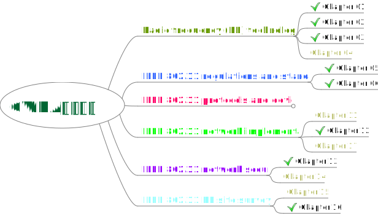
2 第一章 无线标准、组织和基础概述
2.1 要点记录
2.1.1 无线设备受管制的地方
- 频率
- 功率
- 传输方式
2.1.2 一些机构名称
- IEEE
制定标准，确保不同厂商设备之间的兼容性和互操作性
- IETF(Internet Engineering Task Force)
制定RFC文档，其中许多也成为了无线网络和安全方面的国际标准。
- WiFi Alliance
负责执行Wi-Fi产品的认证测试。
2.1.3 无线网络使用受管制的领域
- 频率
- 带宽
- IR（Intentional Radiator)的最大功率
- 等效全向辐射功率的最大值
- 使用于室内还是室外
- 频谱共享规则
2.1.4 5代WiFi技术
| Wi-Fi技术 | 频段 | 最大速率传输率 |
|---|---|---|
| 802.11a | 5 GHz | 54 Mbps |
| 802.11b | 2.4 GHz | 11 Mbps |
| 802.11g | 2.4 GHz | 54 Mbps |
| 802.11n | 2.4 GHz, 5GHz | 450 Mbps |
| 802.11ac | 5 GHz | 1.3 Gbps |
2.1.5 网络架构
- Core Layer
本层不对数据包进行路由或操作，只执行高速交换， 确保数据包快速和 可靠传输。
- Distribution Layer
本层将数据传输路由到不同的虚拟LAN和子网之间。
- Access Layer
负责将数据最终传递给用户。
2.1.6 通信基础
- 载波信号
一个信号如果要传递有效信息，必须要对其进行调整，使其能分辨出0，1 信息，对信号进行调整的方法称为调制（Modulation).对一个信号波的振幅， 频率和相位进行调整可以产生一个载波信号。
- 信号调制技术
将信号转换成载波信号。
- ASK
通过振幅的变化来携带数据信息，最容易受干扰的影响。
- FSK
通过频率的变化来携带数据信息。
- PSK
通过相位的变化来携带数据信息，802.11网络中使用此调制技术比较 广泛。
- ASK
2.1.7 WiFi学习资源
- WiFi联盟
- CWNP
- Andrew vonNagy's blog
- iGoogle Group: WiFi
2.2 Review Questions
- 802.11 technology is typically deployed at which fundamental
layer of network architecture?
A. Core
B. Distribution
C. AccessD. Network
- 答案解析
C. 802.11 wireless networking is typically used to connect client stations to the network via an access point. Autonomous and lightweight access points are deployed at the access layer, not the core or distribution layer. The Physical layer is a layer of the OSI model, not a network architecture layer.
- 答案解析
- Which organization is responsible for enforcing maximum
transmit power rules in an unlicensed frequency band?
A. IEEE
B. Wi-Fi Alliance
C. ISO
D. IETF
E. None of the above- 答案解析
E. RF communications are regulated differently in many regions and countries. The local regulatory domain authorities of individual countries or regions define the spectrum policies and transmit power rules.
- 答案解析
- 802.11 wireless bridge links are typically associated with
which network architecture layer?
A. Core
B. DistributionC. Access
D. Network
- 答案解析
B. 802.11 wireless bridge links are typically used to perform distribution layer services. Core layer devices are usually much faster than 802.11 wireless devices, and bridges are not used to provide access layer services. The Network layer is a layer of the OSI model, not a network architecture layer.
- 答案解析
- The 802.11-2012 standard was created by which organization?
A. IEEEB. OSI
C. ISO
D. Wi-Fi Alliance
E. FCC
- 答案解析
A. The Institute of Electrical and Electronics Engineers (IEEE) is responsible for the creation of all of the 802 standards.
- 答案解析
- What organization ensures interoperability of WLAN products?
A. IEEE
B. ITU-R
C. ISO
D. Wi-Fi AllianceE. FCC
- 答案解析
D. The Wi-Fi Alliance provides certification testing, and when a product passes the test, it receives a Wi-Fi Interoperability Certificate.
- 答案解析
- What type of signal is required to carry data?
A. Communications signal
B. Data signal
C. Carrier signalD. Binary signal
E. Digital signal
- 答案解析
C. A carrier signal is a modulated signal that is used to transmit binary data.
- 答案解析
- Which keying method is most susceptible to interference from
noise?
A. FSK
B. ASKC. PSK
D. DSK
- 答案解析
B. Because of the effects of noise on the amplitude of a signal, amplitude-shift keying (ASK) has to be used cautiously.
- 答案解析
- Which sublayer of the OSI model’s Data-Link layer is used for
communication between 802.11 radios?
A. LLC
B. WPA
C. MACD. FSK
- 答案解析
C. The IEEE 802.11-2012 standard defines communication mechanisms at only the Physical layer and MAC sublayer of the Data-Link layer of the OSI model. The Logical Link Control (LLC) sublayer of the Data-Link layer is not defined by the 802.11-2012 standard. WPA is a security certification. FSK is a modulation method.
- 答案解析
- While performing some research, Janie comes across a reference
to a document titled RFC 3935. Which of the following
organization’s website would be best to further research this
document?
A. IEEE
B. Wi-Fi Alliance
C. WECA
D. FCC
E. IETF- 答案解析
E. The IETF is responsible for creation of RFC documents. The IEEE is responsible for the 802 standards. The Wi-Fi Alliance is responsible for certification tests. The Wi-Fi Alliance used to be known as WECA but changed its name to Wi-Fi Alliance in 2002. The FCC is responsible for RF regulatory rules in the United States.
- 答案解析
- The Wi-Fi Alliance is responsible for which of the following
certification programs?
A. 802.11i
B. WEP
C. 802.11-2012
D. WMME. PSK
- 答案解析
D. Wi-Fi Multimedia (WMM) is a Wi-Fi Alliance certification program that enables Wi-Fi networks to prioritize traffic generated by different applications. 802.11-2012 is the IEEE standard, and WEP (Wired Equivalent Privacy) is defined as part of the IEEE 802.11-2012 standard. 802.11i was the IEEE amendment that defined robust security network (RSN) and is also part of the 802.11-2012 standard. PSK is not a standard; it is an encoding technique.
- 答案解析
- Which wave properties can be modulated to encode data? (Choose
all that apply.)
A. AmplitudeB. FrequencyC. PhaseD. Wavelength
- 答案解析
A, B and C. The three keying methods that can be used to encode data are amplitude-shift keying (ASK), frequency-shift keying (FSK), and phase-shift keying (PSK).
- 答案解析
- The IEEE 802.11-2012 standard defines communication mechanisms
at which layers of the OSI model? (Choose all that apply.)
A. Network
B. PhysicalC. Transport
D. Application
E. Data-LinkF. Session
- 答案解析
B and E. The IEEE 802.11-2012 standard defines communication mechanisms at only the Physical layer and MAC sublayer of the Data-Link layer of the OSI model.
- 答案解析
- The height or power of a wave is known as what?
A. Phase
B. Frequency
C. AmplitudeD. Wavelength
- 答案解析
C. Height and power are two terms that describe the amplitude of a wave. Frequency is how often a wave repeats itself. Wavelength is the actual length of the wave, typically measured from peak to peak. Phase refers to the starting point of a wave in relation to another wave.
- 答案解析
- Samantha received a gaming system as a gift. She would like to
have it communicate with her sister Jennifer’s gaming system
so that they can play against each other. Which of the
following technologies, if deployed in the two gaming systems,
should provide for the easiest configuration of the two
systems to communicate with each other?
A. Wi-Fi Personal
B. Wi-Fi DirectC. 802.11n
D. CWG-RF
E. Wi-Fi Protected Setup
- 答案解析
B. Wi-Fi Direct is designed to provide easy setup for communications directly between wireless devices. Wi-Fi Personal does not exist. 802.11n will likely provide connectivity, but setup could be easy or difficult depending on the environment. CWG-RF is designed for Wi-Fi and cellular radios in a converged handset. Wi-Fi Protected Setup is designed to simplify security setup.
- 答案解析
- What other Wi-Fi Alliance certifications are required before a
Wi-Fi radio can also be certified as Voice Enterprise
compliant? (Choose all that apply.)
A. WMM-Power SaveB. Wi-Fi Direct
C. WPA2-EnterpriseD. Voice Personal
E. WMM-Admission Control- 答案解析
A, C and E. Voice Enterprise offers enhanced support for voice applications in enterprise Wi-Fi networks. Voice Enterprise equipment must also support seamless roaming between APs, WPA2-Enterprise security, optimization of power through the WMM-Power Save mechanism, and traffic management through WMM-Admission Control.
- 答案解析
- Which of the following wireless communications parameters and
usage are typically governed by a local regulatory authority?
(Choose all that apply.)
A. FrequencyB. BandwidthC. Maximum transmit powerD. Maximum EIRPE. Indoor/outdoor usage- 答案解析
A, B, C, D and E. All of these are typically regulated by the local or regional RF regulatory authority.
- 答案解析
- The Wi-Fi Alliance is responsible for which of the following
certification programs?(Choose all that apply.)
A. WECA
B. Voice PersonalC. 802.11v
D. WAVE
E. WMM-PS- 答案解析
B and E. The Wi-Fi Alliance maintains certification programs to ensure vendor interoperability. Voice Personal is a certification program that defines enhanced support for voice applications in residential and small-business Wi-Fi networks. WMM-PS is a certification program that defines methods to conserve battery power for devices using Wi-Fi radios by managing the time the client device spends in sleep mode.
- 答案解析
- A wave is divided into degrees. How many degrees make up a
complete wave?
A. 100
B. 180
C. 212
D. 360- 答案解析
D. A wave is divided into 360 degrees.
- 答案解析
- What are the advantages of using unlicensed frequency bands
for RF transmissions? (Choose all that apply.)
A. There are no government regulations.
B. There is no additional financial cost.C. Anyone can use the frequency band.D. There are no rules.
- 答案解析
B and C. The main advantages of an unlicensed frequency are that permission to transmit on the frequency is free and that anyone can use the unlicensed frequency. Although there are no additional financial costs, you still must abide by transmission regulations and other restrictions. The fact that anyone can use the frequency band is also a disadvantage because of overcrowding.
- 答案解析
- The OSI model consists of how many layers?
A. Four
B. Six
C. SevenD. Nine
- 答案解析
C. The OSI model is sometimes referred to as the seven-layer model.
- 答案解析
3 第二章 无线射频基础
3.1 射频(Radio Frequency, RF)信号的定义
物理层的核心是射频传输。
射频信号刚开始是由信号发送器产生的一种交流电信号，这种交流电信号通 过铜导线（同轴线缆），以电磁波的形式通过天线发射出去。
3.2 射频的特征
每个射频信号具备如下几个特征：
- 波长
射频信号的波长是一个周期传输的距离。
一般人认为更高频率的电磁波信号，波长更小，信号衰减速度比低频率，波长 较长的电磁波要快。而实际上，RF信号的频率和波长属性并不会导致信号 衰减，而距离才是导致信号衰减的主要原因。
所有天线都有一个接收功率的有效区域，称为孔径(apertune), 更高频率 的天线接收较低频率的信号所需要的RF能量要小些。
尽量波长和频率不会造成衰减，但给人的感觉就是较小波长的高频率信号 比较长波长的低频率信号衰减更快。所以，当无线链路其他情况一样的条 件下，使用5G无线电波的Wi-Fi设备会比使用2.4G无线电波的设备拥有较小 的传输距离和较小的覆盖范围。
Site Survey: 测试设备的信号覆盖范围的一个过程。
- 频率
一个RF信号一秒钟出现的周期次数即为信号的频率，单位Hz。波长与频率 成反比。
- 振幅
RF信号的一个非常重要的属性，可描述为信号的强度。振幅会由于信号的 衰减而变化，但是信号的波长和频率却是保持不变的。
- 相位
一般是用于描述信号之间的关系。
3.3 射频的行为
- 波传播(Wave propagation)
RF信号传输的过程，即远离发送方天线的过程。
- 吸收(Absorption)
RF最常见的行为是吸收。如果一个信号并没有从一个物体中反射回来，而 是通过了该物体，则认为发生了100%的信号吸收。
不同材料的物体对信号的吸收情况不一样。砖和混凝土结构的墙面会吸收 相当多的信号，而干燥的墙面则会相对吸收少些信号。比如2.4G信号通过 一个砖墙后，还剩下1/16的信号强度，但是如果通过普通的墙面，则仅损 失大概1/2的信号强度。水也是一种媒介，会吸收大部分信号。
- 反射(Reflection)
当一个无线电波碰到一个比它大的光滑的物体时，电磁波会反转到另一个 方向传播，这种行为称为反射。一般金属制造的物体都会反射电磁波。
当反射的信号与原始信号会产生传输的时间差，即deplay spread，会导致 intersymbol干涉，从而导致数据被破坏以及Layer 2数据重传。
反射是802.11a/b/g WLAN无线设备性能差的一个主要原因之一。因为反射 会产生多径效应，多径效应会降低接收到的信号的强度和质量，甚至会导 致数据破坏或信号归零。
802.11n和802.11ac无线电波利用了MIMO天线阵列和高级的信号处理技术， 可以利用多径效应，发掘出它的优势，并应用在数据传输上。
- 散射(Scattering)
百度百科：散射是指由传播介质的不均匀性引起的光线向四周射去的现象。 如一束光通过稀释后的牛奶后为粉红色，而从侧面和上面看，却是浅蓝色 的。
- 折射(Refraction)
当一个RF信号通过不同密度的媒介时，会导致电波波的方向发生改变，这 种现象称为折射。折射一般是由于大气条件产生的。
三种最常见的折射原因为：水蒸气，空气温度的变化以及空气压力的变化。
- 衍射(Diffraction)
衍射是指信号经过一个障碍物体时，传播路径发生了变化，没有碰到障碍 物的其他电波仍然保持原来的传播路径和方向。 衍射现象会导致在障碍物 的背面产生一个区域称为RF阴影区，这块区域要么完全收不到电波信号， 要么只能收到比较弱的电波信号。
- 衰减(Loss (attenuation))
指信号强度或振幅降低了。在无线通信过程的有线部分，即RF线缆，AC电 流信号会损失强度，因为同轴线缆和其他连接器件有电子阻抗。
- 自由空间路径损耗(Free space path loss)
即便排除上述的一些因素，根据物理定律，一个无线电波在向四周传播过 程中，随着距离越来越远，信号强度也会越来越弱，直到接收器无法感知 到该信号的存在。
- 多径(Multipath)
由于上述存在的反射，散射，折射，衍射等现象，会导致相同的信号存在 多条传输路径。
- 增益(Gain (amplification))
加大信号的振幅或信号强度。有两种类型的增益：主动增益和被动增益。
收发器和RF放大器是主动增益设备，而天线是被动增益设备。
3.4 Review Questions
- What are some results of multipath interference? (Choose all
that apply.)
A. Scattering delay
B.
UpfadeC.
Excessive retransmissionsD. Absorption
- 答案解析
B and C. Multipath may result in attenuation, amplification, signal loss, or data corruption. If two signals arrive together in phase, the result is an increase in signal strength called upfade. The delay spread may also be too significant and cause data bits to be corrupted, resulting in excessive layer 2 retransmissions.
- 答案解析
- What term best defines the linear distance traveled in one
positive-to-negative-to-positive oscillation of an
electromagnetic signal?
A. Crest
B. Frequency
C. Trough
D. Wavelength- 答案解析
A. The wavelength is the linear distance between the repeating crests (peaks) or repeating troughs (valleys) of a single cycle of a wave pattern.
- 答案解析
- Which of the following statements are true about amplification?
(Choose all that apply.)
A. All antennas require an outside power source.
B.
RF amplifiers require an outside power source.C.
Antennas are passive gain amplifiers that focus the energy of a signal.D. RF amplifiers passively increase signal strength by focusing the AC current of the signal.
- 答案解析
B and C. RF amplifiers introduce active gain with the help of an outside power source. Passive gain is typically created by antennas that focus the energy of a signal without the use of an outside power source.
- 答案解析
- A standard measurement of frequency is called what?
A.
HertzB. Milliwatt
C. Nanosecond
D. Decibel
E. K-factor
-. 答案解析
A. The standard measurement of the number of times a signal cycles per second is hertz (Hz). One Hz is equal to one cycle in 1 second.
- When an RF signal bends around(绕过) an object, this propagation
behavior is known as what?
A. Stratification
B. Refraction(折射）
C. Scattering
D. =Diffraction=（衍射）
E. Attenuation
- 答案解析
A. Often confused with refraction, the diffraction propagation is the bending of the wave front around an obstacle. Diffraction is caused by some sort of partial blockage of the RF signal, such as a small hill or a building that sits between a transmitting radio and a receiver.
- 答案解析
- When the multiple RF signals arrive at a receiver at the same
time and are _ with the primary wave, the result can be _
of the primary signal.
A. out of phase, scattering
B.
in phase, intersymbol interferenceC. in phase, attenuation
D. 180 degrees out of phase, amplification
E. in phase, cancellation
F.
180 degrees out of phase, cancellation- 答案解析
F. Nulling, or cancellation, can occur when multiple RF signals arrive at the receiver at the same time and are 180 degrees out of phase with the primary wave.
- 答案解析
- Which of the following statements are true? (Choose all that
apply.)
A. When upfade occurs, the final received signal will be stronger than the original transmitted signal.
B.
When downfade occurs, the final received signal will never be tronger than the origioriginal transmitted signal.C.
When upfade occurs, the final received signal will never be stronger than the original transmitted signal.D. When downfade occurs, the final received signal will be stronger than the original transmitted signal.
- 答案解析
B and C. When the multiple RF signals arrive at the receiver at the same time and are in phase or partially out of phase with the primary wave, the result is an increase in signal strength (amplitude). However, the final received signal, whether affected by upfade or downfade, will never be stronger than the original transmitted signal because of free space path loss.
- 答案解析
- What is the frequency of an RF signal that cycles 2.4 million
times per second?
A. 2.4 hertz
B.
2.4 MHzC. 2.4 GHz
D. 2.4 kilohertz
E. 2.4 KHz
- 答案解析
B. 802.11 wireless LANs operate in the 5 GHz and 2.4 GHz frequency range. However，2.4 GHz is equal to 2.4 billion cycles per second. The frequency of 2.4 million cycles per second is 2.4 MHz.
- 答案解析
- What is the best example of a time domain tool that could be
used by an RF engineer?
A.
OscilloscopeB. Spectroscope
C. Spectrum analyzer
D. Refractivity gastroscope
- 答案解析
A. An oscilloscope is a time domain tool that can be used to measure how a signal’s amplitude changes over time. A frequency domain tool called a spectrum analyzer is a more commonplace tool most often used during site surveys.
- 答案解析
- What are some objects or materials that are common causes of
reflection? (Choose all that apply.)
A.
MetalB. Trees
C.
Asphalt roadD.
LakeE. Carpet floors(地毯)
- 答案解析
A, C and D. This is a tough question to answer because many of the same mediums can cause several different propagation behaviors. Metal will always bring about reflection. Water is a major source of absorption; however, large bodies of water can also cause reflection. Flat surfaces such as asphalt roads, ceilings, and walls will also result in reflection behavior.
- 答案解析
- Which of these propagation behaviors can result in multipath?
(Choose all that apply.)
A.
RefractionB.
DiffractionC.
ReflectionD.
ScatteringE. None of the above
- 答案解析
A, B, C and D. Multipath is a propagation phenomenon that results in two or more paths of a signal arriving at a receiving antenna at the same time or within nanoseconds of each other. Because of the natural broadening of the waves, the propagation behaviors of reflection, scattering, diffraction, and refraction can all result in multiple paths of the same signal. The propagation behavior of reflection is usually considered to be the main cause of high-multipath environments.
- 答案解析
- Which behavior can be described as an RF signal encountering a
chain link fence, causing the signal to bounce into multiple
directions?
A. Diffraction
B.
ScatterC. Reflection
D. Refraction
E. Multiplexing
- 答案解析
B. Scattering, or scatter, is defined as an RF signal reflecting in multiple directions when encountering an uneven surface.
- 答案解析
- Which 802.11 radio technologies are most impacted by the
destructive effects of multipath? (Choose all that apply.)
A.
802.11aB.
802.11bC.
802.11gD. 802.11n
E. 802.11i
- 答案解析
A, B and C. High multipath environments can have a destructive impact on legacy 802.11a/b/g radio transmissions. Multipath has a constructive effect with 802.11n and 802.11ac transmissions that utilize MIMO antenna diversity and maximum ratio combining (MRC) signal processing techniques. Multipath does not affect the security mechanisms defined by 802.11i.
- 答案解析
- Which of the following can cause refraction of an RF signal
traveling through it? (Choose all that apply.)
A.
Shift in air temperatureB.
Change in air pressureC.
HumidityD.
SmogE. Wind
F. Lightning
- 答案解析
A, B, C and D. Air stratification（大气分层） is a leading cause of refraction(折射) of an RF signal. Changes in air temperature, changes in air pressure, and water vapor are all causes of refraction. Smog can cause a density change in the air pressure as well as increased moisture(湿气).
- 答案解析
- Which of the following statements are true about free space
path loss? (Choose all that apply.)
A.
RF signals will attenuate as they travel, despite the lack of attenuation caused by obstructions.B. Path loss occurs at a constant linear rate.
C. Attenuation is caused by obstructions.
D.
Path loss occurs at a logarithmic rate.- 答案解析
A and D. Because of the natural broadening of the wave front, electromagnetic signals lose amplitude as they travel away from the transmitter. The rate of free space path loss is logarithmic and not linear. Attenuation of RF signals as they pass through different mediums does occur but is not a function of FSPL.
- 答案解析
- What term is used to describe the time differential between a
primary signal and a reflected signal arriving at a receiver?
A. Path delay
B. Spread spectrum
C. Multipath
D.
Delay spread- 答案解析
D. The time difference due to a reflected signal taking a longer path is known as the delay spread. The delay spread can cause intersymbol interference, which results in data corruption and layer 2 retransmissions.
- 答案解析
- What is an example of a frequency domain tool that could be
used by an RF engineer?
A. Oscilloscope
B. Spectroscope
C.
Spectrum analyzerD. Refractivity gastroscope
- 答案解析
C. A spectrum analyzer is a frequency domain tool that can be used to measure amplitude in a finite frequency spectrum. An oscilloscope is a time domain tool.
- 答案解析
- Using knowledge of RF characteristics and behaviors, which two
options should a WLAN engineer be most concerned about during
an indoor site survey? (Choose all that apply.)
A.
Brick wallsB. Indoor temperature
C.
Wood-lath plaster wallsD. Drywall
- 答案解析
A and C. Brick walls are very dense and will significantly attenuate a 2.4 GHz and 5 GHz signal. Older structures that are constructed with wood-lath plaster walls often have wire mesh in the walls, which was used to help hold the plaster to the walls. Wire mesh is notorious for disrupting and preventing RF signals from passing through walls. Wire mesh is also used on stucco exteriors. Drywall will attenuate a signal but not to the extent of water, cinder blocks, or other dense mediums. Air temperature has no significance during an indoor site survey.
- 答案解析
- Which three properties are interrelated?
A.
Frequency, wavelength, and the speed of lightB. Frequency, amplitude, and the speed of light
C. Frequency, phase, and amplitude
D. Amplitude, phase, and the speed of sound
- 答案解析
A. There is an inverse relationship between frequency and wavelength. A simplified explanation is that the higher the frequency of an RF signal, the shorter the wavelength will be of that signal. The longer the wavelength of an RF signal, the lower the frequency of that signal.
- 答案解析
- Which RF behavior best describes a signal striking a medium
and bending in a different direction?
A.
Refraction(折射)B. Scattering(散射)
C. Diffusion
D. Diffraction(衍射)
E. Microwave reflection
- 答案解析
A. Refraction is the bending of an RF signal when it encounters a medium.
- 答案解析
4 第三章 无线射频组件、测量与数学原理
4.1 RF通信的组件
data send path: Transmitter –> Antenna Cable –> Intentional radiator(IR) –> EIRP
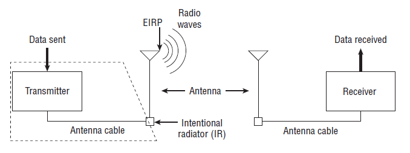
Figure 2: RF components
4.1.1 Transmitter(发射机)
The transmitter is the initial component in the creation of the wireless medium. The computer hands the data off to the transmitter, and it is the transmitter’s job to begin the RF communication.
The transmitter takes the data provided and modifies the AC signal by using a modulation technique to encode the data into the signal.
被调制后的AC信号现在已经变成一个载波信号，包含（承载）了要传输的数 据。载波信号接着被直接传输到天线或通过线缆传输到天线。
总结来看，Transmitter的主要作用是：
- 产生某个特定频率的信号。
- 决定原始信号的振幅，或者说是Transmitter的功率级别，信号波的振幅 越大，Transmitter所需要的功率就越大。当然，这个功率要受到管理当 局的管制。
4.1.2 Antenna(天线)
天线提供了两个功能：
- When connected to the transmitter, it collects the AC signal that it receives from the transmitter and directs, or radiates, the RF waves away from the antenna in a pattern specific to the antenna type.
- When connected to the receiver, the antenna takes the RF waves
that it receives through the air and directs the AC signal to
the receiver.
接收方将收到的AC Signal转换成比特和字节。
isotropic radiator: 全方向等同辐射器，即在各个方向发射信号的强度是 等同的。太阳是一个很好的例子。但是，生产出完成符合isotropic radiator要求的天线是有困难的，所以天线本身的结构也会影响各个方向上 的信号传输。一般来说，有两种方法来增加天线的输出功率：
- 在Transmitter端使用更强的功率去产生信号。
- 使天线将信号聚集于某个方向会范围输出。
4.1.3 Receiver(接收器)
The receiver is the final component in the wireless medium.The receiver takes the carrier signal that is received from the antenna and translates the modulated signals into 1s and 0s.
4.1.4 Intentional Radiator
定义： a device that intentionally generates and emits radio frequency energy by radiation or induction.
根据定义描述，这是一种专门设计用来产生RF的装置，它包含了：
- transmitter
- all cables and connector
- any other equipment(grounding, lighting arrestors, amplifiers, attenuators and so forth)
IR的功率量测点是在提供给天线输入的连接点处。功率大小一般用mW或 dBm(decibels relative to 1 milliwatt，伏特分贝)来表示。
4.1.5 Equivalent Isotropically Radiated Power
Equivalent isotropically radiated power (EIRP) is the highest RF signal strength that is transmitted from a particular antenna.
一般天线具备定向或聚集从IF传过来的RF信号能量的功能，EIRRP是从天线 输出的一个功率，它可以放大输入进来的RF信号，所以EIRP的输出功率也是 受到管制的一个指标。
4.1.6 Units of Power and Comparison
- Units of power (absolute)
- watt (W)
- milliwatt (mW)
- decibels relative to 1 milliwatt (dBm) 当功率为1 mW时，dBm值为0。 dBm = 10 X log10(PmW) 所以，100mW功率相当于+20 dBm。 大部分802.11无线电波的信号功率为1mW到100mW，由于信号传播过程中 的损耗，收到的信号功率一般低于1mW，-40dBm已经是收到的比较强的 信号了。
- Units of comparison (relative)
- decibel (dB) 描述功率的改变
- decibels relative to an isotropic radiator (dBi) 一般用来衡量 天线增益, 即天线的信号相对输出强度。
- decibels relative to a half-wave dipole antenna(偶极天线) (dBd)
a dBd value is the increase in gain of an antenna when it is
compared to the signal of a dipole antenna.
A standard dipole antenna has a dBi value of 2.14. If an antenna has a value of 3 dBd, this means that it is 3 dB greater than a dipole antenna.
3 dBd = 2.14 dBi + 3 = 5.14 dBi
Remember the 6 dB rule: +6 dB doubles the distance of the usable signal;–6 dB halves the distance of the usable signal.
4.2 RF Mathematics
4.2.1 Rule of 10s and 3s
- For every 3 dB of gain (relative), double the absolute power (mW). 3 dB gain = mW * 2
- For every 3 dB of loss (relative), halve the absolute power (mW). 3 dB loss = mW / 2
- For every 10 dB of gain (relative), multiply the absolute power (mW) by a factor of 10. 10 dB gain = mW * 10
- For every 10 dB of loss (relative), divide the absolute power (mW) by a factor of 10. 10 dB loss = mW / 10
4.3 Noise Floor
背景干扰信号， 来源很多，比如：附近802.11设备传输的信号，未调制过的 来自其他类型设备的干扰波等。背景干扰信号的振幅随着环境的不同，也不 一样。在2.4 G ISM信道，背景干扰信号强度可能为-100dBm，然而，在RF环 境下，背景干扰信号强度可能为-90dBm。一般情况下，5G信道干扰信号强度 要小些，因为5G 频段相对没有2.4G拥挤。
4.4 信噪比(SNR)
SNR是衡量信号质量的一个指标。SNR是接收到的信号强度与背景干扰信号强 度之间的差值，不是比率。例如，无线设备接收到的信号强度为-85dBm，而 背景干扰信号的强度为-100dBm，则SNR值为15dB。
SNR值大于或等于25 dB时，则认为信号质量很好，而当SNR低于10 dB时，则 认为信号质量很差。
4.5 接收到的信号强度指示(RSSI)
Receive sensitivity: the power level of an RF signal required to be successfully received by the receiver radio.
在wlan设置中，Receive Sensitivity通常被定义为网络速度的一个功能。 Wi-Fi厂商一般指定各种速率下Receive Sensitity阀值。对于一个接收器来 说，要支持更高速度，就需要更多的功率。不同的速率采用不同的信号调制 技术和编码方法。更高速率下的编码方法更容易出现数据被破坏。
The 802.11-2012 standard defines the received signal strength indicator (RSSI) as a relative metric used by 802.11 radios to measure signal strength (amplitude). The 802.11 RSSI measurement parameter can have a value from 0 to 255. The RSSI value is designed to be used by the WLAN hardware manufacturer as a relative measurement of the RF signal strength that is received by an 802.11 radio. RSSI metrics are typically mapped to receive sensitivity thresholds expressed in absolute dBm values.
Received signal strength indicator (RSSI) metrics (vendor example)
| RSSI | Receive sensitivity threshold | Signal strength (%) | Signal-to-noise ratio | Signal quality (%) |
|---|---|---|---|---|
| 30 | –30 dBm | 100% | 70 dB | 100% |
| 25 | –41 dBm | 90% | 60 dB | 100% |
| 20 | –52 dBm | 80% | 43 dB | 90% |
| 21 | –52 dBm | 80% | 40 dB | 80% |
| 15 | –63 dBm | 60% | 33 dB | 50% |
| 10 | –75 dBm | 40% | 25 dB | 35% |
| 5 | –89 dBm | 10% | 10 dB | 5% |
| 0 | –110 dBm | 0% | 0 dB | 0% |
4.6 Link budget
When radio communications are deployed, a link budget is the sum of all the planned and expected gains and losses from the transmitting radio, through the RF medium, to the receiver radio.
The purpose of link budget calculations is to guarantee that the final received signal amplitude is above the receiver sensitivity threshold of the receiver radio.
4.7 Fade margin/system operating margin
Fade margin is a level of desired signal above what is required. 如果一个接收器的Receive Sensitity是-80 dBm，即只要接收到的信号强度 大于-80 dBm，则数据传输就能成功。但问题是，由于信号传输过程中，会受 到一些外部干扰导致接收到的信号强度出现波动，为了应对这种波动的特点， 通常会规划Receive Sensitity值以上的10 dB到25 dB大小的缓冲区值区间， 这个区间值就是Fade Margin。对于Fade Margin为10 dB的情况，这时设定的 Receive Sensitity的阀值为-70 dBm。
4.8 Review Questions
- What RF component is responsible for generating the AC signal?
A. Antenna
B. Receiver
C.
TransmitterD. Transponder
答案解析
C. The transmitter generates the AC signal and modifies it by using a modulation technique to encode the data into the signal.
- A point source that radiates RF signal equally in all
directions is known as what?
A. Omnidirectional signal generator
B. Omnidirectional antenna
C. Intentional radiator
D. Nondirectional transmitter
E.
Isotropic radiator答案解析
E. An isotropic radiator is also known as a point source.
- When calculating the link budget and system operating margin of
a point-to-point outdoor WLAN bridge link, what factors should
be taken into account? (Choose all that apply.)
A.
DistanceB.
Receive sensitivityC.
Transmit amplitudeD. Antenna height
E.
Cable lossF.
Frequency答案解析
A, B, C, E and F. When radio communications are deployed, a link budget is the sum of all gains and losses from the transmitting radio, through the RF medium, to the receiver radio. Link budget calculations include original transmit gain and passive antenna gain. All losses must be accounted for, including free space path loss. Frequency and distance are needed to calculate free space path loss. The height of an antenna has no significance when calculating a link budget; however, the height could affect the Fresnel and blockage to it.
- The sum of all the components from the transmitter to the
antenna, not including the antenna, is known as what? (Choose
two.)
A.
IRB. Isotropic radiator
C. EIRP
D.
Intentional radiator答案解析
A and D. IR is the abbreviation for intentional radiator. The components making up the IR include the transmitter, all cables and connectors, and any other equipment (grounding, lightning arrestors, amplifiers, attenuators, and so forth) between the transmitter and the antenna. The power of the IR is measured at the connecter that provides the input to the antenna.
- The highest RF signal strength that is transmitted from an
antenna is known as what?
A.
Equivalent isotropically radiated powerB. Transmit sensitivity
C. Total emitted power
D. Antenna radiated power
答案解析
A. Equivalent isotropically radiated power, also known as EIRP, is a measure of the strongest signal that is radiated from an antenna.
- Select the absolute units of power. (Choose all that apply.)
A.
WattB.
MilliwattC. Decibel
D.
dBmE. Bel
答案解析
A, B and D. Watts, milliwatts, and dBms are all absolute power measurements. One watt is equal to 1 ampere (amp) of current flowing at 1 volt. A milliwatt is 1/1,000 of 1 watt. dBm is decibels relative to 1 milliwatt.
- Select the units of comparison (relative). (Choose all that
apply.)
A. dBm
B.
dBiC.
DecibelD.
dBdE.
Bel答案解析
B, C, D and E. The unit of measurement known as a bel is a relative expression and a measurement of change in power. A decibel (dB) is equal to one-tenth of a bel. Antenna gain measurements of dBi and dBd are relative measurements. dBi is defined as decibels referenced to an isotropic radiator. dBd is defined as decibels referenced to a dipole.
- 2 dBd is equal to how many dBi?
A. 5 dBi
B. 4.41 dBi
C.
4.14 dBiD. The value cannot be calculated.
答案解析
C. To convert any dBd value to dBi, simply add 2.14 to the dBd value.
- 23 dBm is equal to how many mW?
A.
200 mWB. 14 mW
C. 20 mW
D. 23 mW
E. 400 mW
答案解析
A. To convert to mW, first calculate how many 10s and 3s are needed to add up to 23, which is 0 + 10 + 10 + 3. To calculate the mW, you must multiply 1 × 10 × 10 × 2.
- A wireless bridge is configured to transmit at 100 mW. The
antenna cable and connectors produce a 3 dB loss and are
connected to a 16 dBi antenna. What is the EIRP?
A. 20 mW
B. 30 dBm
C.
2,000 mWD. 36 dBm
E. 8 W
- A WLAN transmitter that emits a 400 mW signal is connected to
a cable with a 9 dB loss. If the cable is connected to an
antenna with 19 dBi of gain, what is the EIRP?
A.
4 WB. 3,000 mW
C. 3,500 mW
D. 2 W
- WLAN vendors use RSSI thresholds to trigger which radio card
behaviors? (Choose all that apply.)
A. Receive sensitivity
B.
RoamingC. Retransmissions
D.
Dynamic rate switching答案解析
B and D. RSSI thresholds are a key factor for clients when they initiate the roaming handoff. RSSI thresholds are also used by vendors to implement dynamic rate switching, which is a process used by 802.11 radios to shift between data rates.
- Received signal strength indicator (RSSI) metrics are used by
802.11 radios to define which RF characteristics?
A.
Signal strengthB. Phase
C. Frequency
D. Modulation
答案解析
A. The received signal strength indicator (RSSI) is a metric used by 802.11 radio cards to measure signal strength (amplitude). Some vendors use a proprietary scale to also correlate to signal quality. Most vendors erroneously define signal quality as the signal-to-noise ratio (SNR). The signal-to-noise ratio is the difference in decibels between the received signal and the background noise (noise floor).
- dBi is a measure of what?
A. The output of the transmitter
B.
The signal increase caused by the antennaC. The signal increase of the intentional transmitter
D. The comparison between an isotropic radiator and the transceiver
E. The strength of the intentional radiator
答案解析
B. dBi is defined as “decibel gain referenced to an isotropic radiator” or “change in power relative to an antenna.” dBi is the most common measurement of antenna gain.
- Which of the following are valid calculations when using the
rule of 10s and 3s? (Choose all that apply.)
A.
For every 3 dB of gain (relative), double the absolute power (mW).B. For every 10 dB of loss (relative), divide the absolute power (mW) by a factor of 2.
C. For every 10 dB of loss (absolute), divide the relative power (mW) by a factor of 3.
D. For every 10 mW of loss (relative), multiply the absolute power (dB) by a factor of 10.
E. For every 10 dB of loss (relative), halve the absolute power (mW).
F.
For every 10 dB of loss (relative), divide the absolute power (mW) by a factor of 10.答案解析
A and F. The four rules of the 10s and 3s are as follows: For every 3 dB of gain (relative), double the absolute power (mW). For every 3 dB of loss (relative), halve the absolute power (mW). For every 10 dB of gain (relative), multiply the absolute power (mW) by a factor of 10. For every 10 dB of loss (relative), divide the absolute power (mW) by a factor of 10.
- A WLAN transmitter that emits a 100 mW signal is connected to
a cable with a 3 dB loss.If the cable is connected to an
antenna with 7 dBi of gain, what is the EIRP at the antenna
element?
A. 200 mW
B.
250 mWC. 300 mW
D. 400 mW
- In a normal wireless bridged network, the greatest loss of
signal is caused by what component?
A. Receive sensitivity
B. Antenna cable loss
C. Lightning arrestor
D.
Free space path loss答案解析
D. A distance of as little as 100 meters will cause FSPL of 80 dB, far greater than any other component. RF components such as connectors, lightning arrestors, and cabling all introduce insertion loss. However, FSPL will always be the reason for the greatest amount of loss.
- To double the distance of a signal, the EIRP must be increased
by how many dBs?
A. 3 dB
B.
6 dBC. 10 dB
D. 20 dB
答案解析
B. The 6 dB rule states that increasing the amplitude by 6 decibels will double the usable distance of an RF signal. The 6 dB rule is very useful for understanding antenna gain because every 6 dBi of extra antenna gain will double the usable distance of an RF signal.
- During a site survey of a point-to-point link between
buildings at a manufacturing plant, the WLAN engineer
determines that the noise floor is extremely high because of
all the machinery that is operating in the buildings. The
engineer is worried about a low SNR and poor performance due
to the high noise floor. What is a suggested best practice to
deal with this scenario?
A. Increase the access points’ transmission amplitude.
B. Mount the access points higher.
C. Double the distance of the AP signal with 6 dBi of antenna gain.
D.
Plan for coverage cells with a 5 dB fade margin.E. Increase the transmission amplitude of the client radios.
答案解析
D. In a high-multipath or noisy environment, a common best practice is to add a 5 dB fade margin when designing for coverage based on a vendor’s recommended received signal strength or the noise floor, whichever is louder.
- Which value should not be used to compare wireless network
cards manufactured by different WLAN vendors?
A. Receive sensitivity
B. Transmit power range
C. Antenna dBi
D.
RSSI答案解析
D. WLAN vendors execute RSSI metrics in a proprietary manner. The actual range of the RSSI value is from 0 to a maximum value (less than or equal to 255) that each vendor can choose on its own (known as RSSI_Max). Therefore, RSSI metrics should not be used to compare different WLAN vendor radios because there is no standard for the range of values or a consistent scale.
5 第五章 IEEE 802.11 标准
5.1 Original IEEE 802.11 standard
发布于1997年，称为IEEE Std 802.11-1997. 只定义和规范802.11设备物 理层和MAC的数据链路子层的行为。
PHY任务组定义了如下三个最初的物理层规范：
- Infrared (IR) 红外线，一种基于光的媒介。
- Frequency Hopping Spread Spectrum (FHSS)
无线频率信号通常分为窄波或扩频信号。 当RF信号以比所需要带宽更 宽的带宽传输数据时，该信号就可以认为是扩频信号。 ISM 2.402 GHz ~ 2.480 GHz
- Direct Sequence Spread Spectrum (DSSS)
使用固定信道的一种扩频技术。 ISM 2.4 GHz ~ 2.4835 GHz
it is important to understand that an 802.11 DSSS (Clause 16) radio cannot communicate with an 802.11 FHSS (Clause 14) radio.
Date Rates: 1 ~ 2M bps , a data rate is the speed and not actual throughput.
5.2 IEEE 802.11-2007 ratified amendments
5.2.1 802.11b-1999
- Clause 17 of the 802.11-2012 standard.
- The Physical layer medium is High-Rate DSSS (HR-DSSS)
- Frequency Space: 2.4 GHz to 2.4835 GHz ISM band.
- 为了提高2.4G数据传输率，使用了不同的扩频和编码技术：CCK（Complementary Code Keying）。
- 支持1， 2， 5.5， 11Mbps的速率。
5.2.2 802.11a-1999
- operate in 5GHz Frequency, using an RF technology called Orthogonal Frequency Division Multiplexing (OFDM).
- 支持6, 9, 12, 18, 24, 36, 48, 54速率。
- 不能与legacy802.11设备，802.11b, 802.11g的设备通信。
- 802.11a can coexist in the same physical space with 802.11, 802.11b, or 802.11g devices because these devices transmit in separate frequency ranges.
- 802.11a最初是想运行于三个不同的100MHz未受控的5G频段，这些频 段称为Unlicensed National Information Infrastructure (U-NII)， 即U-NII-1, U-NII-2, U-NII-3.
5.2.3 802.11g-2003
- use new technology called Extended Rate Physical(ERP).
- 传输频段：2.4GHz ~ 2.4835GHz.
- 与前代产品保持兼容。
| 802.11 legacy | 802.11b | 802.11g | 802.11a | |
|---|---|---|---|---|
| Frequency | 2.4 GHz ISM band | 2.4 GHz ISM band | 2.4 GHz ISM band | 5 GHz U-NII-1, U-NII-2, and U-NII-3 bands |
| Spread spectrum technology | FHSS or DSSS | HR-DSSS PBCC is optional. | ERP: ERP-OFDM and ERP-DSSS/CCK are mandatory. ERP-PBCC and DSSSOFDM are optional. | OFDM |
| Data rates | 1, 2 Mbps | DSSS: 1, 2 Mbps HR-DSSS: 5.5 and 11 Mbps | ERP-DSSS/CCK: 1, 2, 5.5, and 11 Mbps ERP-OFDM: 6, 12, and 24 Mbps are mandatory. Also supported are 9, 18, 36, 48, and 54 Mbps. ERP-PBCC: 22 and 33 Mbps | 6, 12, and 24 Mbps are mandatory. Also supported are 9, 18, 36, 48, and 54 Mbps. |
| Backward compatibility | N/A | 802.11 DSSS only | 802.11b HR-DSSS and 802.11 DSSS | None |
| Ratified | 1997 | 1999 | 2003 | 1999 |
5.2.4 802.11d-2001
增加了802.11设备用于其他国家的一些规范(欧美及日本以后的国家)，如Contry Code信息，会包 含在Beacons和Probe Response帧中。
5.2.5 802.11h-2003
该规范定义了DFS（动态频率改变）和TPC(传输功率控制)的行为。主要目 的是让运行于5G的802.11设备能自动侦测雷达信号，并避开雷达使用的 信道，防止干扰雷达设备的使用。
5.2.6 802.11i-2004
无线安全解决方案的三大关键部分：
- data privacy（加密）
- data integrity（防止被篡改）
- authentication（身份验证）
802.11标准一开始定义了两种认证方法：
- Open System (任何人都可以通过验证)
- Shared Key（存在安全隐患）
802.11i又称为RSN，提供了更强的数据加密机制和身份验证机制。主要的 改善体现在：
- Data Privacy
使用更强的加密方法CCMP，它采用的是AES算法。 同时也定义了一个可选的加密方法TKIP，使用RC4算法，主要是为了兼 容旧的WEP加密方式的设备。
- Data Integrity
为了保证接收到的数据没有被篡改，WEP使用的方法叫做 Initialization Check Value (ICV). TKIP使用的方法叫做Message Integrity Check (MIC). CCMP使用了强化版的MIC。另外，在所有的 802.11帧最后，都包含32-bit的CRC即FCS信息，用来保护帧负载的完 整性。
- Authentication
802.11i定义了两种认证方法：
- 802.1X with EAP methods
- PSK(Preshared Keys)
- RSN
定义了一整套方法，包含：认证建立，安全关联协商，为STA和AP动态 产生加密密钥等。
Wi-Fi Protected Access 2 (WPA2): 802.11i security amendment. WPA version 1: a preview of 802.11i.
5.2.7 802.11j-2004
The main goal set out by the IEEE Task Group j (TGj) was to obtain Japanese regulatory approval by enhancing the 802.11 MAC and 802.11a PHY to additionally operate in Japanese 4.9 GHz and 5 GHz bands.
5.2.8 802.11e-2005
The 802.11e amendment defines the layer 2 MAC methods needed to meet the QoS requirements for time-sensitive applications over IEEE 802.11 WLANs.
Wi-Fi Multimedia (WMM): a “mirror” of 802.11e.
5.3 IEEE 802.11-2012 ratified amendments
5.3.1 802.11r-2008
The 802.11r-2008 amendment is known as the fast basic service set transition (FT) amendment. The technology is more often referred to as fast secure roaming because it defines faster handoffs when roaming occurs between cells in a WLAN using the strong security defined by a robust secure network (RSN).
5.3.2 802.11k-2008
定义了一些Radio Resource Measurement的方法。如下是一些主要的 Radio Resource Measurement：
- Transmit Power Control (TPC)
802.11h定义了5G下的TPC的使用，这里主要定义了其他频段下TPC的 使用。
- Client Statistics
向AP回馈SNR，信号强度和数据传输速率等信息。
- Neighbor Reports
提供附近其他AP的一些信息，使得STA有能力判断是否可以漫游到其 他AP上。802.11k向STA反馈一些RF环境相关信息，便于STA更好地做 出漫游的选择。
5.3.3 802.11y-2008
The objective of the IEEE Task Group y (TGy) was to standardize the mechanisms required to allow high-powered, shared 802.11 operations with other non-802.11 devices in the 3650 MHz–3700 MHz licensed band in the United States.
5.3.4 802.11w-2009
提供一种安全的方式去传送管理帧，防止管理帧被窃听。802.11w帧也 称为强健管理帧。
5.3.5 802.11n-2009
增强2.4G和5G的吞吐量。定义了一种新的操作，叫做HT（High Throughput），对PHY和MAC进行了加强以支持高达600Mbps的数据传输率， 聚合吞吐率达到100Mbps以上。
HT无线使用了MIMO+OFDM技术。与802.11a/b/g设备兼容。
5.3.6 802.11p-2010
加强802.11标准规范以支持Intelligent Transportation Systems (ITS) applications。以更好地支持高速移动下的数据传输。
802.11p is also known as Wireless Access in Vehicular Environments (WAVE) and is a possible foundation for a US Department of Transportation project called Dedicated Short Range Communications (DSRC).
5.3.7 802.11z-2010
The purpose of IEEE Task Group z (TGz) was to establish and standardize a Direct Link Setup (DLS) mechanism to allow operation with non-DLS-capable access points.
DLS allows client stations to bypass the access point and communicate with direct frame exchanges.
5.3.8 802.11u-2011
主要解决802.11网络与其他外部网络之间的问题。
The 802.11u-2011 amendment is the basis for the Wi-Fi Alliance’s Hotspot 2.0 specification and its Passpoint certification.
5.3.9 802.11v-2011
802.11v provides for an exchange of information that can potentially ease the configuration of client stations wirelessly from a central point of management. 802.11v-2011 defines Wireless Network Management (WNM)
5.3.10 802.11s-2011
The 802.11s amendment proposes the use of a protocol for adaptive, autoconfiguring systems that support broadcast, multicast, and unicast traffic over a multihop mesh WDS.
5.4 Post-2012 ratified amendments
5.4.1 02.11ae-2012
The 802.11ae amendment specifies enhancements to QoS management.
5.4.2 802.11aa-2012
The 802.11aa amendment specifies QoS enhancements to the 802.11 Media Access Control (MAC) for robust audio and video streaming for both consumer and enterprise applications.
5.4.3 802.11ad-2012
The 802.11ad amendment defines Very High Throughput (VHT) enhancements using the much higher unlicensed frequency band of 60 GHz.
5.4.4 802.11ac-2013
The 802.11ac-2013 amendment defines Very High Throughput (VHT) enhancements below 6 GHz. The technology will only be used in the 5 GHz frequency bands where 802.11a/n radios already operate.
mainly improvements are:
- Wider Channels
802.11ac brings us the capability of 80 MHz and 160 MHz channels.
- New Modulation
802.11ac will provide the capability to use 256-QAM modulation, which has the potential to provide a 30 percent increase in speed.
- More Spatial Streams
802.11ac radios could be built to transmit and receive up to eight spatial streams.
- Improved MIMO and Beamforming
MU-MIMO, transmit a signal to multiple client stations on the same channel simultaneously if the client stations are in different physical areas.
5.4.5 802.11af-2014
The 802.11af amendment allows the use of wireless in the newly opened TV white space (TVWS) frequencies between 54 MHz and 790 MHz.
5.5 IEEE 802.11 draft amendments
5.5.1 802.11ah
The 802.11ah draft amendment defines the use of Wi-Fi in frequencies below 1 GHz.
5.5.2 802.11ai
The goal of the 802.11ai draft amendment is to provide a fast initial link setup (FILS). This technology could allow a STA to establish a secure link setup in less than 100 ms.
5.5.3 802.11aj
The 802.11aj draft amendment is to provide modifications to the IEEE 802.11ad-2012 amendment’s PHY and MAC layer to provide support for operating in the Chinese Milli-Meter Wave (CMMW) frequency bands.
5.5.4 802.11ak
The 802.11ak draft amendment is also referred to as General Link (GLK). The task group is exploring enhancement to 802.11 links for use in bridged networks.
5.5.5 802.11aq
enables delivery of network service information prior to the association of stations on an 802.11 network.
5.6 Review Questions:
- An ERP (802.11g) network mandates support for which two spread
spectrum technologies?
A. ERP-OFDMB. FHSS
C. ERP-PBCC
D. ERP-DSSS/CCKE. CSMA/CA
答案解析
A and D. Support for both Extended Rate Physical DSSS (ERP-DSSS/CCK) and Extended Rate Physical Orthogonal Frequency Division Multiplexing (ERP-OFDM) are required in an ERP WLAN, also known as an 802.11g WLAN. Support for ERPPBCC and DSSS-OFDM PHYs are optional in an ERP WLAN.
- The 802.11-2012 standard using an ERP-DSSS/CCK radio supports
which data rates?
A. 3, 6, and 12 Mbps
B. 6, 9, 12, 18, 24, 36, 48, and 54 Mbps
C. 6, 12, 24, and 54 Mbps
D. 6, 12, and 24 Mbps
E. 1, 2, 5.5, and 11 Mbps答案解析
E. ERP (802.11g) radios mandate the support for both ERP-DSSS/CCK and ERPOFDM spread spectrum technologies. ERP-DSSS/CCK supports data rates of 1, 2, 5.5, and 11 Mbps and is backward compatible with HR-DSSS (802.11b) and DSSS (802.11 legacy).
- Which types of devices were defined in the original 802.11
standard? (Choose all that apply.)
A. OFDM
B. DSSSC. HR-DSSS
D. IRE. FHSSF. ERP
答案解析
B, D and E. The original 802.11 standard defines three Physical layer specifications. An 802.11 legacy network could use FHSS, DSSS, or infrared. 802.11b defined the use of HR-DSSS, 802.11a defined the use of OFDM, and 802.11g defined ERP.
- Which 802.11 amendment defines wireless mesh networking
mechanisms?
A. 802.11n
B. 802.11u
C. 802.11sD. 802.11v
E. 802.11k
答案解析
C. The 802.11 Task Groups (TGs) has set forth the pursuit of standardizing mesh networking using the IEEE 802.11 MAC/PHY layers. The 802.11s amendment defines the use of mesh points, which are 802.11 QoS stations that support mesh services. A mesh point (MP) is capable of using a mandatory mesh routing protocol called Hybrid Wireless Mesh Protocol (HWMP) that uses a default path selection metric. Vendors may also use proprietary mesh routing protocols and metrics.
- A robust security network (RSN) requires the use of which
security mechanisms? (Choose all that apply.)
A. 802.11x
B. WEP
C. IPsec
D. CCMP/AESE. CKIP
F. 802.1X答案解析
D and F. The required encryption method defined by an RSN wireless network (802.11i) is Counter Mode with Cipher Block Chaining Message Authentication Code Protocol (CCMP), which uses the Advanced Encryption Standard (AES) algorithm. An optional choice of encryption is the Temporal Key Integrity Protocol (TKIP). The 802.11i amendment also requires the use of an 802.1X/EAP authentication solution or the use of preshared keys.
- An 802.11a radio card can transmit on the _ frequency and uses
_ spread spectrum technology.
A. 5 MHz, OFDM
B. 2.4 GHz, HR-DSSS
C. 2.4 GHz, ERP-OFDM
D. 5 GHz, OFDME. 5 GHz, DSSS
答案解析
D. 802.11a radio cards operate in the 5 GHz Unlicensed National Information Infrastructure (U-NII) 1–3 frequency bands using Orthogonal Frequency Division Multiplexing (OFDM).
- What are the required data rates of an OFDM station?
A. 3, 6, and 12 Mbps
B. 6, 9, 12, 18, 24, 36, 48, and 54 Mbps
C. 6, 12, 24, and 54 Mbps
D. 6, 12, and 24 MbpsE. 1, 2, 5.5, and 11 Mbps
答案解析
D. The IEEE 802.11-2012 standard requires data rates of 6, 12, and 24 Mbps for both OFDM and ERP-OFDM radios. Data rates of 6, 9, 12, 18, 24, 36, 48, and 54 Mbps are typically supported. 54 Mbps is the maximum defined rate.
- When implementing an 802.1X/EAP RSN network with a VoWiFi
solution, what is needed to avoid latency issues during
roaming?
A. Inter-Access Point Protocol
B. Fast BSS TransitionC. Distributed Coordination Function
D. Roaming Coordination Function
E. Lightweight APs
答案解析
B. Fast basic service set transition (FT), also known as fast secure roaming, defines fast handoffs when roaming occurs between cells in a WLAN using the strong security defined in a robust security network (RSN). Applications such as VoIP that necessitate timely delivery of packets require the roaming handoff to occur in 150ms or less.
- Which new technologies debuted in the 802.11ac-2013 amendment?
(Choose all that apply.)
A. MIMO
B. MU-MIMOC. 256-QAMD. 40 MHz channels
E. 80 MHz channels答案解析
B, C and E. The 802.11ac amendment debuted and defined the use of 256-QAM modulation, eight spatial streams, multi-user MIMO, 80 MHz channels, and 160 MHz channels. 802.11 MIMO technology and 40 MHz channels debuted with the ratification of the 802.11n amendment.
- What is the primary reason that OFDM (802.11a) radios cannot
communicate with ERP (802.11g) radios?
A. 802.11a uses OFDM, and 802.11g uses DSSS.
B. 802.11a uses DSSS, and 802.11g uses OFDM.
C. 802.11a uses OFDM, and 802.11g uses CCK.
D. 802.11a operates at 5 GHz, and 802.11g operates at 2.4 GHz.E. 802.11a requires dynamic frequency selection, and 802.11g does not.
答案解析
D. Both 802.11a and 802.11g use OFDM technology, but because they operate at different frequencies, they cannot communicate with each other. 802.11a equipment operates in the 5 GHz U-NII bands, whereas 802.11g equipment operates in the 2.4 GHz ISM band.
- What two technologies are used to prevent 802.11 radios from
interfering with radar and satellite transmissions at 5 GHz?
A. Dynamic frequency selectionB. Enhanced Distributed Channel Access
C. Direct sequence spread spectrum
D. Temporal Key Integrity Protocol
E. Transmit power control答案解析
A and E. The 802.11-2012 standard defines mechanisms for dynamic frequency selection (DFS) and transmit power control (TPC) that may be used to satisfy regulatory requirements for operation in the 5 GHz band. This technology was originally defined in the 802.11h amendment, which is now part of the 802.11-2012 standard.
- Which 802.11 amendments provide for throughput of 1 Gbps or
higher? (Choose all that apply.)
A. 802.11aa
B. 802.11ab
C. 802.11acD. 802.11adE. 802.11ae
F. 802.11af
答案解析
C and D. The 802.11ac and 802.11ad amendments are often referred to as the “gigabit Wi-Fi” amendments because they define data rates of greater than 1 Gbps. The 802.11ac and 802.11ad Very High Throughput (VHT) task groups define transmission rates of up to 7 Gbps in an 802.11 environment.
- As defined by the 802.11-2012 standard, which equipment is
compatible? (Choose all that apply.)
A. ERP and HR-DSSSB. HR-DSSS and FHSS
C. OFDM and ERP
D. 802.11a and 802.11hE. DSSS and HR-DSSS答案解析
A, D and E. ERP (802.11g) requires the use of ERP-OFDM and ERP-DSSS/CCK in the 2.4 GHz ISM band and is backward compatible with 802.11b HR-DSSS and DSSS equipment. 802.11b uses HR-DSSS in the 2.4 GHz ISM band and is backward compatible with only legacy DSSS equipment and not legacy FHSS equipment. The 802.11h amendment defines use of TPC and DFS in the 5 GHz U-NII bands and is an enhancement of the 802.11a amendment. OFDM technology is used with all 802.11a- and 802.11h-compliant radios.
- Maximum data rates of are permitted using OFDM radios.
A. 108 Mbps
B. 22 Mbps
C. 24 Mbps
D. 54 MbpsE. 11 Mbps
答案解析
D. The 802.11-2012 standard using OFDM or ERP-OFDM radios requires data rates of 6, 12, and 24 Mbps. Data rates of 6, 9, 12, 18, 24, 36, 48, and 54 Mbps are typically supported. 54 Mbps is the maximum defined rate.
- What are the security options available as defined in the
original IEEE Std 802.11-1999 (R2003)? (Choose all that
apply.)
A. CCMP/AES
B. Open System authenticationC. Preshared keys
D. Shared Key authenticationE. WEPF. TKIP
答案解析
B, D and E. The original 802.11 standard defined the use of WEP for encryption. The original 802.11 standard also defined two methods of authentication: Open System authentication and Shared Key authentication.
- The 802.11u-2011 amendment is also known as what?
A. Wireless Interworking with External Networks (WIEN)B. Wireless Local Area Networking (WLAN)
C. Wireless Performance Prediction (WPP)
D. Wireless Access in Vehicular Environments (WAVE)
E. Wireless Access Protocol (WAP)
答案解析
A. The 802.11u draft amendment defines integration of IEEE 802.11 access networks with external networks in a generic and standardized manner. 802.11u is often referred to as Wireless Interworking with External Networks (WIEN).
- The 802.11-2012 standard defines which two technologies for
quality of service (QoS) in a WLAN?
A. EDCAB. PCF
C. Hybrid Coordination Function Controlled Channel AccessD. VoIP
E. Distributed Coordination Function
F. VoWiFi
答案解析
A and C. The 802.11e amendment (now part of the 802.11-2012 standard) defined two enhanced medium access methods to support quality of service (QoS) requirements. Enhanced Distributed Channel Access (EDCA) is an extension to DCF. Hybrid Coordination Function Controlled Channel Access (HCCA) is an extension to PCF. In the real world, only EDCA is implemented.
- The 802.11h amendment (now part of the 802.11-2012 standard)
introduced what two major changes for 5 GHz radios?
A. U-NII-2 ExtendedB. IAPP
C. Radar detectionD. Transmit Frequency Avoidance
E. Frequency hopping spread spectrum
答案解析
A and C. The 802.11h amendment effectively introduced two major enhancements: more frequency space in the U-NII-2 extended band and radar avoidance and detection technologies. All aspects of the 802.11h ratified amendment can now be found in Clause 10.8 and Clause 10.9 of the 802.11-2012 standard.
- The 802.11b amendment defined which PHY?
A. HR-DSSSB. FHSS
C. OFDM
D. PBCC
E. EIRP
答案解析
A. The 802.11b amendment defined systems that can transmit at data rates of 5.5 Mbps and 11 Mbps using High-Rate DSSS (HR-DSSS). 802.11b devices are also compatible with 802.11 DSSS devices and can transmit at data rates of 1 and 2 Mbps.
- Which layers of the OSI model are referenced in the 802.11
standard? (Choose all that apply.)
A. Application
B. Data-LinkC. Presentation
D. PhysicalE. Transport
F. Network
答案解析
B and D. The IEEE specifically defines 802.11 technologies at the Physical layer and the MAC sublayer of the Data-Link layer. By design, anything that occurs at the upper layers of the OSI model is insignificant to 802.11 communications.
6 第六章 无线网络与扩频技术
6.1 Industrial, Scientific, and Medical Bands
ISM的频率范围为， 这些范围由ITU-T定义：
- 902 MHz – 928 MHz (26 MHz wide) Insdustrial Band
- 2.4 GHz – 2.5 GHz (100 MHz wide) Scientific Band
无线电波使用如下一些频段：
- 802.11 (FHSS radios or DSSS radios)
- 802.11b (HR-DSSS radios)
- 802.11g (ERP radios)
- 802.11n (HT radios)
- 5.725 GHz – 5.875 GHz (150 MHz wide) Medical Band
6.2 Unlicensed National Information Infrastructure Bands
The IEEE 802.11a amendment designated WLAN transmissions within the frequency space of the three 5 GHz bands, each with four channels. These frequency ranges are known as the Unlicensed National Information Infrastructure (U-NII) bands.
802.11a定义了三组频率：U-NII-1， U-NII-2，U-NII-3， 802.11h在此基 础上又增加了12个可用信道，称为U-NII-2-Extended。目前在5G U-NII频 段进行数据传输的WiFi无线电波采用了如下一些技术：
- 802.11a (OFDM radios)
- 802.11n (HT radios)
- 802.11ac (VHT radios)
6.2.1 U-NII-1 (Lower Band)
spans from 5.150 GHz to 5.250 GHz(100 MHz), 有4个20MHz带宽的信道。
6.2.2 U-NII-2 (Middle Band)
spans from 5.250 GHz to 5.350 GHz（100 MHz）， 也是有4个20MHz带 宽的信道。运行于此频段的WiFi设备必须支持DFS。
6.2.3 U-NII-2 Extended
spans from 5.470 GHz to 5.725 GHz(255 MHz)， 12个20MHz带宽的信道。 运行于此频段的WiFi设备必须支持DFS。
6.2.4 U-NII-3 (Upper Band)
spans from 5.725 GHz to 5.850 GHz（125 MHz）。 5 个20MHz的信道，
6.2.5 Future U-NII Bands
| Old Name | New Name | Frequency | Channels |
|---|---|---|---|
| U-NII-1 | U-NII-1 | 5.15 – 5.25 GHz | 4 channels |
| U-NII-2 | U-NII-2A | 5.25 – 5.35 GHz | 5 channels |
| U-NII-2B | 5.35 – 5.47 GHz | 6 channels | |
| U-NII-2 Extended | U-NII-2C | 5.47 – 5.725 GHz | 13 channels |
| U-NII-3 | U-NII-3 | 5.725 – 5.85 GHz | 5 channels |
| U-NII-4 | 5.85 – 5.925 GHz | 4 channels |
6.3 Narrowband and Spread Spectrum
有两种主要的RF传输技术：narrowband, spread spectrum。 narrowband需要更高的功率发射信号，且易受干扰。
6.4 Multipath Interference
delay spread: the delay between the main signal and the reflected signal
intersymbol interference (ISI): If the delay spread is too
great, data from the reflected signal may interfere with the
same data stream from the main signal
Prior to 802.11n and 802.11ac MIMO technology, multipath had always been a concern.会影响性能和吞吐量。
6.5 Frequency Hopping Spread Spectrum
used by 802.11 legacy device, 提供了1， 2Mbps的传输速率。 the way FHSS works is that it transmits data by using a small frequency carrier space, then hops to another small frequency carrier space and transmits data, then to another frequency, and so on. FHSS适合用于narrowband传输中, 功耗高。
6.5.1 Hopping Sequence
FHSS radios use a predefined hopping sequence (also called a hopping pattern or hopping set) comprising a series of small carrier frequencies, or hops.
The 802.11 standard defines hopping sequences that can be configured on an FHSS access point, and the hopping sequence information is delivered to client stations via the beacon management frame.
6.5.2 Dwell Time
Dwell time is a defined amount of time that the FHSS system transmits on a specific frequency before it switches to the next frequency in the hop set.
6.5.3 Hop Time
a measurement of the amount of time it takes for the transmitter to change from one frequency to another.
6.5.4 Modulation
FHSS使用GFSK(Gaussian frequency shift keying)来编码数据。
6.6 Direct Sequence Spread Spectrum
DSSS支持2.4G下1，2Mbps速率。801.11b提出了HR-DSSS技术，支持5.5 Mbps和11Mbps的速率。802.11b设备 兼容802.11 DSSS设备。
DSSS is set to one channel. The data that is being transmitted is spread across the range of frequencies that make up the channel. The process of spreading the data across the channel is known as data encoding.
6.6.1 DSSS Data Encoding
由于802.11无线传输容易受到干扰，从而导致数据被破坏，为了降低数 据传输过程中由于RF干扰导致接收到的数据被破坏而无法恢复，每个有 效数据比特位会被编码并作为多个比特位进行传输。
The task of adding additional, redundant information to the data is known as processing gain.
The system converts the 1 bit of data into a series of bits that are referred to as chips.
例如，如下编码方式： Binary data 1 = 1 0 1 1 0 1 1 1 0 0 0 Binary data 0 = 0 1 0 0 1 0 0 0 1 1 1
This process of converting a single data bit into a sequence is often called spreading or chipping.
6.6.2 Modulation
After the data has been encoded using a chipping method, the transmitter needs to modulate the signal to create a carrier signal containing the chips.
| Data rate (Mbps) | Encoding | Chip length | Bits encoded | Modulation | |
|---|---|---|---|---|---|
| DSSS | 1 | Barker coding | 11 | 1 | DBPSK |
| DSSS | 2 | Barker coding | 11 | 1 | DQPSK |
| HR-DSSS | 5.5 | CCK coding | 8 | 4 | DQPSK |
| HR-DSSS | 11 | CCK coding | 8 | 8 | DQPSK |
6.6.3 Packet Binary Convolutional Code
Packet Binary Convolutional Code (PBCC) is a modulation technique that supports data rates of 5.5, 11, 22, and 33 Mbps
6.6.4 Orthogonal Frequency Division Multiplexing
OFDM is not a spread spectrum technology, even though it has similar properties to spread spectrum, such as low transmit power and using more bandwidth than is required to transmit data. Because of these similarities, OFDM is often referred to as a spread spectrum technology even though technically that reference is incorrect. OFDM actually transmits across 52 separate, closely and precisely spaced frequencies, often referred to as subcarriers
6.7 Throughput vs. Bandwidth
Wireless communication is typically performed within a constrained set of frequencies known as a frequency band. This frequency band is the bandwidth.
Data encoding and modulation determine data rates, which are sometimes also referred to as data bandwidth.
Because of the half-duplex nature of the medium and the overhead generated by CSMA/CA, the actual aggregate throughput is typically 50 percent or less of the data rates for 802.11a/b/g legacy transmissions, and 60-70 percent of the data rates for 802.11n/ac transmissions.
6.8 Review Questions
- Which of the following are valid ISM bands? (Choose all that
apply.)
A.
902 MHz – 928 MHzB.
2.4 GHz – 2.5 GHzC. 5.725 GHz – 5.85 GHz
D.
5.725 GHz – 5.875 GHz答案解析
A, B and D. The ISM bands are 902 MHz – 928 MHz, 2.4 GHz – 2.5 GHz, and 5.725 GHz – 5.875 GHz. 5.725 GHz – 5.85 GHz is the U-NII-3 band.
- Which of the following are valid U-NII bands? (Choose all that
apply.)
A.
5.150 GHz – 5.250 GHzB.
5.470 GHz – 5.725 GHzC.
5.725 GHz – 5.85 GHzD. 5.725 GHz – 5.875 GHz
答案解析
A, B and C. The four current U-NII bands are 5.15 GHz – 5.25 GHz, 5.25 GHz – 5.35 GHz, 5.47 GHz – 5.725 GHz, and 5.725 GHz – 5.85 GHz.
- Which technologies are used in the 2.4 GHz ISM band? (Choose
all that apply.)
A.
FHSSB.
ERPC.
DSSSD.
HR-DSSS答案解析
A, B, C and D. The 802.11-2012 standard allows for the use of legacy FHSS radios (802.11), legacy DSSS radios (802.11), HR-DSSS radios (802.11b), and ERP radios (802.11g).
- 802.11n (HT radios) can transmit in which frequency bands?
(Choose all that apply.)
A.
2.4 GHz – 2.4835 GHzB.
5.47 GHz – 5.725 GHzC. 902 GHz – 928 GHz
D.
5.15 GHz – 5.25 GHz答案解析
A, B and D. The 802.11-2012 standard specifies that 802.11n HT radios can transmit in the 2.4 GHz ISM band and all four of the current 5 GHz U-NII bands.
- In the U-NII-1 band, what is the center frequency of channel
40?
A.
5.2 GHzB. 5.4 GHz
C. 5.8 GHz
D. 5.140 GHz
答案解析
A. The U-NII-1 band is between 5.15 GHz and 5.25 GHz, 5,150 MHz to 5,250 MHz. To calculate the frequency in MHz from the channel, multiply the channel by 5 (200) and then add 5,000 for a center frequency of 5,200 MHz, or 5.2 GHz.
- What is the channel and band of a Wi-Fi transmission whose
center frequency is 5.300 GHz?
A. U-NII-1 channel 30
B. U-NII-1 channel 60
C. U-NII-2 channel 30
D.
U-NII-2 channel 60答案解析
D. To calculate the channel, first take the frequency in MHz (5,300 MHz). Subtract 5,000 from the number (300) and then divide the number by 5, resulting in channel 60.The U-NII-2 band is between 5.25 GHz and 5.35 GHz.
- The 802.11-2012 standard requires how much separation between
center frequencies for HR-DSSS channels to be considered
nonoverlapping?
A. 22 MHz
B.
25 MHzC. 30 MHz
D. 35 MHz
E. 40 MHz
答案解析
B. HR-DSSS was introduced under the 802.11b amendment, which states that channels need a minimum of 25 MHz of separation between the center frequencies to be considered nonoverlapping.
- What best describes hop time?
A. The period of time that the transmitter waits before hopping to the next frequency
B. The period of time that the standard requires when hopping between frequencies
C.
The period of time that the transmitter takes to hop to the next frequencyD. The period of time the transmitter takes to hop through all of the FHSS frequencies
答案解析
C. The time that the transmitter waits before hopping to the next frequency is known as the dwell time. The hop time is not a required time but rather a measurement of how long the hop takes.
- As defined by the IEEE-2012 standard, how much separation is
needed between center frequencies of channels in the U-NII-2
Extended band?
A. 10 MHz
B.
20 MHzC. 22 MHz
D. 25 MHz
E. 30 MHz
答案解析
B. The 802.11a amendment, which originally defined the use of OFDM, required only 20 MHz of separation between the center frequencies for channels to be considered nonoverlapping. All 25 channels in the 5 GHz U-NII bands use OFDM and have 20 MHz of separation. Therefore, all 5 GHz OFDM channels are considered nonoverlapping by the IEEE. However, it should be noted that adjacent 5 GHz channels do have some sideband carrier frequency overlap.
- When deploying an 802.11g (ERP-OFDM) wireless network with
only two access points, which of these channel groupings would
be considered nonoverlapping? (Choose all that apply.)
A. Channels 1 and 3
B. Channels 7 and 10
C.
Channels 3 and 8D.
Channels 5 and 11E. Channels 6 and 10
答案解析
C and D. In order for two ERP or HR-DSSS channels to be considered nonoverlapping, they require 25 MHz of separation between the center frequencies. Therefore, any two channels must have at least a five-channel separation. The simplest way to determine what other channels are valid is to add 5 or subtract 5 from the channel you want to use. If you added 5, then the number you calculated or any channel above that number is valid. If you subtracted 5, then the number you calculated or any channel below that number is valid. Deployments of three or more access points in the 2.4 GHz ISM band normally use channels 1, 6, and 11, which are all considered nonoverlapping.
- Which spread spectrum technology specifies data rates of 22
Mbps and 33 Mbps?
A. DSSS
B.
ERP-PBCCC. OFDM
D. PPtP
答案解析
B. Extended Rate Physical Packet Binary Convolutional Code (ERP-PBCC) is the optional modulation technique that specifies data rates of 22 and 33 Mbps.
- If data is corrupted by previous data from a reflected signal,
this is known as what?
A. Delay spread
B.
ISIC. Forward error creation
D. Bit crossover
答案解析
B. The cause of the problem is delay spread resulting in intersymbol interference (ISI), which causes data corruption.
- Assuming all channels are supported by a 5 GHz access point,
how many possible 20 MHz channels can be configured on the
access point?
A. 4
B. 11
C. 12
D.
25答案解析
D. The 802.11-2012 standard states that “the OFDM PHY shall operate in the 5 GHz band, as allocated by a regulatory body in its operational region.” A total of twentyfive 20 MHz wide channels are available in the U-NII bands.
- Which of these technologies is the most resilient against the
negative effects of multipath?
A. FHSS
B. DSSS
C. HR-DSSS
D.
OFDM答案解析
D. Because of the lower subcarrier data rates, delay spread is a smaller percentage of the symbol period, which means that ISI is less likely to occur. In other words, OFDM technology is more resistant to the negative effects of multipath than DSSS and FHSS spread spectrum technologies.
- HR-DSSS calls for data rates of 5.5 Mbps, and 11 Mbps. What is
the average amount of aggregate throughput percentage at any
data rate when legacy 802.11a/b/g radios are transmitting?
A. 80 percent
B. 75 percent
C.
50 percentD. 100 percent
答案解析
C. A medium access method known as Carrier Sense Multiple Access with Collision Avoidance (CSMA/CA) helps to ensure that only one radio can be transmitting on the medium at any given time. Because of the half-duplex nature of the medium and the overhead generated by CSMA/CA, the actual aggregate throughput is typically 50 percent or less of the data rate when using legacy 802.11a/b/g radios. The aggregate throughput of 802.11n/ac radios is about 65 percent.
- What are the names of the two additional U-NII bands proposed
by the FCC that provide for 195 MHz of additional spectrum at
5 GHz? (Choose all that apply.)
A. U-NII-1
B. U-NII-2A
C.
U-NII-2BD. U-NII-2C
E. U-NII-3
F.
U-NII-4答案解析
C and F. The FCC has proposed two new U-NII bands. A new 120 MHz wide band called U-NII-2B occupies the frequency space of 5.35 GHz – 5.47 GHz with six potential 20 MHz channels. Another new 75 MHz wide band called U-NII-4 occupies the 5.85 GHz – 5.925 GHz frequency space with the potential of four more 20 MHz channels.
- In the United States, 802.11 radios were not allowed to
transmit on which range of frequencies to avoid interference
with Terminal Doppler Weather Radar (TDWR) systems?
A. 5.15 GHz – 5.25 GHz
B. 5.25 GHz – 5.25 GHz
C.
5.60 GHz – 5.65 GHzD. 5.85 GHz – 5.925 GHz
答案解析
C. In 2009, the Federal Aviation Authority (FAA) reported interference to Terminal Doppler Weather Radar (TDWR) systems. As a result, the FCC suspended certification of 802.11 devices in the U-NII-2 and U-NII-2E bands that require DFS. Eventually certification was re-established, however, the rules changed and 802.11 radios are currently were not allowed to transmit in the 5.60 - 5.65 GHz frequency space where TDWR operates. Channels 120 -128 were not available for a number of years. As of April 2014, the TDWR frequency space is once again available for 802.11 transmissions in the United States.
- What are the modulation types used by OFDM technology? (Choose
all that apply.)
A.
QAMB.
PhaseC. Frequency
D. Hopping
答案解析
A and B. OFDM uses BPSK and QPSK modulation for the lower ODFM data rates. The higher OFDM data rates use 16-QAM, 64-QAM, and 256-QAM modulation. QAM modulation is a hybrid of phase and amplitude modulation.
- The Barker code converts a bit of data into a series of bits
that are referred to as what?
A. Chipset
B.
ChipsC. Convolutional code
D. Complementary code
答案解析
B. When a data bit is converted to a series of bits, these bits that represent the data are known as chips.
- A 20 MHz OFDM channel uses how many 312.5 KHz data subcarriers
when transmitting?
A. 54
B. 52
C. 48D. 36
答案解析
C. A 20 MHz OFDM channel uses 52 subcarriers, but only 48 of them are used to transport data. The other 4 subcarriers are used as pilot carriers.
7 第七章 无线局域网拓扑结构
7.1 Wireless networking topologies
7.1.1 Wireless wide area network (WWAN)
GPRS, CDMA, TDMA, LET, GSM
7.1.2 Wireless Metropolitan Area Network (WMAN)
802.16, WiMax: a last-mile data-delivery solution.
7.1.3 Wireless Personal Area Network (WPAN)
Bluetooth, Infrared, ZigBee, IEEE 802.15
7.1.4 Wireless Local Area Network (WLAN)
802.11
7.2 802.11 Topologies
7.2.1 Access Point
半双工方式收发数据。
7.2.2 Client Station
STA必须与AP一样去竞争半双工RF媒介的使用权。
7.2.3 Integration Service
enables delivery of MSDUs between the distribution system (DS) and a non-IEEE-802.11 LAN via a portal.
通常情况下，会涉及802.11与802.3帧转换。
7.2.4 Distribution System
a distribution system (DS) that is used to interconnect a set of basic service sets (BSSs) via integrated LANs to create an extended service set。
The DS consists of two main components:
- Distribution System Medium (DSM) A logical physical medium used to connect access points is known as a distribution system medium (DSM). 802.3 medium是一 个例子。
- Distribution System Services (DSS)
通常构建上AP里面，以软件的形式存在。 使用802.11头部的Layer 2层 的地址，将Layer3~7的信息转发到Integration Service或其他的无线 STA。
7.2.5 Wireless Distribution System
The 802.11-2012 standard defines a mechanism for wireless communication using a four-MAC-address frame format.
The standard describes such a frame format but does not describe how such a mechanism or frame format would be used. This mechanism is known as a wireless distribution system (WDS).
WDS examples: bridging(AP without beacon sending), repeaters(AP with beacon sending), mesh networks.
7.2.6 Service Set Identifier
The service set identifier (SSID) is a logical name used ton identify an 802.11 wireless network. 不超过32个字符。
7.2.7 Basic Service Set
The basic service set (BSS) is the cornerstone topology of an 802.11 network. The communicating devices that make up a BSS consist of one AP radio with one or more client stations.
7.2.8 Basic Service Set Identifier
AP的48比特（6字节）的MAC地址，也称为BSSID。
7.2.9 Basic Service Area
The physical area of coverage provided by an access point in a BSS is known as the basic service area (BSA).
7.2.10 Extended Service Set
An extended service set is two or more basic service sets connected by a distribution system medium.
7.2.11 Independent Basic Service Set
The radios that make up an IBSS network consist solely of client stations (STAs), and no access point is deployed.
7.2.12 Mesh Basic Service Set
When access points support mesh functions, they may be deployed where wired network access is not possible
The mesh functions are used to provide wireless distribution of network traffic, and the set of APs that provide mesh distribution form a mesh basic service set (MBSS).
7.2.13 QoS Basic Service Set
Quality of service (QoS) mechanisms can be implemented within all of the 802.11 service sets.
7.3 802.11 Configuration Modes
7.3.1 Access Point Modes
default is root mode.
Bridge Mode The AP radio is converted into a wireless
bridge. This typically adds extra MAC-layer intelligence to the
device and gives the AP the capability to learn and maintain
tables about MAC addresses from the wired side of the network.
Workgroup Bridge Mode The AP radio is transformed into a
workgroup bridge which provides wireless backhaul for connected
802.3 wired clients.
Repeater Mode The AP radio performs as a
repeater AP which extends the coverage area of a portal AP on the
same channel.
Mesh Mode The AP radio operates as a wireless backhaul radio
for a mesh environment. Depending on the vendor, the backhaul
radio may also allow for client access.
Scanner Mode The AP radio is converted into a sensor radio,
allowing the AP to integrate into a wireless intrusion detection
system (WIDS) architecture. An AP in scanner mode is in a
continuous listening state while hopping between multiple
channels. Scanner mode is also often referred to as monitor mode.
7.3.2 Client Station Modes
- infrastructure mode
- Ad Hoc mode
7.4 Review Questions
- An 802.11 wireless network name is known as which type of
address? (Choose all that apply.)
A. BSSID
B. MAC address
C. IP address
D.
SSIDE.
Extended service set identifier答案解析
D and E. The service set identifier (SSID) is a 32-character, case-sensitive, logical name used to identify a wireless network. An extended service set identifier (ESSID) is the logical network name used in an extended service set. ESSID is often synonymous with SSID.
- Which two 802.11 topologies require the use of an access point?
A. WPAN
B. IBSS
C.
Basic service setD. Ad hoc
E.
ESS答案解析
C and E. The 802.11 standard defines four service sets, or topologies. A basic service set (BSS) is defined as one AP and associated clients. An extended service set (ESS) is defined as one or more basic service sets connected by a distribution system medium. An independent basic service set (IBSS) does not use an AP and consists solely of client stations (STAs).
- The 802.11 standard defines which medium to be used in a
distribution system (DS)?
A. 802.3 Ethernet
B. 802.15
C. 802.5 token ring
D. Star-bus topology
E.
None of the above答案解析
E. By design, the 802.11 standard does not specify a medium to be used in the distribution system. The distribution system medium (DSM) may be an 802.3 Ethernet backbone, an 802.5 token ring network, a wireless medium, or any other medium.
- Which option is a wireless computer topology used for
communication of computer devices within close proximity of a
person?
A. WWAN
B. Bluetooth
C. ZigBee
D.
WPANE. WMAN
答案解析
D. A wireless personal area network (WPAN) is a short-distance wireless topology. Bluetooth and ZigBee are technologies that are often used in WPANs.
- Which 802.11 service set may allow for client roaming?
A.
ESSB. Basic service set
C. IBSS
D. Spread spectrum service set
答案解析
A. The most common implementation of an extended service set (ESS) has access points with partially overlapping coverage cells. The purpose behind an ESS with partially overlapping coverage cells is seamless roaming.
- What factors might affect the size of a BSA coverage area of an
access point? (Choose all that apply.)
A.
Antenna gainB. CSMA/CA
C.
Transmission powerD.
Indoor/outdoor surroundingsE. Distribution system
答案解析
A, C and D. The size and shape of a basic service area can depend on many variables, including AP transmit power, antenna gain, and physical surroundings.
- What is the default configuration mode that allows an AP radio
to operate in a basic service set?
A. Scanner
B. Repeater
C.
RootD. Access
E. Nonroot
答案解析
C. The normal default setting of an access point is root mode, which allows the AP to transfer data back and forth between the DS and the 802.11 wireless medium. The default root configuration of an AP allows it to operate inside a basic service set (BSS).
- Which terms describe an 802.11 topology involving STAs but no
access points? (Choose all that apply.)
A. BSS
B.
Ad hocC. DSSS
D. Infrastructure
E.
IBSSF.
Peer-to-peer答案解析
B, E and F. The 802.11 standard defines an independent basic service set (IBSS) as a service set using client peer-to-peer communications without the use of an AP. Other names for an IBSS include ad hoc and peer-to-peer.
- STAs operating in Infrastructure mode may communicate in which
of the following scenarios? (Choose all that apply.)
A.
802.11 frame exchanges with other STAs via an APB. 802.11 frame exchanges with an AP in scanner mode
C. 802.11 frame peer-to-peer exchanges directly with other STAs
D.
Frame exchanges with network devices on the DSM答案解析
A and D. Clients that are configured in Infrastructure mode may communicate via the AP with other wireless client stations within a BSS. Clients may also communicate through the AP with other networking devices that exist on the distribution system medium, such as a server or a wired desktop.
- Which of these are included in the four topologies defined by
the 802.11-2012 standard? (Choose all that apply.)
A. DSSS
B.
ESSC.
BSSD.
IBSSE. FHSS
答案解析
B, C and D. The four topologies, or service sets, defined by the 802.11-2012 standard are basic service set (BSS), extended service set (ESS), independent basic service set (IBSS), and mesh basic service set (MBSS). DSSS and FHSS are spread spectrum technologies.
- Which wireless topology provides citywide wireless coverage?
A.
WMANB. WLAN
C. WPAN
D. WAN
E. WWAN
答案解析
A. A wireless metropolitan area network (WMAN) provides coverage to a metropolitan area such as a city and the surrounding suburbs.
- At which layer of the OSI model will a BSSID address be used?
A. Physical
B. Network
C. Session
D.
Data-LinkE. Application
答案解析
D. The basic service set identifier (BSSID) is a 48-bit (6-octet) MAC address. MAC addresses exist at the MAC sublayer of the Data-Link layer of the OSI model.
- The basic service set identifier address can be found in which
topologies? (Choose all that apply.)
A. FHSS
B.
IBSSC.
ESSD. HR-DSSS
E.
BSS答案解析
B, C and E. The BSSID is the layer 2 identifier of either a BSS or an IBSS service set. The 48-bit (6-octet) MAC address of an access point’s radio is the basic service set identifier (BSSID) within a BSS. An ESS topology utilizes multiple access points, thus the existence of multiple BSSIDs. In an IBSS network, the first station that powers up randomly generates a virtual BSSID in the MAC address format. FHSS and HR-DSSS are spread spectrum technologies.
- Which 802.11 service set defines mechanisms for mesh
networking?
A. BSS
B. DSSS
C. ESS
D.
MBSSE. IBSS
答案解析
D. The 802.11s-2011 amendment, which is now part of the 802.11-2012 standard, defined a new service set for an 802.11 mesh topology. When access points support mesh functions, they may be deployed where wired network access is not possible. The mesh functions are used to provide wireless distribution of network traffic, and the set of APs that provide mesh distribution form a mesh basic service set (MBSS).
- What method of dialog communications is used within an 802.11
WLAN?
A. Simplex communications
B.
Half-duplex communicationsC. Full-duplex communications
D. Dual-duplex communications
答案解析
B. In half-duplex communications, both devices are capable of transmitting and receiving; however, only one device can transmit at a time. Walkie-talkies, or two-way radios, are examples of half-duplex devices. IEEE 802.11 wireless networks use half-duplex communications.
- What are some operational modes in which an AP radio may be
configured? (Choose all that apply.)
A.
ScannerB.
RootC.
BridgeD.
MeshE.
Repeater答案解析
A, B, C, D and E. The default standard mode for an access point is root mode. Other operational modes include bridge, workgroup bridge, mesh, scanner, and repeater modes.
- A network consisting of clients and two or more access points
with the same SSID connected by an 802.3 Ethernet backbone is
one example of which 802.11 topology? (Choose all that apply.)
A.
ESSB. Basic service set
C.
Extended service setD. IBSS
E. Ethernet service set
答案解析
A and C. An extended service set (ESS) is two or more basic service sets connected by a distribution system. An ESS is a collection of multiple access points and their associated client stations, all united by a single distribution system medium.
- What term best describes two access points communicating with
each other wirelessly while also allowing clients to
communicate through the access points?
A.
WDSB. DS
C. DSS
D. DSSS
E. DSM
答案解析
A. A wireless distribution system (WDS) can connect access points together using a wireless backhaul while allowing clients to also associate to the radios in the access points.
- What components make up a distribution system? (Choose all
that apply.)
A. HR-DSSS
B.
Distribution system servicesC.
DSMD. DSSS
E. Intrusion detection system
答案解析
B and C. The distribution system consists of two main components. The distribution system medium (DSM) is a logical physical medium used to connect access points. Distribution system services (DSS) consist of services built inside an access point, usually in the form of software.
- What type of wireless topology is defined by the 802.11
standard?
A. WAN
B.
WLANC. WWAN
D. WMAN
E. WPAN
答案解析
B. The 802.11 standard is considered a wireless local area network (WLAN) standard. 802.11 hardware can, however, be utilized in other wireless topologies.
8 第八章 802.11媒介访问
8.1 CSMA/CA vs. CSMA/CD
由于802.11媒介是半双工的方式进行数据传输，所以不能采用Ethernet中 使用的CSMA/CD方法主动去检测是否有冲突发生。802.11会通过CSMA/CA的方 式来判断是否有其他STA在进行数据传输，确保任何时刻，只有一个STA在使 用媒介进行传输。
如果检测到其他STA在进行数据传输，当前STA会随机选择一个退避时间，并 进行等待，在等待期间，也会随时监测是否有其他STA在进行数据传输。 CSMA/CA只是确保任何时刻只有一个802.11设备在进行数据传输，但是仍然无 法避免冲突的产生，所以，在802.11规范中，定义了DCF功能，来作为媒介访 问方法去确保冲突最小化。
8.2 Collision Detection
802.11的单播帧必须得到确认。 802.11n和802.11ac可以使用帧聚合，对聚 合帧可以使用 Block确认帧。绝大多数的单播帧都需要得到确认，多播或组 播帧不需要得到确认。单播帧的任何部分的内容被破坏的话，通过CRC都能够 检测出来，这样接收方就不会发送Ack帧给发送方。 发送方如果收到不确认 帧，就会假设发送失败，之后会对该帧进行重传。
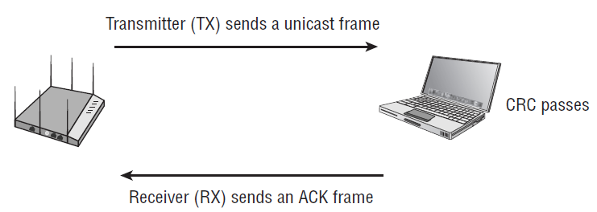
Figure 3: Unicast acknowledgment
8.3 Distributed Coordination Function
DCF是802.11规范中要求必须实现的功能，其他两个可选的功能是：PCF和 HCF。
DCF的主要组成部分为：
- Interframe space
- Duration/ID field
- Carrier sense
- Random backoff timer
8.3.1 Interframe Space (IFS)
Interframe space (IFS) is a period of time that exists between transmissions of wireless frames. There are six types of interframe spaces, which are listed here in order of shortest to longest:
- Reduced interframe space (RIFS), highest priority
- Short interframe space (SIFS), second highest priority
- PCF interframe space (PIFS), middle priority
- DCF interframe space (DIFS), lowest priority
- Arbitration interframe space (AIFS), used by QoS stations
- Extended interframe space (EIFS), used after receipt of corrupted frames
上述的帧间间隔实际的时间大小取决于网络的传输速度。
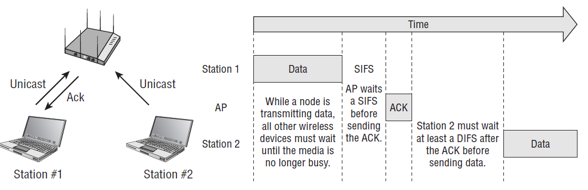
Figure 4: SIFS and DIFS
8.3.2 Duration/ID Field
该值的大小范围为：0 ~ 32,767。 该域的值表示RF媒体还需要保持多久忙 碌状态，其他的STA才能竞争使用RF媒介。
在大部分情况下，Duration/ID域的值是代表一个媒介占用时间的值， 用 于重置其他STA的网络分配向量（NAV）的值。 在极少情况下，如PS-Poll 帧中，Duration/ID的值作为使用传统电源管理的STA的一个ID值。
8.3.3 Carrier Sense
对于802.11 CSMA/CA设备，在进行数据传输之前，需要执行一下载波侦听， 用于检查当前媒介是否处于忙碌状态。主要有两种方法：
- 虚拟载波侦听。
虚拟载波侦听使用了一种计时器机制，称之为 network allocation vector(NAV) 。 NAV计时器会根据上一次帧传输的
Duration值， 预测接下来需要占用媒介的时间。当802.11设备没有进行数据传输时，它会进行监听，当它监听到从其他 STA传送过来的帧时，会查看帧的头部信息，看Duration/ID域是否包含
Duration值或一个ID值。 当它表示一个Duration值时，监听帧 的这个设备会将自己的NAV计时器设置为读到的值，然后启用计时器倒 数，直到计时器的值变为0。 在此之前，该STA都不能去竞争媒介的访 问权。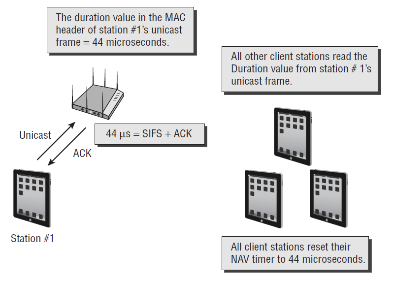
Figure 5: Virtual carrier sense
- 物理载波侦听。
Physical carrier sensing is performed constantly by all stations that are not transmitting or receiving. When a station performs a physical carrier sense, it is actually listening to the channel to see whether any other transmitters are taking up the channel.
虚拟载波侦听工作在Layer 2， 而物理载波侦听工作于Layer 1。 两种 载波方式可以同时运行。
Clear Channel Assessment(CCA):
- determine whether a frame transmission is inbound for a station to receive.
- determine whether the medium is busy before transmitting.
8.3.4 Random Backoff Timer
802.11 STA会在一个竞争窗口(CW)时间竞争媒介的使用权，该窗口期称为 backoff time 。 工作站选择一个不超过CW值的随机数， 然后再乘以时 隙时间slot，slot的值跟具体的物理层有关（DSSS、OFDM等）。
当启动backoff计时器后，只要在某个时隙时间内，媒介上没有数据传输， 计时器的值就会减掉一个时隙时间。如果物理载波或虚拟载波侦听机制检 测到媒介处于忙碌状态，那么该计时器就会暂停。 当媒介空闲时间大于 DIFS, AIFS或EIFS，backoff计时器会重新倒计时。 一次不成功的传输会 导致CW的大小成指数倍增长。
如下是退避机制的一个例子：
- An OFDM station selects a random number from a contention window of 0–15. For this example, the number chosen is 4.
- The station multiplies the random number of 4 by a slot time of 9μs.
- The random backoff timer has a value of 36μs (4 slots).
- For every slot time during which there is no medium activity, the backoff time is decremented by a slot time.
- The station decrements the backoff timer until the timer is zero.
- The station transmits if the medium is clear.
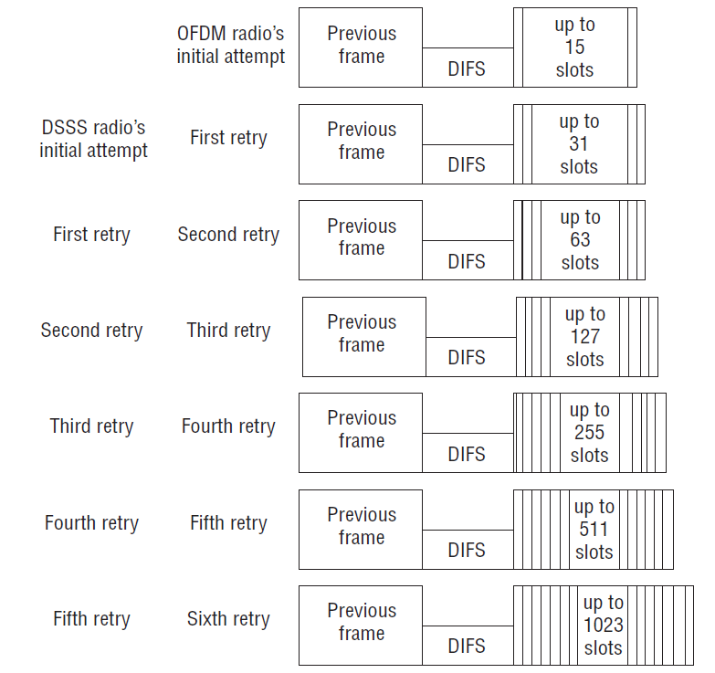
Figure 6: Contention window length
8.4 Point Coordination Function
这是一种Polling的方式。 AP充当点协调者的功能。 PCF只用于一个BSS内 部。 不能用于Ad Hoc网络（IBSS）， 因为没有AP存在。
AP和STA都要支持PCF功能，才能使用PCF机制。
目前，暂时没有实现上述机制的产品面世。
8.5 Hybrid Coordination Function
HCF结合了DCF和PCF的功能，并进行了加强，提供了两个访问信道的方法：
- Enhanced Distributed Channel Access (EDCA)
- HCF Controlled Channel Access (HCCA)
DCF和PCF允许802.11传输单个帧，之后，仍然需要继续竞争媒介去传输下一 帧。HCF允许一个802.11设备在媒介传输时，发送多个帧。 当支持HCF的设 备竞争媒介时，它会分配到一段时间，去发送帧，这段时间称为 transmit opportunity (TXOP) 。 在此期间，它可以传输多个帧。 在传输这些帧时， 使用SIFS。
8.6 Block Acknowledgment
A Block ACK improves channel efficiency by aggregating several acknowledgments into one single acknowledgment frame.
8.7 Wi-Fi Multimedia
The 802.11e amendment defined the layer 2 MAC methods needed to meet the QoS requirements for time-sensitive applications over IEEE 802.11 wireless LANs. The Wi-Fi Alliance introduced the Wi-Fi Multimedia (WMM) certification as a partial mirror of 802.11e amendment.
8.8 Airtime Fairness
在802.11媒介访问过程中，每个设备都需要竞争使用媒介传输数据。 对
于每个设备来说， 竞争机会均等。 当一个速率高的设备与一个速率低
的设备同时出现在一个网络中竞争使用媒介时，会降低高速率设备的网
络吞吐量。 为了解决这样的问题，提出了 Airtime Fairness ，主要
思想是时间分配均等，而不是竞争机会均等, 这样保证了高速率的设备
能够较快地完成数据传输，不会受到低速率设备的影响。
8.9 Review Questions
- DCF is also known as what? (Choose all that apply.)
A. Carrier Sense Multiple Access with Collision Detection (CSMA/CD)
B.
Carrier Sense Multiple Access with Collision Avoidance (CSMA/CA)C. Data Control Function
D.
Distributed Coordination Function答案解析
B and D. DCF is an abbreviation for Distributed Coordination Function. CSMA/CA is an 802.11 media access control method that is part of DCF. CSMA/CD is used by 802.3, not 802.11. There is no such thing as Data Control Function.
- 802.11 collision detection is handled using which technology?
A. Network allocation vector (NAV).
B. Clear channel assessment (CCA).
C. Duration/ID value.
D. Receiving an ACK from the destination station.
E.
Positive collision detection cannot be determined.答案解析
E. 802.11 technology does not use collision detection. If an ACK frame is not received by the original transmitting radio, the unicast frame is not acknowledged and will have to be retransmitted. This process does not specifically determine whether a collision occurs. Failure to receive an ACK frame from the receiver means that either a unicast frame was not received by the destination station or the ACK frame was not received, but it cannot positively determine the cause. It may be due to collision or to other reasons such as high noise level. All of the other options are used to help prevent collisions.
- ACK and CTS-to-self frames follow which interframe space?
A. EIFS
B. DIFS
C. PIFS
D.
SIFSE. LIFS
答案解析
D. ACK frames and CTS-to-self frames follow a SIFS. LIFS do not exist.
- The carrier sense portion of CSMA/CA is performed by using
which of the following methods? (Choose all that apply.)
A.
Virtual carrier senseB.
Physical carrier senseC. Channel sense window
D.
Clear channel assessment答案解析
A, B and D. The NAV timer maintains a prediction of future traffic on the medium based on duration value information seen in a previous frame transmission. Virtual carrier sense uses the NAV to determine medium availability. Physical carrier sense checks the RF medium for carrier availability. Clear channel assessment is another name for physical carrier sense. Channel sense window does not exist.
- After the station has performed the carrier sense and
determined that no other devices are transmitting for a period
of a DIFS interval, what is the next step for the station?
A. Wait the necessary number of slot times before transmitting if a random backoff value has already been selected.
B. Begin transmitting.
C.
Select a random backoff value.D. Begin the random backoff timer.
答案解析
C. The first step is to select a random backoff value. After the value is selected, it is multiplied by the slot time. The random backoff timer then begins counting down the number of slot times. When the number reaches 0, the station can begin transmitting.
- If PCF is implemented, it can function in which of the
following network environments? (Choose all that apply.)
A. Ad hoc mode
B.
BSSC. IBSS
D.
Infrastructure modeE. BSA
答案解析
B and D. PCF requires an access point. Ad hoc mode and an independent basic service set (IBSS) are the same and do not use an access point. A basic service set (BSS) is a WLAN topology, where 802.11 client stations communicate through an access point. Infrastructure mode is the default client station mode that allows clients to communicate via an access point. Basic service area (BSA) is the area of coverage of a basic service set.
- Which of the following terms are affiliated with the virtual
carrier sense mechanism? (Choose all that apply.)
A. Contention window
B.
Network allocation vectorC. Random backoff time
D.
Duration/ID field答案解析
B and D. The Duration/ID field is used to set the network allocation vector (NAV), which is a part of the virtual carrier sense process. The contention window and random backoff time are part of the backoff process that is performed after the carrier sense process.
- The goal of allocating equal time as opposed to equal
opportunity is known as what?
A. Access fairness
B. Opportunistic media access
C. CSMA/CA
D.
Airtime fairness答案解析
D. The goal of airtime fairness is to allocate equal time, as opposed to equal opportunity. Access fairness and opportunistic media access do not exist. CSMA/CA is the normal media access control mode for Wi-Fi devices.
- CSMA/CA and DCF define which mechanisms that attempt to ensure
that only one 802.11 radio can transmit on the half-duplex RF
medium? (Choose all that apply.)
A.
Random backoff timerB.
NAVC. CCMP
D.
CCAE.
Interframe spacing答案解析
A, B, D and E. DCF defines four checks and balances of CSMA/CA and DCF to ensure that only one 802.11 radio is transmitting on the half-duplex medium. Virtual carrier sense (NAV), physical carrier sense (CCA), interframe spacing, and the random backoff timer all work together. CCMP is the encryption protocol that was introduced with 802.11i.
- The Wi-Fi Alliance certification called Wi-Fi Multimedia (WMM)
is based on which media access method defined by the
802.11-2012 standard?
A. DCF
B. PCF
C.
EDCAD. HCCA
E. HSRP
答案解析
C. Currently, WMM is based on EDCA mechanisms defined by the 802.11e amendment, which is now part of the 802.11-2012 standard. The WMM certification provides for traffic prioritization via four access categories. EDCA is a subfunction of Hybrid Coordination Function (HCF). The other subfunction of HCF is HCCA.
- Hybrid Coordination Function (HCF) defines what allotted
period of time in which a station can transmit multiple
frames?
A. Block acknowledgment
B. Polling
C. Virtual carrier sense
D. Physical carrier sense
E.
TXOP答案解析
E. HCF defines the ability for an 802.11 radio to send multiple frames when transmitting on the RF medium. When an HCF-compliant radio contends for the medium, it receives an allotted amount of time to send frames called a transmit opportunity (TXOP). During this TXOP, an 802.11 radio may send multiple frames in what is called a frame burst.
- WMM is based on EDCA and provides for traffic prioritization
via which of the following access categories? (Choose all that
apply.)
A.
WMM Voice priorityB.
WMM Video priorityC. WMM Audio priority
D.
WMM Best Effort priorityE.
WMM Background priority答案解析
A, B, D and E. WMM Audio priority does not exist. The WMM certification provides for traffic prioritization via the four access categories of Voice, Video, Best Effort, and Background.
- The 802.11e amendment (now part of the 802.11-2012 standard)
defines which of the following medium access methods to
support QoS requirements? (Choose all that apply.)
A. Distributed Coordination Function (DCF)
B.
Enhanced Distributed Channel Access (EDCA)C.
Hybrid Coordination Function (HCF)D. Point Coordination Function (PCF)
E.
Hybrid Coordination Function Controlled Access (HCCA)答案解析
B, C and E. DCF and PCF were defined in the original 802.11 standard. The 802.11e quality of service amendment added a new coordination function to 802.11 medium contention, known as Hybrid Coordination Function (HCF). The 802.11e amendment and HCF have since been incorporated into the 802.11-2012 standard. HCF combines capabilities from both DCF and PCF and adds enhancements to them to create two channel access methods, HCF Controller Channel Access (HCCA) and Enhanced Distributed Channel Access (EDCA).
- What information that comes from the wired network is used to
assign traffic into access categories on a WLAN controller?
A. Duration/ID
B.
802.1D priority tagsC. Destination MAC address
D. Source MAC address
答案解析
B. The EDCA medium access method provides for the prioritization of traffic via the use of 802.1D priority tags. 802.1D tags provide a mechanism for implementing quality of service (QoS) at the MAC level. Different classes of service are available, represented in a 3-bit user priority field in an IEEE 802.1Q header added to an Ethernet frame. 802.1D priority tags from the Ethernet side are used to direct traffic to different access-category queues.
- What are the two reasons that 802.11 radios use physical
carrier sense? (Choose all that apply.)
A.
To synchronize incoming transmissionsB. To synchronize outgoing transmissions
C. To reset the NAV
D. To start the random backoff timer
E.
To assess the RF medium答案解析
A and E. The first purpose is to determine whether a frame transmission is inbound for a station to receive. If the medium is busy, the radio will attempt to synchronize with the transmission. The second purpose is to determine whether the medium is busy before transmitting. This is known as the clear channel assessment (CCA). The CCA involves listening for 802.11 RF transmissions at the Physical layer. The medium must be clear before a station can transmit.
- What CSMA/CA mechanism is used for medium contention? (Choose
all that apply.)
A.
NAVB.
CCAC.
Random backoff timerD.
Contention window答案解析
A, B, C and D. An 802.11 radio uses a random backoff algorithm to contend for the medium during a window of time known as the contention window. The contention window is essentially a final countdown timer and is also known as the random backoff timer. The NAV timer and the clear channel assessment (CCA) are also used in the medium contention process to determine the availability of the medium.
- Which field in the MAC header of an 802.11 frame resets the
NAV timer for all listening 802.11 stations?
A. NAV
B. Frame control
C.
Duration/IDD. Sequence number
E. Strictly ordered bit
答案解析
C. When the listening radio hears a frame transmission from another station, it looks at the header of the frame and determines whether the Duration/ID field contains a Duration value or an ID value. If the field contains a Duration value, the listening station will set its NAV timer to this value.
- The EDCA medium access method provides for the prioritization
of traffic via priority queues that are matched to eight
802.1D priority tags. What are the EDCA priority queues
called?
A. TXOP
B.
Access categoriesC. Priority levels
D. Priority bits
E. PT
答案解析
B. Enhanced Distributed Channel Access provides differentiated access for stations by using four access categories The EDCA medium access method provides for the prioritization of traffic via the four access categories that are aligned to eight 802.1D priority tags.
- ACKs are required for which of the following frames?
A.
UnicastB. Broadcast
C. Multicast
D. Anycast
答案解析
A. ACKS are used for delivery verification of unicast 802.11 frames. Broadcast and multicast frames do not require an acknowledgment. Anycast frames do not exist.
- What QoS mechanism can be used to reduce medium contention
overhead during a frame burst of low-latency traffic?
A. Delayed Block ACK
B. Contention period
C. Contention window
D. Contention-free period
E.
Immediate Block ACK答案解析
E. A Block ACK improves channel efficiency by aggregating several acknowledgments into one single acknowledgment frame. There are two types of Block ACK mechanisms: immediate and delayed. The immediate Block ACK is designed for use with lowlatency traffic, whereas the delayed Block ACK is more suitable for latency-tolerant traffic.
9 第九章 802.11 MAC 架构
9.1 Data-Link Layer
802.11数据链路层分为两个子层：
- Upper Layer： Logical Link Control (LLC)， 对所有的基于802的网 络都是相同的。
- Lower Layer： Media Access Control (MAC) ， 802.11规范主要定义 在MAC子层的操作。
9.1.1 MAC Service Data Unit
MSDU数据包含来自LLC以及Layer3-7层的数据，即MSDU负载包含IP包和一 些LLC数据。
802.11控制帧和管理帧不携带上层信息，只有数据帧才携带MSDU负载。
MSDU负载的最大值为：2,304字节。
9.1.2 MAC Protocol Data Unit
组成部分如下图所示 ，其中Frame Body可能被加密。
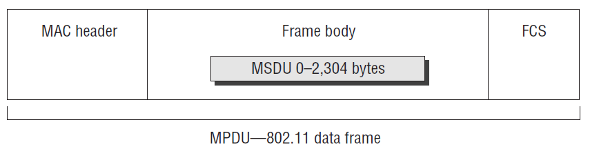
Figure 7: 802.11 MPDU
9.2 Physical Layer
物理层也分为两个子层：
- Upper Layer： Physical Layer Convergence Procedure (PLCP)
PLCP将MAC子层的帧打包成PLCP协议数据单元准备传输。
- Lower Layer： Physical Medium Dependent (PMD)
PMD子层进行调制并将数据按比特位进行传输。
9.2.1 PLCP Service Data Unit
PSDU是MPDU物理层的视角，它们仅仅是相同数据在不同OSI层上的展现。
9.2.2 PLCP Protocol Data Unit
当PLCP接收到PSDU，会进行传输前的准备， 并创建PPDU。 PLCP会为 PSDU增加一段前导码和PHY头部信息。前导码的作用主要是为了发送方与 接收方之间的同步。当PPDU创建后，PMD子层会将PPDU数据调制成比特位 传输出去。
数据链路层到物理层流通的过程：
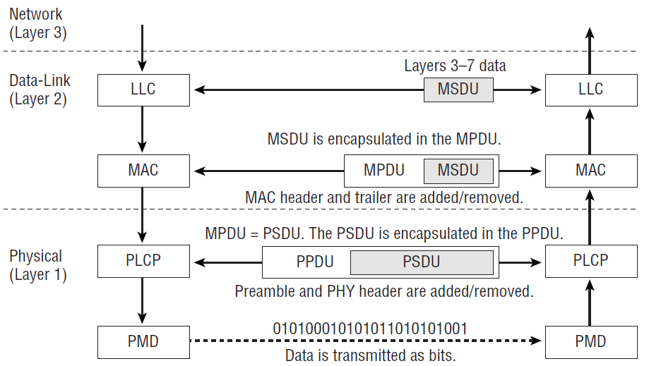
Figure 8: Data-Link and Physical layers
9.3 802.11 and 802.3 Interoperability
802.11标准定义Integration Service（IS）可以使MSDU在DS与非802.11 LAN之间通过Portal进行传输，其中Portal通常是一个AP或者WLAN控制器。 用更简单的话说，IS是一种帧格式的传输方式(涉及到例如802.11与802.3帧格 式之间的转换)。
IS的主要任务是：
- 去除802.11帧的头部和尾部。
- 将MSDU的负载放到802.3以太网帧的内部。
通常IS将帧在802.11和802.3媒介之间传输。当然，也可以将MSDU在 802.11与其他类型的媒介之间进行传输，如手机数据网。
9.4 Three 802.11 Frame Types
总共有三种类型的帧：管理帧，控制帧和数据帧。
9.4.1 Management Frames
管理帧又称为 Management MAC Protocol Data Unit (MMPDU) 。 管理 帧并不携带上层的信息，它只携带Layer2的IE。 802.11总共定义了14种管 理帧：
- association request
- association response
- association request
- Reassociation response
- Probe request
- Probe response
- Beacon
- Announcement traffic indication message (ATIM)
- Disassociation
- Authentication
- Deauthentication
- Action
- Action No ACK
- Timing advertisement
9.4.2 Control Frames
控制帧主要是辅助数据帧的传输。主要用于清空信道，获取信道以及提供 单播帧的确认。它们只包含头部信息。
下面是802.11定义的9种控制帧：
- Power Save Poll (PS-Poll)
- Request to send (RTS)
- Clear to send (CTS)
- Acknowledgment (ACK)
- Contention Free-End (CF-End) [PCF Only]
- CF-End + CF-ACK [PCF Only]
- Block ACK Request (BlockAckReq) [HCF Only]
- Block ACK (BlockAck) [HCF Only]
- Control wrapper
9.4.3 Data Frames
数据帧是实际从上层协议传送下来的数据， Layer3~7 MSDU负载通常被 加密。 802.11定义了15种数据帧：
- Data (simple data frame)
- Null function (no data)
- Data + CF-ACK [PCF only]
- Data + CF-Poll [PCF only]
- Data + CF-ACK + CF-Poll [PCF only]
- CF-ACK (no data) [PCF only]
- CF-Poll (no data) [PCF only]
- CF-ACK + CF-Poll (no data) [PCF only]
- QoS Data [HCF]
- QoS Null (no data) [HCF]
- QoS Data + CF-ACK [HCF]
- QoS Data + CF-Poll [HCF]
- Qos Data + CF-ACK + CF-Poll [HCF]
- QoS CF-Poll (no data) [HCF]
- QoS CF-ACK + CF-Poll (no data) [HCF]
9.5 Beacon Management Frame
Beacon管理帧是最重要的一种帧，它是无线网络的心跳。 一个BSS中的AP 会发送Beacon帧，STA则监听Beacon帧。 每个Beacon帧带有时间戳信息， 可用于STA与AP之间的同步， Beacon帧的主要信息如下图所示：
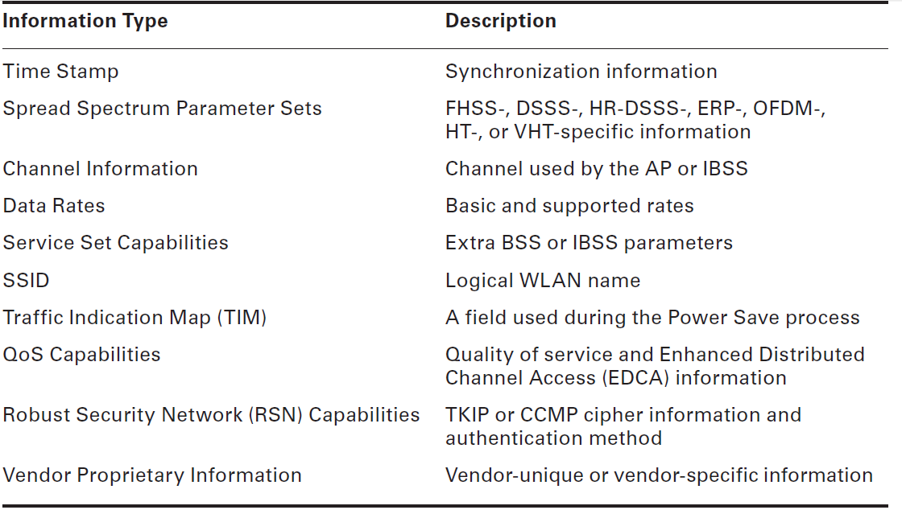
Figure 9: Beacon frame contents
9.6 Authentication
802.11下的Authentication相当于“插上网线”的步骤， 主要是认证双方 是否合法的802.11设备，仅此而已。
802.11定义了两种不同的认证方式：
- Open System Authentication (not used any more, only a legacy process now)
- Shared Key Authentication (used for backward compatibility)
- Open System Authentication
It is essentially an exchange of hellos between the client and the AP。
- Shared Key Authentication
Steps:
- The client station sends an authentication request to the AP.
- The AP sends a clear-text challenge to the client station in an authentication response.
- The client station then encrypts the clear-text challenge and sends it back to the AP in the body of another authentication request frame.
- The AP then decrypts the station’s response and compares it to the challenge text. If they match, the AP will respond by sending a fourth and final authentication frame the station, confirming the success. If they do not match, the AP will respond negatively. If the AP cannot decrypt the challenge, it will also respond negatively.
如果认证成功，则相同的Static WEP key也会被用于加密数据帧。
这种方式有缺陷， 更安全的方案是PSK和802.1X/EAP。
9.7 Association
当STA与AP进行完Auth交互后，下一步就是与AP关联。当一个STA与AP关联 后，它就成为了一个BSS中的成员。这样STA就可以通过AP将数据发送到DS 媒介。
STA通过发送Assocation Request来请求加入一个BSS， AP通过发送 Association Response给STA，拒绝或同意STA的加入。
9.7.1 Authentication and Association States
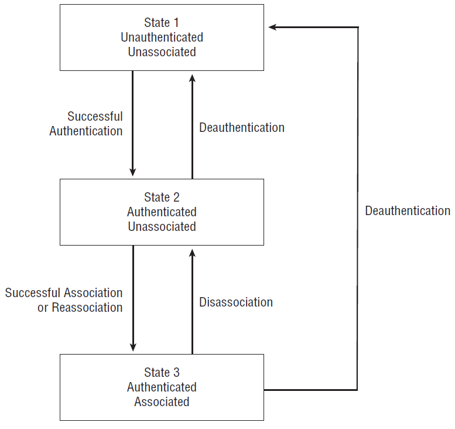
Figure 12: Authentication and association states
9.7.2 Basic and Supported Rates
AP可以设置 基本速率集 和 可支持的速率集 。 每个与AP关联的STA必
须表明它支持AP的 基本速率集 ，否则就会被AP拒绝关联。 而 可支
持的速率集 是AP建议的一些速率，STA可以不支持。
HR-DSSS (802.11b)支持的速率集为：1, 2, 5.5, and 11 Mbps
ERP (802.11g)支持的速率集为： 1, 2, 5.5, 6, 9, 12, 18, 24, 36, 48和54 Mbps。
9.7.3 Roaming
漫游：在保持上层连接不中断的情况下，STA从一个AP转到另一个AP所在 的BSS中。
漫游的决定是由STA来决定。一个STA可以同时与多个AP进行Auth交互，但 是只能与其中一个AP关联。
当漫游发生后，旧AP与新AP之间也需要通过DS媒介来交互一些信息，即新 AP要通知旧的AP, 与旧AP关联的STA目前准备与新的AP关联,请转发一些发往STA的数据给新的AP,并进行一些清理动 作， 将之前为之缓存的数据发给新的AP。
9.7.4 Reassociation
当一个STA发生漫游后，就会发送Reassociation Request给新的AP， Reassociation是指重新关联到无线网络的SSID，而不是指重新关联到某 个AP。
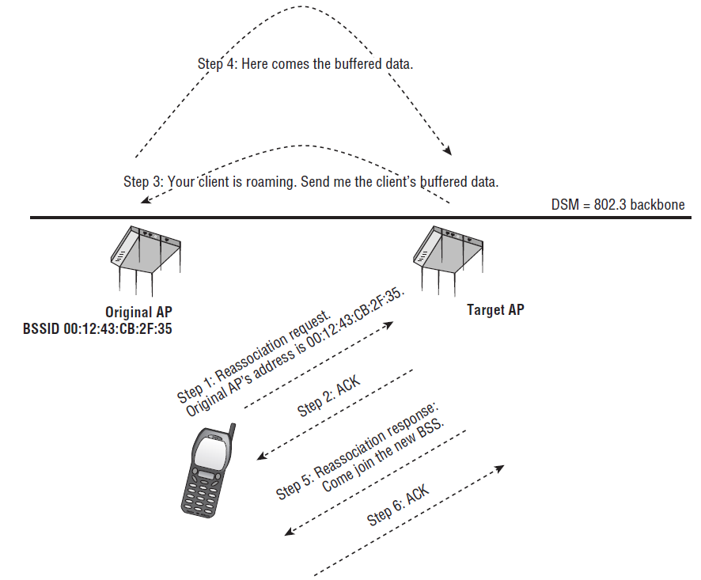
Figure 13: Reassociation process
9.7.5 Disassociation
Disassociation是一个通知，并不是请求，通信双方必须接收，不能拒绝。 AP和STA都可以发送。
9.7.6 Deauthentication
Deauthentication也是一个通知，通信双方必须接收，不能拒绝，AP和 STA都可以发送。
9.8 ACK Frame
ACK帧是802.11 CSMA/CA机制的一个核心组件，每个单播帧都必须通过ACK 帧来确认发送是否成功。ACK帧主要用于发送过程的确认动作。
9.9 Fragmentation
802.11支持帧分片， 分片是将一个大的帧分成较小的帧，这些较小的帧也 是一个个802.11帧，都包含MAC Header信息，可以单独传输，并需要ACK确 认。
传输过程使用SIFS。在网络环境比较好的情况下，数据帧分片会降低网络 吞吐量，因为增加了网络传输的开销。但是，在网络环境比较差的情况下， 数据传输错误率较高的情况下，数据帧分片则会改善网络吞吐量。
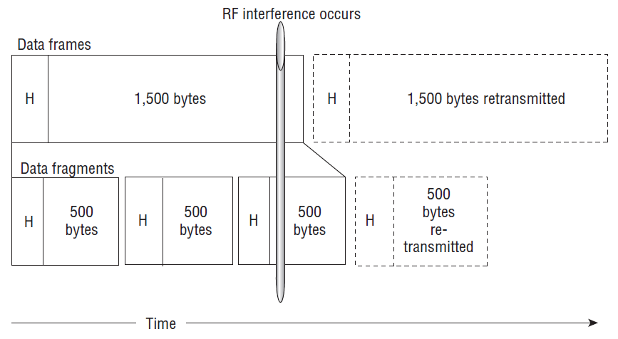
Figure 14: Frame fragmentation
9.10 Protection Mechanism
在同一个BSS中存在802.11b 802.11g 或者802.11n, 802.11ac设备时，支 持更高速率的设备会启用保护机制。
9.10.1 RTS/CTS
Request to send/clear to send (RTS/CTS) is a mechanism that performs a NAV distribution and helps prevent collisions from occurring.
RTS/CTS都会使监听它们的工作站更新NAV的值。
RTS/CTS主要用于两种情况：
- 隐藏结点。
- 当一个BSS中同时存在802.11b/g/n设备。
9.10.2 CTS-to-Self
CTS-to-Self is used strictly as a protection mechanism for mixed-mode environments. One of the benefits of using CTS-to-Self over RTS/CTS as a protection mechanism is that the throughput will be higher because fewer frames are being sent.
想比RTS/CTS，开销要小点。一般AP会使用CTS-to-Self作为保护机制。 STA也可以选择CTS-to-Self作为保护机制。
9.11 Data Frames
空数据帧一般用于通知AP当前STA处于省电状态。
9.12 Power Management
9.12.1 Active Mode
处于非省电状态，对于直接接电源的STA，应该配置为Active Mode。
9.12.2 Power Save Mode
当STA处于省电状态时，应该将Power Management位置为1.
9.12.3 Traffic Indication Map
当关联到某个AP的STA进入省电模式时，它会发送一个Null数据帧，这个 帧的Power Management位会被置为1， AP收到后，就知道该STA进入省电 状态，随后就会为它缓存发往该STA的帧。AP通过AID来跟踪该STA。当AP 传递下一个Beacon帧时，会在TIM域中显示该STA是否有缓存帧。TIM域保 存了所有在AP中缓存帧的STA列表，且会一直显示，直到缓存帧全部发送 完成。
Beacon帧传送的时间周期是预知的，这个时间称为 target beacon transmission time (TBTT) 。 STA知道什么时候Beacon会到来，但是一 般不必醒过来监听每个Beacon帧，可以选择隔几个Beacon帧听一次，这个 时间是由 Listen Interval 来指定的。
当STA听到AP发送过来的Beacon帧，它会Check TIM域对应的比特位是否 为1， 如果为1，则说明AP会为该STA缓存帧。 STA通过PS-Poll向AP请求 缓存的数据帧。 AP会将缓存帧不停发送给STA直到全部发送完毕。之后， STA可以继续进入PS状态。
9.12.4 Delivery Traffic Indication Message
除了单播数据，网络中也会存在多播数据和广播数据，由于多播和广播 数据是针对所有STA的，BSS需要提供一种方法以确保所有STA都能及时醒 来接收这些帧。 DTIM 用于确保当BSS中有设备发送广播或单播数据时， 所有具备Power Management功能的STA都能及时醒来接收。 DTIM是一种 特别类型的TIM，通过Beacon帧来传递。
DTIM Interval 决定了DTIM Beacon传输的时间周期。为3时，表示每3个
Beacon帧，会传递一次DTIM信息。 每个 TIM会有一个倒数计数器，来指
定下一个DTIM何时到达，当TIM的倒数计数器值为0时，表示当前的TIM是
DTIM。
只要BSS中有任何一个STA进入休眠状态，AP都会缓存广播或多播帧。 缓 存的广播或多播帧会使用AID 0保存。 AP会在每次发送DTIM帧后，发送 广播和多播数据（如果有的话）。
9.12.5 Announcement Traffic Indication Message
在一个IBSS网络，没有中心的AP。 一个STA进入PS模式时，需要通知其 他的STA自己已经进入PS Mode状态，其他STA会缓存发往该STA的帧。
所有的STA都必须周期性地醒来，相互通知是否有STA缓存了发住其他STA 的帧。这个期间，所有STA都必须是Active状态，相互交换的信息的时间 段称为 announcement traffic indication message (ATIM) window 。在 ATIM Window期间， 只能传输如下的控制帧和管理帧： Beacon, RTS, CTS, ACK和ATIM帧。 如 果一个STA1缓存了另一个STA2的帧，STA1会发送一个ATIM帧给STA2， 该 ATIM单播帧告诉STA2必须保持活跃状态直到下一个ATIM Window结束，这样它 才能接收缓存的数据。 任何缓存其他STA数据的STA或收到ATIM帧的STA 都必须保持活跃状态，其他的STA则可以进入PS模式。
一旦ATIM Window结束，所有未休眠的STA会经历CSMA/CA过程去交换未发 送的数据。 如果某个STA本次无法发送缓存的数据，需要在下一个ATIM Window再发送一个ATIM帧，然后在ATIM Window结束后，再次经历一个 CSMA/CA过程重新发送数据。
9.12.6 WMM Power Save and U-APSD
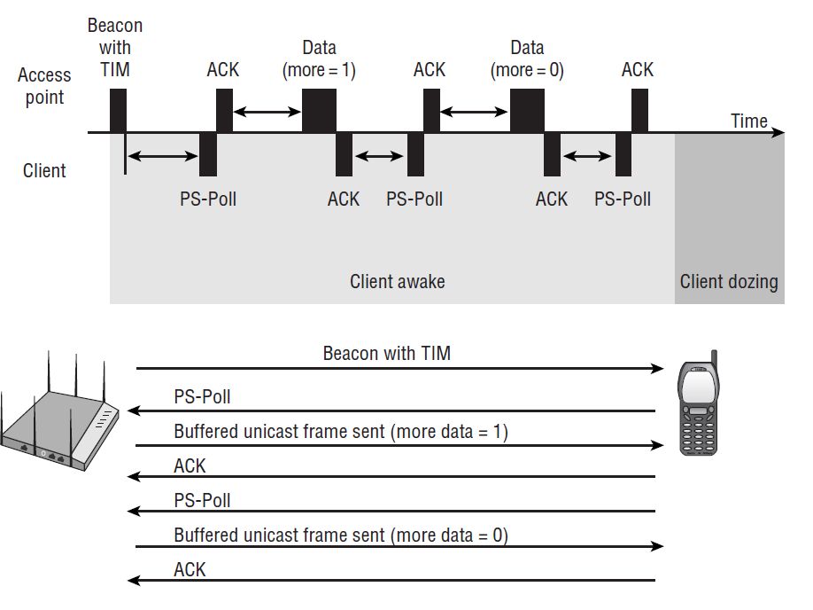
Figure 15: Legacy power management
WMM-PS uses a trigger mechanism to receive buffered unicast traffic based on WMM access categories.
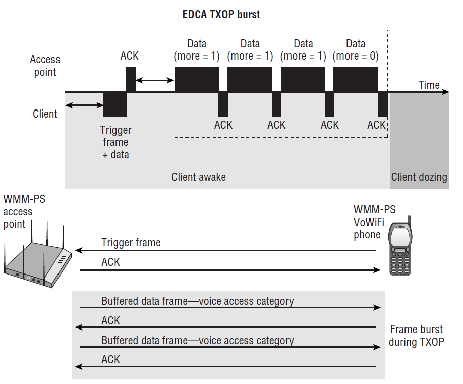
Figure 16: WMM-PS
The advantages of this enhanced power-management method include the following:
- Applications now control the power-save behavior by setting doze periods and sending trigger frames. VoWiFi phones will obviously send triggers to the AP frequently during voice calls, whereas a laptop radio using a data application will have a longer doze period.
- The trigger and delivery method eliminates the need for PS-Poll frames.
- The client can request to download buffered traffic and does not have to wait for a beacon frame.
- All the downlink application traffic is sent in a faster frame burst during the AP’s TXOP.
使用的前提：
- The client is Wi-Fi CERTIFIED for WMM-PS.
- The AP is Wi-Fi CERTIFIED for WMM-PS.
9.12.7 802.11n Power Management
802.11n定义了两个新的Power-Management方法：
- spatial multiplexing power save (SM power save).
The purpose of SM power save is to enable a MIMO 802.11n device to power down all but one of its radio chains.
- power save multi-poll (PSMP)
defined for use for HT (802.11n) radios。
9.13 Review Questions
- What is the difference between association frames and
reassociation frames?
A. Association frames are management frames, whereas reassociation frames are control frames.
B. Association frames are used exclusively for roaming.
C.
Reassociation frames contain the BSSID of the original AP.D. Only association frames are used to join a BSS.
答案解析
C. Both frames are used to join a BSS. Reassociation frames are used during the roaming process. The reassociation frame contains an additional field called Current AP Address. This address is the BSSID of the original AP that the client is leaving.
- Which of the following contains only LLC data and the IP packet
but does not include any 802.11 data?
A. MPDU
B. PPDU
C. PSDU
D.
MSDUE. MMPDU
答案解析
D. An IP packet consists of layer 3–7 information. The MAC Service Data Unit (MSDU) contains data from the LLC sublayer and/or any number of layers above the Data-Link layer. The MSDU is the payload found inside the body of 802.11 data frames
- Which of the following are protection mechanisms? (Choose all
that apply.)
A. NAV back-off
B.
RTS/CTSC. RTS-to-Self
D.
CTS-to-SelfE. WEP encryption
答案解析
B and D. RTS/CTS and CTS-to-Self provide 802.11g protection mechanisms, sometimes referred to as mixed-mode support. NAV back-off and RTS-to-Self do not exist. WEP encryption provides data security.
- The presence of what type of transmissions can trigger the
protection mechanism within an ERP basic service set? (Choose
all that apply.)
A.
Association of an HR-DSSS clientB. Association of an ERP-OFDM client
C.
HR-DSSS beacon frameD.
ERP beacon frame with the =NonERP_Presentbit set to 1E. Association of an FHSS client
答案解析
A, C and D. An ERP AP signals for the use of the protection mechanism in the ERP information element in the beacon frame. If a non-ERP STA associates to an ERP AP, the ERP AP will enable the
NonERP_Presentbit in its own beacons, enabling protection mechanisms in its BSS. In other words, an HR-DSSS (802.11b) client association will trigger protection. If an ERP AP hears a beacon with only an 802.11b or 802.11 supported rate set from another AP or an IBSS STA, it will enable theNonERP_Presentbit in its own beacons, enabling protection mechanisms in its BSS. - Which of the following information is included in a probe
response frame? (Choose all that apply.)
A.
Time stampB.
Supported data ratesC.
Service set capabilitiesD.
SSIDE. Traffic indication map
答案解析
A, B, C and D. The probe response contains the same information as the beacon frame, with the exception of the traffic indication map.
- Which of the following are true about beacon management frames?
(Choose all that apply.)
A. Beacons can be disabled to hide the network from intruders.
B.
Time-stamp information is used by the clients to synchronize their clocks.C. In a BSS, clients share the responsibility of transmitting the beacons.
D.
Beacons can contain vendor-proprietary information.答案解析
B and D. Beacons cannot be disabled. Clients use the time-stamp information from the beacon to synchronize with the other stations on the wireless network. Only APs send beacons in a BSS; client stations send beacons in an IBSS. Beacons can contain proprietary information.
- If WMM-PS is not supported, after a station sees its AID set to
1 in the TIM, what typically is the next frame that the station
transmits?
A. CTS
B.
PS-PollC. ATIM
D. ACK
答案解析
B. If a station finds its AID in the TIM, there is unicast data on the AP that the station needs to stay awake for and request to have downloaded. This request is performed by a PS-Poll frame.
- When a station sends an RTS, the Duration/ID field notifies the
other stations that they must set their NAV timers to which of
the following values?
A. 213 microseconds
B. The time necessary to transmit the DATA and ACK frames
C. The time necessary to transmit the CTS frame
D.
The time necessary to transmit the CTS, DATA, and ACK frames答案解析
D. When the RTS frame is sent, the value of the Duration/ID field is equal to the time necessary for the CTS, DATA, and ACK frames to be transmitted.
- How does a client station indicate that it is using Power Save
mode?
A. It transmits a frame to the AP with the Sleep field set to 1.
B.
It transmits a frame to the AP with the Power Management field set to 1.C. Using DTIM, the AP determines when the client station uses Power Save mode.
D. It doesn’t need to, because Power Save mode is the default.
答案解析
B. When the client station transmits a frame with the Power Management field set to 1, it is enabling Power Save mode. The DTIM does not enable Power Save mode; it only notifies clients to stay awake in preparation for a multicast or broadcast.
- What would cause an 802.11 station to retransmit a unicast
frame? (Choose all that apply.)
A.
The transmitted unicast frame was corrupted.B.
The ACK frame from the receiver was corrupted.C. The receiver’s buffer was full.
D. The transmitting station will never attempt to retransmit the data frame.
E. The transmitting station will send a retransmit notification.
答案解析
A and B. The receiving station may have received the data, but the returning ACK frame may have become corrupted and the original unicast frame will have to be retransmitted. If the unicast frame becomes corrupted for any reason, the receiving station will not send an ACK.
- If a station is in Power Save mode, how does it know that the
AP has buffered unicast frames waiting for it?
A. By examining the PS-Poll frame
B.
By examining the TIM fieldC. When it receives an ATIM
D. When the Power Management bit is set to 1
E. From the DTIM interval
答案解析
B. The PS-Poll frame is used by the station to request cached data. The ATIM is used to notify stations in an IBSS of cached data. The Power Management bit is used by the station to notify the AP that the station is going into Power Save mode. The DTIM is used to indicate to client stations how often to wake up to receive buffered broadcast and multicast frames. The traffic indication map (TIM) is a field in the beacon frame used by the AP to indicate that there are buffered unicast frames for clients in Power Save mode.
- When is an ERP (802.11g) AP required by the IEEE 802.11-2012
standard to respond to probe request frames from nearby
HR-DSSS (802.11b) stations? (Choose all that apply.)
A.
When the probe request frames contain a null SSID valueB. When the AP supports only ERP-OFDM data rates
C. When the AP supports only HR/DSSS data rates
D. When the Power Management bit is set to 1
E.
When the probe request frames contain the correct SSID value答案解析
A and E. All 802.11 APs are required to respond to directed probe request frames that contain the correct SSID value. The AP must also respond to null probe request frames that contain a blank SSID value. Some vendors offer the capability to respond to null probe requests with a null probe response.
- Which of the following are true about scanning? (Choose all
that apply.)
A.
There are two types of scanning: passive and active.B. Stations must transmit probe requests in order to learn about local APs.
C. The 802.11 standard allows APs to ignore probe requests for security reasons.
D.
It is common for stations to continue to send probe requests after being associated to an AP.答案解析
A and D. There are two types of scanning: passive, which occurs when a station listens to the beacons to discover an AP, and active, which occurs when a station sends probe requests looking for APs. Stations send probe requests only if they are performing an active scan. After a station is associated, it is common for the station to continue to learn about nearby APs. All client stations maintain a “known AP” list that is constantly updated by active scanning.
- Given that an 802.11 MAC header can have as many as four MAC
addresses, which type of addresses are not found in an 802.3
MAC header? (Choose all that apply.)
A. SA
B.
BSSIDC. DA
D.
RAE.
TA答案解析
B, D and E. Although there are similarities, the addressing used by 802.11 MAC frames is much more complex than Ethernet frames. 802.3 frames have only a source address (SA) and destination address (DA) in the layer 2 header. The four MAC addresses used by an 802.11 frame can be used as five different types of addresses: receiver address (RA), transmitter address (TA), basic service set identifier (BSSID), destination address (DA), and source address (SA).
- When a client station is first powered on, what is the order
of frames generated by the client station and AP?
A. Probe request/probe response, association request/response, authentication request/response
B.
Probe request/probe response, authentication request/response, association request/responseC. Association request/response, authentication request/response, probe request/probe response
D. Authentication request/response, association request/response, probe request/probe response
答案解析
B. When the client first attempts to connect to an AP, it will first send a probe request and listen for a probe response. After it receives a probe response, it will attempt to authenticate to the AP and then associate to the network.
- WLAN users have recently complained about gaps in audio and
problems with the pushto-talk capabilities with the ACME
Company’s VoWiFi phones. What could be the cause of this
problem?
A. Misconfigured TIM setting
B.
Misconfigured DTIM settingC. Misconfigured ATIM setting
D. Misconfigured BTIM setting
答案解析
B. The delivery traffic indication message (DTIM) is used to ensure that all stations using power management are awake when multicast or broadcast traffic is sent. The DTIM interval is important for any application that uses multicasting. For example, many VoWiFi vendors support push-to-talk capabilities that send VoIP traffic to a multicast address. A misconfigured DTIM interval would cause performance issues during a push-to-talk multicast.
- The WLAN help desk gets a call that all of the sudden, all of
the HR-DSSS (802.11b) VoWiFi phones cannot connect to any of
the ERP (802.11g) lightweight APs that are managed by a
multiple-channel architecture WLAN controller. All the laptops
with ERP (802.11g) radios can still connect. What are the
possible causes of this problem? (Choose all that apply.)
A.
The WLAN admin disabled the 1, 2, 5.5, and 11 Mbps data rates on the controller.B. The WLAN admin disabled the 6 and 9 Mbps data rates on the controller.
C.
The WLAN admin enabled the 6 and 9 Mbps data rates on the controller as basic rates.D. The WLAN admin configured all the APs on channel 6.
答案解析
A and C. An ERP (802.11g) AP is backward compatible with HR-DSSS and supports the data rates of 1, 2, 5.5, and 11 Mbps as well as the ERP-OFDM data rates of 6, 9, 12, 18, 24, 36, 48, and 54 Mbps. If a WLAN admin disabled the 1, 2, 5.5, and 11 Mbps data rates, backward compatibility will effectively be disabled and the HR-DSSS clients will not be able to connect. The 802.11-2012 standard defines the use of basic rates, which are required rates. If a client station does not support any of the basic rates used by an AP, the client station will be denied association to the BSS. If a WLAN admin configured the ERP-OFDM data rates of 6 and 9 Mbps as basic rates, the HR-DSSS clients would be denied association because they do not support those rates.
- In a multiple-channel architecture, roaming is controlled by
the client station and occurs based on a set of proprietary
rules determined by the manufacturer of the wireless
radio. Which of the following parameters are often used when
making the decision to roam? (Choose all that apply.)
A.
Received signal levelB. Distance
C.
SNRD. WMM access categories
答案解析
A and C. The amplitude of the received signals from the APs is usually the main variable when clients make a roaming decision. Client roaming mechanisms are often based on RSSI values, including received signal levels and signal-to-noise ratio (SNR). Distance and WMM access categories have nothing to do with the client’s decision to roam to a new AP.
- What are some of the advantages of using U-APSD and WMM-PS
power management over legacy power-management methods? (Choose
all that apply.)
A.
Applications control doze time and trigger frames.B. U-APSD APs transmit all voice and video data immediately.
C.
The client does not have to wait for a beacon to request data.D.
Downlink traffic is sent in a frame burst.E.
Data frames are used as trigger frames. PS-Poll frames are not used.答案解析
A, C, D and E. Applications now control the power-save management behavior by setting doze periods and sending trigger frames. Clients using time-sensitive applications will send triggers to the AP frequently, while clients using more latency-tolerant applications will have a longer doze period. The trigger and delivery method eliminates the need for PS-Poll frames. The client can request to download buffered traffic and does not have to wait for a beacon frame. All the downlink application traffic is sent in a faster frame burst during the AP’s TXOP.
- WMM-PS is based on which 802.11-2012 power-management method?
A. S-APSD
B.
U-APSDC. PSMP
D. SM Power Save
E. PS-Poll
答案解析
B. The IEEE 802.11-2007 standard defines an enhanced power-management method called automatic power save delivery (APSD). The two APSD methods that are defined are scheduled automatic power save delivery (S-APSD) and unscheduled automatic power save delivery (U-APSD). The Wi-Fi Alliance’s WMM Power Save (WMM-PS) certification is based on U-APSD.
10 第十章 WLAN 架构
10.1 Wireless LAN client devices
NIC + Driver + utilities
10.1.1 802.11 Radio form factors
802.11 无线芯片可以用于客户端NIC和AP设备中，这些网卡芯片以多种形 式与主芯片连接：外置的PCMCIA和USB，或内置集成到主芯片中。
10.1.2 802.11 Radio chipsets
A group of integrated circuits designed to work together is often marketed as a chipset.
10.1.3 Client utilities
提供用户配置网卡的软件工具。
10.1.4 Management, control and data planes
Telecommunication networks are often defined as three logical planes of operation:
- Management Plane The management plane is defined by administrative network management, administration, and monitoring.
- Control Plane The control plane consists of control or signaling information and is often defined as network intelligence or protocols.
- Data Plane The data plane, also known as the user plane, is the location in a network where user traffic is actually forwarded.
10.2 WLAN architecture
In most cases, the main purpose of 802.11 technologies is to provide a wireless portal into a wired infrastructure network.
10.2.1 Autonomous WLAN architecture
autonomous AP are often referred to as fat APs: a standalone WLAN portal device where all three planes of operation existed and operated on the edge of the network architecture. An autonomous access point typically encompasses both the 802.11 protocol stack and the 802.3 protocol stack.
10.2.2 Centralized network management systems
In the centralized WLAN architecture, autonomous APs have been replaced with controller-based access points, also known as lightweight APs or thin APs.
10.2.3 Cloud networking
- Cloud-Enabled Networking the management plane resides in the cloud, but data plane mechanisms such as switching and routing remain on the local network and usually in hardware.
- Cloud-Based Networking the data plane is also moved to the cloud with the intent of eliminating hardware other than that used to access the Internet at the local network.
10.2.4 Centralized WLAN architecture
This model uses a central WLAN controller that resides in the core of the network.
all planes were moved out of access points and into a WLAN controller:
Management Plane
Access points are configured and managed from the WLAN controller using a subset of NMS capabilities.
Control Plane
Dynamic RF, load balancing, roaming handoffs, and other mechanisms exist in the WLAN controller.
Data Plane
The WLAN controller exists as a data distribution point for user traffi c. Access points tunnel all user traffi c to a central controller.
10.2.5 Distributed WLAN architecture
10.2.6 Unified WLAN architecture
10.2.7 Hybrid architecture
10.3 Specialty WLAN infrastructure
10.3.1 Wireless workgroup bridge
10.3.2 Wireless LAN bridges
10.3.3 Enterprise WLAN router
10.3.4 Wireless LAN mesh access points
10.3.5 WLAN array
10.3.6 Virtual AP system
10.3.7 Real-time location systems
10.3.8 VoWiFi
11 第十二章 WLAN 问题处理与设计
A bottoms-up approach to analyzing the OSI reference model layers also applies to wireless networking. A wireless networking administrator should always try to first determine whether problems exist at layer 1 and layer 2.
许多无线网络问题发生在Layer 1，即物理层，如无电力供应的AP或是CLIENT Radio驱动问题，通常会引起连接性问题或是性能问题。频谱分析仪通常是诊 断Layer 1 RF干涉问题的有用工具。
排除Layer 1是问题产生的根源后，WLAN管理员需要尝试确认问题是否发生在 数据链路层。Authentication和Association问题通常发生，是由于AP或其他 相关软件没有配置合适的安全设定。
11.1 Layer 2重传
在WLAN网络中， Layer 2重传的情况往往会引起性能方面的问题。过多的 Layer 2重传会从如下两个方面影响WLAN：
- 重传会增加开销从而降低吞吐量。
- 重传过多会导致音视频不同步以及跳变产生，导致VoIP等实时性的应用体 验变差。
一般的应用能够忍受10%的重传率，但是对于VoWiFi网络，重传率不能超过5%。 导致Layer 2重传的原因是多方面的：
- Multipath
- RF干涉
- 低SNR。
- 隐藏结点
- near/far问题
- 功率匹配
- 相邻信道干涉
11.2 RF干涉
有多种不同类型的干涉会极大地影响802.11无线网络的性能。干涉的设备会 阻止一个802.11 radio传输数据，导致DOS。 如果另一个RF源以很强的功率 传输数据，则802.11 radio会在CCA(clear channel assessment)阶段侦测到 RF能量，并延迟传输。另一种干涉会导致传输的数据帧直接被破坏。过多的 重传会极大地降低吞吐量。有如下几种干扰：
11.2.1 窄波干涉
窄波通常只占用小部分频宽，不会对整个频段造成DoS，比如2.4GHz ISM频段。窄波信号通常振幅很高，会完全中断频率空间范围内的数据传输。 窄波信号会中断一个或多个802.11信道。 解决之道就是用频谱分析仪定位 干涉的信道，并采用措施避开这些被干涉的信道。
11.2.2 宽波干涉
如果传输的信号会中断整个频段的通信，则认为是宽波干涉。宽波干涉会导 致整个2.4GHz的ISM频段出现DoS。唯一的解决办法是通过频谱分析仪定位 干涉的设备，并将其移开。
11.2.3 全波段干涉
这种情况一般发生在FHSS（Frequency Hopping Spread Spectrum）通信中。 FHSS设备不停地在整个频段跳跃，会影响在这个频段范围内传输数据的所有设 备。 蓝牙设备是一种FHSS类型的设备， 会在整个2.4GHz ISM范围内进行跳 变，会影响附近工作在2.4GHz的设备。解决的办法也只能是通过频谱分析仪 定位干涉的设备，并将其移开。
11.2.4 Adjacent Channel Interference
the 802.11-2012 standard requires 25 MHz of separation between the center frequencies of 802.11b/g channels in order for them to be considered nonoverlapping.
When designing a wireless LAN, you need overlapping coverage cells in order to provide for roaming. However, the overlapping cells should not have overlapping frequencies, Overlapping coverage cells with overlapping frequencies cause what is known as adjacent channel interference.
11.2.5 Low SNR
背景干扰信号强度接近接收的信号，或者接收到的信号强度太低。SNR不是 一个比率，而是接收到的信号与背景干扰信号之间的分贝差值（decibels）。 如果一个802.11设备接收到一个-70dBm的信号，此时背景干扰信号强度为-95dBm， 则SNR为25 dB。
通常SNR在25以上，则认为信号质量好，而低于10则认为信号质量很差。
11.2.6 功率设置不匹配
AP的功率与STA的功率设置不匹配，导致出现这种情况：AP发出的数据，STA 能收到，但是STA回的ACK，AP却收不到。
11.2.7 Near/Far
离AP较近且功率较大的设备会影响离AP较远，且功能偏低的设备与AP之间 的数据通信。
11.2.8 隐藏结点问题
连接到同一个AP中的两个设备不能相互侦测到对方的存在，导致数据传输过 程中产生冲突，也会导致Layer 2重传。
通常的一个解决方案是：AP禁掉2.4GHz下的1， 2M数据传输率。 原因有二：
- 容量
- 1，2M数据传输率覆盖范围大，容易造成隐藏结点的问题。
解决隐藏结点有如下方法：
- 使用RTS/CTS来侦测是否存在隐藏结点的问题，也可作为解决隐藏结点问 题的临时方案。
- 所有STA的功率增加， 这个方法可行，但不推荐，会增加co-channel干 扰。
- 移除障碍
- 移动隐藏结点，使他们更接近。
- 增加另一个AP。
11.3 802.11覆盖范围的考量
11.3.1 动态速率调整
低速率的设备，会影响处于同一个BSS中的高速率设备的吞吐量。
11.3.2 Roaming
Rooming问题的产生通常是由于差劲的网络设计或者是WiFi设备驱动的问题。 Rooming的决定一般跟WiFi芯片厂商有关，每个厂家的行为都可能是特有的， 但一般会根据如下一些条件决定是否进行Roaming：
- RSSI
- Noise Level
- bit-error rate
- 重传率
11.3.3 Co-channel Interference
The unnecessary medium contention overhead that occurs because all the APs are on the same channel is called co-channel interference (CCI).
11.4 Performance
如下一些因素会影响一个WLAN的覆盖范围：
- Transmission Power Rates 传输功率
- Antenna Gain 天线增益
- Antenna Type 天线类型
- 波长 高频率的信号，波长短，衰减快。
- Free Space Path Loss 随着距离的增加，信号强度会成培衰减。
- Physical Environment Wifi设备所处的物理环境，如墙壁等。
如下一些因素会影响一个WLAN的吞吐量：
- Carrier Sense Multiple Access with Collision Avoidance (CSMA/CA) 不同的帧间间隔，物理载波侦测，虚拟载波侦测等等会产生开销并消耗 带宽。
- Encryption 各种加密算法也会产生开销。
- Application Use 不同的应用对带宽的消耗有区别。
- Number of Clients 同时在线的客户端数量也会影响网络整体的吞吐量。
- Layer 2 Retransmissions 数据重传也是影响吞吐量的一个重要因素。
11.5 Review Questions
- What are some recommended best practices when deploying a
high-density WLAN? (Choose all that apply.)
A. Deploying unidirectional MIMO patch antennas
B. Band steering of all clients to 5 GHz
C. Load balancing
D. Low AP transmit power
E. Layer 3 roaming
答案解析
A, C and D. Unidirectional MIMO patch antennas can be mounted in the ceiling to provide sectorized coverage in a high-density WLAN. Load balancing clients between multiple APs will help with capacity. Lowering the AP transmit power effectively reduces the cell size and minimizes co-channel interference. Band steering can be useful if used to balance the clients between both the 2.4 and 5 GHz radios. Steering all the clients only to 5 GHz is not necessarily ideal in a high-density environment. Layer 3 roaming is not part of high client capacity design.
- If the access points transmit on the same frequency channel in
an MCA(Multi-Channel Architecture) architecture, what type of interference is caused by
overlapping coverage cells?
A. Intersymbol interference
B. Adjacent channel interference
C. All-band interference
D. Narrowband interference
E. Co-channel interference
答案解析
E. In an MCA architecture, if all the access points are mistakenly configured on the same channel, unnecessary medium contention overhead is the result. If an AP is transmitting, all nearby access points and clients on the same channel will defer transmissions. The result is that throughput is adversely affected. Nearby APs and clients have to wait much longer to transmit because they have to take their turn. The unnecessary medium contention overhead that occurs because all the APs are on the same channel is called co-channel interference (CCI). In reality, the 802.11 radios are operating exactly as defined by the CSMA/CA mechanisms, and this behavior should really be called co-channel cooperation.
- What variables might affect range in an 802.11 WLAN? (Choose
all that apply.)
A. Transmission power
B. CSMA/CA
C. Encryption
D. Antenna gain
E. Physical environment
答案解析
A, D and E. The original transmission amplitude will have an impact on the range of an RF cell. Antennas amplify signal strength and can increase range. Walls and other obstacles will attenuate an RF signal and affect range. CSMA/CA and encryption do not affect range but do affect throughput.
- What can be done to fix the hidden node problem? (Choose all
that apply.)
A. Increase the power on the access point.
B. Move the hidden node station.
C. Increase power on all client stations.
D. Remove the obstacle.
E. Decrease power on the hidden node station.
答案解析
B, C and D. The hidden node problem arises when client stations cannot hear the RF transmissions of another client station. Increasing the transmission power of client stations will increase the transmission range of each station, resulting in increased likelihood of all the stations hearing each other. Increasing client power is not a recommended fix because best practice dictates that client stations use the same transmit power used by all other radios in the BSS, including the AP. Moving the hidden node station within transmission range of the other stations also results in stations hearing each other. Removing an obstacle that prevents stations from hearing each other also fixes the problem. The best fix to the hidden node problem is to add another access point in the area that the hidden node resides.
- Layer 2 retransmissions occur when frames become
corrupted. What are some of the causes of layer 2 retries?
(Choose all that apply.)
A. High SNR
B. Low SNR
C. Co-channel interference
D. RF interference
E. Adjacent channel interference
答案解析
B, D and E. If any portion of a unicast frame is corrupted, the cyclic redundancy check (CRC) will fail and the receiving 802.11 radio will not return an ACK frame to the transmitting 802.11 radio. If an ACK frame is not received by the original transmitting radio, the unicast frame is not acknowledged and will have to be retransmitted. RF interference, low SNR, hidden nodes, mismatched power settings, near/far problems, and adjacent channel interference may all cause layer 2 retransmissions. Co-channel interference does not cause retries but does add unnecessary medium contention overhead.
- What scenarios might result in a hidden node problem? (Choose
all that apply.)
A. Distributed antenna system
B. Coverage cells that are too large
C. Coverage cells that are too small
D. Physical obstruction
E. Co-channel interference
答案解析
A, B and D. The hidden node problem arises when client stations cannot hear the RF transmissions of another client station. Distributed antenna systems with multiple antenna elements are notorious for causing the hidden node problem. When coverage cells are too large as a result of the access point’s radio transmitting at too much power, client stations at opposite ends of an RF coverage cell often cannot hear each other. Obstructions such as a newly constructed wall can also result in stations not hearing each other.
- What are some of the negative effects of layer 2
retransmissions? (Choose all that apply.)
A. Decreased range
B. Excessive MAC sublayer overhead
C. Decreased latency
D. Increased latency
E. Jitter
答案解析
B, D and E. Excessive layer 2 retransmissions adversely affect the WLAN in two ways. First, layer 2 retransmissions increase MAC overhead and therefore decrease throughput. Second, if application data has to be retransmitted at layer 2, the timely delivery of application traffic becomes delayed or inconsistent. Applications such as VoIP depend on the timely and consistent delivery of the IP packet. Excessive layer 2 retransmissions usually result in increased latency and jitter problems for time-sensitive applications such as voice and video.
- Several users are complaining that their VoWiFi phones keep
losing connectivity. The WLAN administrator notices that the
frame transmissions of the VoWiFi phones are corrupted when
listened to with a protocol analyzer near the access point but
are not corrupted when listened to with the protocol analyzer
near the VoWiFi phone. What is the most likely cause of this
problem?
A. RF interference
B. Multipath
C. Hidden node
D. Adjacent channel interference
E. Mismatched power settings
答案解析
E. An often overlooked cause of layer 2 retransmissions is mismatched transmit power settings between an access point and a client radio. Communications can break down if a client station’s transmit power level is less than the transmit power level of the access point. As a client moves to the outer edges of the coverage cell, the client can “hear” the AP; however, the AP cannot “hear” the client. If the client station’s frames are corrupted near the AP but not near the client, the most likely cause is mismatched power settings.
- A single user is complaining that her VoWiFi phone has choppy
audio. The WLAN administrator notices that the user’s MAC
address has a retry rate of 25 percent when observed with a
protocol analyzer. However, all the other users have a retry
rate of about 5 percent when also observed with the protocol
analyzer. What is the most likely cause of this problem?
A. Near/far
B. Multipath
C. Co-channel interference
D. Hidden node
E. Low SNR
答案解析
D. If an end user complains of a degradation of throughput, one possible cause is a hidden node. A protocol analyzer is a useful tool in determining hidden node issues. If the protocol analyzer indicates a higher retransmission rate for the MAC address of one station when compared to the other client stations, chances are a hidden node has been found. Some protocol analyzers even have hidden node alarms based on retransmission thresholds.
- What type of interference is caused by overlapping coverage
cells with overlapping frequencies?
A. Intersymbol interference
B. Adjacent channel interference
C. All-band interference
D. Narrowband interference
E. Co-channel interference
答案解析
B. Overlapping coverage cells with overlapping frequencies cause adjacent channel interference, which causes a severe degradation in latency, jitter, and throughput. If overlapping coverage cells also have frequency overlap, frames will become corrupt, retransmissions will increase, and performance will suffer significantly.
- Based on RSSI metrics, concentric zones of variable data rate
coverage exist around an access point due to the upshifting
and downshifting of client stations between data rates. What
is the correct name of this process, according to the IEEE
802.11-2012 standard?
A. Dynamic rate shifting
B. Dynamic rate switching
C. Automatic rate selection
D. Adaptive rate selection
E. All of the above
答案解析
B. As client station radios move away from an access point, they will shift down to lower bandwidth capabilities by using a process known as dynamic rate switching (DRS). The objective of DRS is upshifting and downshifting for rate optimization and improved performance. Although dynamic rate switching is the proper name for this process, all these terms refer to the method of speed fallback that a wireless LAN client uses as distance increases from the access point.
- Which of these weather conditions is a concern when deploying
a long-distance point-topoint bridge link?
A. Wind
B. Rain
C. Fog
D. Changes in air temperature
E. All of the above
答案解析
E. Highly directional antennas are susceptible to what is known as antenna wind loading, which is antenna movement or shifting caused by wind. Grid antennas may be needed to alleviate the problem. Rain and fog can attenuate an RF signal; therefore, a system operating margin (also known as fade margin) of 20 dB is necessary. A change in air temperature is also known as air stratification, which causes refraction. K-factor calculations may also be necessary to compensate for refraction.
- What variables might affect range in an 802.11 WLAN?
A. Wavelength
B. Free space path loss
C. Brick walls
D. Trees
E. All of the above
答案解析
E. Higher frequency signals have a smaller wavelength property and will attenuate faster than a lower frequency signal with a larger wavelength. Higher frequency signals therefore will have shorter range. In any RF environment, free space path loss (FSPL) attenuates the signal as a function of distance. Loss in signal strength affects range. Brick walls exist in an indoor physical environment, while trees exist in an outdoor physical environment. Both will attenuate an RF signal, thereby affecting range.
- Given: Wi-Fi clients can roam seamlessly at layer 2 if all the
APs are configured with the same SSID and same security
settings. However, if clients cross layer 3 boundaries, a
layer 3 roaming solution will be needed. Which device
functions as the home agent if a Mobile IP solution has been
implemented in an enterprise WLAN environment where no WLAN
controller is deployed?
A. Wireless network management server (WNMS)
B. Access layer switch
C. Layer 3 switch
D. Access point on the original subnet
E. Access point on the new subnet
答案解析
D. A mobile client receives an IP address also known as a home address on the original subnet. The mobile client must register its home address with a device called a home agent (HA). The original access point on the client’s home network serves as the home agent. The home agent is a single point of contact for a client when it roams across layer 3 boundaries. Any traffic that is sent to the client’s home address is intercepted by the home agent access point and sent through a Mobile IP tunnel to the foreign agent AP on the new subnet. The client is therefore able to retain its original IP address when roaming across layer 3 boundaries.
- Which of the following can cause roaming problems? (Choose all
that apply.)
A. Too little cell coverage overlap
B. Too much cell coverage overlap
C. Free space path loss
D. CSMA/CA
E. Hidden node
答案解析
A and B. Although overlap cell coverage is a fallacy, cell overlap is often used to refer to the duplicate cell coverage heard from a client perspective. Roaming problems will occur if there is not enough overlap in cell coverage. Too little overlap will effectively create a roaming dead zone, and connectivity may even temporarily be lost. If two RF cells have too much overlap, a station may stay associated with its original AP and not connect to a second access point even though the station is directly underneath the second access point.
- What are some problems that can occur when an access point is
transmitting at full power? (Choose all that apply.)
A. Hidden node
B. Co-channel interference
C. Mismatched power between the AP and the clients
D. Intersymbol interference
答案解析
A, B and C. A mistake often made when deploying access points is to have the APs transmitting at full power. Effectively, this extends the range of the access point but causes many problems that have been discussed throughout this chapter. Oversized coverage usually will not meet your capacity needs. Oversized coverage cells can cause hidden node problems. Access points at full power may not be able to hear the transmissions of client stations with lower transmit power. Access points at full power will most likely also increase the odds of co-channel interference due to bleed-over transmissions. If the access point’s coverage and range is a concern, the best method of extending range is to increase the AP’s antenna gain instead of increasing transmit power.
- Why would a WLAN network administrator consider disabling the
two lowest rates on an 802.11b/g/n access point? (Choose all
that apply.)
A. Medium contention
B. Adjacent channel interference
C. Hidden node
D. Intersymbol interference
E. All of the above
答案解析
A and C. Medium contention, also known as CSMA/CA, requires that all radios access the medium in a pseudorandom fashion. Radios transmitting at slower data rates will occupy the medium much longer, while faster radios have to wait. Data rates of 1 and 2 Mbps can create very large coverage cells, which may prevent a hidden node station at one edge of the cell from being heard by other client stations at the opposite side of the coverage cell.
- Which type of interference is caused by destructive multipath?
A. Intersymbol interference
B. All-band interference
C. Narrowband interference
D. Wideband interference
E. Physical interference
答案解析
A. Multipath can cause intersymbol interference (ISI), which causes data corruption. Because of the difference in time between the primary signal and the reflected signals, known as the delay spread, the receiver can have problems demodulating the RF signal’s information. The delay spread time differential results in corrupted data and therefore layer 2 retransmissions.
- In a multiple-channel architecture (MCA) design, what is the
greatest number of nonoverlapping channels that can be
deployed in the 2.4 GHz ISM band?
A. 3
B. 12
C. 11
D. 14
E. 4
答案解析
A. HR-DSSS (802.11b) and ERP (802.11g) channels require 25 MHz of separation between the center frequencies to be considered nonoverlapping. The three channels of 1, 6, and 11 meet these requirements in the United States. In other countries, threechannel plans such as 2, 7, and 12; 3, 8, and 13; and 4, 9, and 14 would work as well. Traditionally, 1, 6, and 11 are chosen almost universally.
- What factors should be taken into consideration when designing
a channel reuse plan for 5 GHz access points? (Choose all that
apply.)
A. Regulatory channels permitted
B. Number of VLANs permitted
C. Encryption
D. DFS support for the clients
E. DFS support for the APs
答案解析
A, D and E. Several factors should be considered when planning a 5 GHz channel reuse pattern. One factor is what channels are available legally in your country or region. Another factor to consider is what channels the client population supports. Wi-Fi radios must be certified to transmit in the dynamic frequency selection (DFS) channels to avoid interference with radar. A high likelihood exists that the client population may not be certified for dynamic frequency selection (DFS) channels in the UNII-2 and UNII-2e bands. Additionally, many 5 GHz access points might also not be certified to transmit in the DFS channels.
12 第十三章 802.11网络安全架构
12.1 802.11 security basics
802.11无线网络安全主要包含如下5个要素：
- Data privacy and integrity
- Authentication, authorization, and accounting (AAA)
- Segmentation
- Monitoring
- Policy
12.1.1 Data privacy and integrity
基于WLAN网络的开放性特点，为了保护数据私密性，必须对数据进行加密。 主要有加密方式：
- WEP 使用RC算法
- TKIP 使用RC算法
- CCMP 使用AES算法
12.1.2 Authentication, authorization, and accounting (AAA)
Authentication（认证）对身份和私密信息进行验证，如用户名和密码信息。Authorization（授权）决定设备或用户是否有权访问网络资源。必须在认证完成后。Accounting对用户或设备使用网络资源的行为进行跟踪记录。
12.1.3 Segmentation
对已经授权访问网络资源的用户再次进行一个分组，便于为不同的用户或 设备提供不同安全等级的网络服务。
12.1.4 Monitoring and policy
监测网络攻击。
12.2 Legacy 802.11 security
12.2.1 Legacy authentication
最初802.11定义了两种认证方法：
- 开放系统认证
- 共享密钥认证
802.11中提到的 认证 ，不是通常认为的对连接到网络上的用户的身份
进行验证，更多的是指对能力的认证，即验证双方都是合法的802.11设备。
- Open System authentication
- The client sends an authentication request.
- The access point then sends an authentication response.
- Shared Key authentication
- The client station sent an authentication request to the access point.
- The access point sent a cleartext challenge to the client station in an authentication response.
- The client station encrypted the cleartext challenge and sent it back to the access point in the body of another authentication request frame.
- The access point decrypted the station’s response and
compared it to the challenge text:
- If they matched, the access point would respond by sending a fourth and final authentication frame to the station confirming the success.
- If they did not match, the access point would respond negatively. If the access point could not decrypt the challenge, it would also respond negatively.
Shared Key认证过程看起来比Open system认证过程要安全些，但是实际 上，一旦截获认证过程中加密明文的Shared Key，则之后所有的数据帧 都会被解密。所有Shared Key认证方式已经被废除，不建议使用了。目 前，最新的标准建议使用更安全的认证方法：
802.1X/EAP。
12.2.2 Static WEP encryption
有线等效加密是Layer-2层的加密方法，使用RC4作为流加密器。最初的 802.11标准只定义了64-位的WEP作为可支持的加密方法，之后，128-位的 WEP也被定义为一种可支持的加密方法。WEP的三个目标如下：
- Confidentiality（机密性） 在数据传输前，进行加密。
- Access Control（访问控制） STA必须与AP拥有相同 的WEP Key。
- Data Integrity（数据完整性） 在加密前，会对数据计算一个ICV（integrity check value）值，以 防止数据被修改。
64-位的WEP使用一个40-位的静态密钥，再加上 一个由驱动选择的24-位 的数字组成。 该24-位的数字，称为 initialization vector (IV) 。 是明文发送的，并且每帧发送时，这个IV值不一样。 不过，这个IV值的 空间只有6,777,216个不同的值，所以会出现重复使用IV这个值的情况。 128-位WEP加密使用104-位静态密钥加上一个24-位的IV。
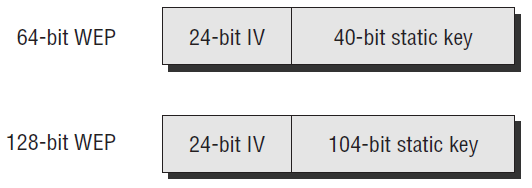
Figure 17: Static WEP encryption key and initialization vector
WEP的工作过程
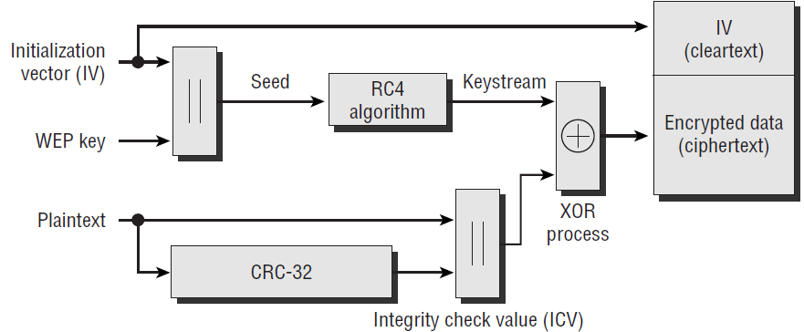
Figure 18: WEP encryption process
- WEP runs a cyclic redundancy check (CRC) on the plaintext data that is to be encrypted and then appends the integrity check value (ICV) to the end of the plaintext data.
- A 24-bit cleartext initialization vector (IV) is then generated and combined with the static secret key.
- WEP then uses both the static key and the IV as seeding material through a pseudorandom algorithm that generates random bits of data known as a keystream. These pseudorandom bits are equal in length to the plaintext data that is to be encrypted.
- The pseudorandom bits in the keystream are then combined with the plaintext data bits by using a Boolean XOR process. The end result is the WEP ciphertext, which is the encrypted data.
- The encrypted data is then prefixed with the cleartext IV.
12.2.3 MAC filters
由于MAC地址的唯一性特点，可以通过MAC地址过滤来限制设备是否允许关 联当前AP等等，具体过滤规则802.11规范中并没有说明，与具体厂商实现 有关。
12.2.4 SSID cloaking(隐藏SSID)
当AP设置了禁止广播SSID后，它发出的Beacon帧中SSID字段就是空的，这 样，STA不能通过被动扫描的方式发现设备。主设备进行主动扫描，即使 发出一个Null Probe Request，AP虽然会回一个Probe Response，但是它 的SSID值是空的，有些厂商设计的行为可以是直接丢弃这种Null probe request请求。当然，对于定向的Probe Request，如果SSID指定为当前的 AP设置的SSID，则会被允许进行Association操作。
不过，Layer-2层的抓包工具，是可以通过抓包发现AP的隐藏SSID，因为SSID是明 文的。
12.3 Robust security
802.11i定义了两种认证方法：
- 802.1X/EAP authentication 通常用于企业环境
- Preshared Key（PSK） or a passphrase. 通常用于家庭环境或小型办公环境
CCMP/AES是默认的加密方法，TKIP/RC4是可选的加密方法。
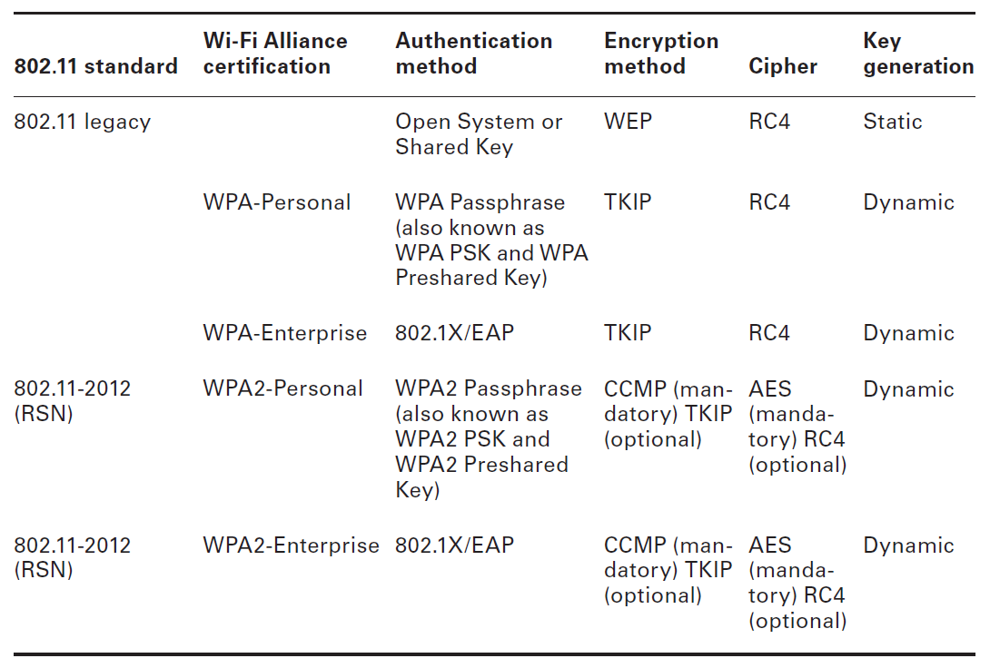
Figure 19: Security standards and certifications comparison
12.3.1 Robust security network (RSN)
802.11标准定义了：
- RSN（robust security network）
- RSNA（robust security network associations）
两个STA必须相互认证并关联，同时通过4-Way握手过程创建动态加密密钥。 两个STA之间的关联过程称之为RSNA。
RSN网络只允许创建RSNA。一个网络是否为RSN网络可以从 RSN Information Element (IE). 域得知，该信息一般携带于Beacon、Probe Response、Association Request、Reassociation Request帧中。通过这 个信息可以得知每个STA加密套件的能力。
Pre-RSN和RSN机制可以同时存在于一个BSS中。
A transition security network (TSN) supports RSN-defined security, as well as legacy security such as WEP, within the same BSS, although most vendors do not support a TSN.
12.3.2 Authentication and authorization
Authentication：the verification of user identity and credentials. Authorization involves whether a device or user is granted access to network resources and services.
在进行Authorization之前，必须通过了Authentication。
12.3.3 PSK authentication
最新的802.11标准定义了认证和密钥管理服务（AKM）. AKM服务同时要求 认证过程和加密密钥的产生和管理。
AKMP（authentication and key management protocol (AKMP)）在 802.1X中可以是 PSK也可以是EAP协议。
WPA/WPA2-Personal使用PSK认证，而WPA/WPA2-Enterprise使用 802.1X/EAP认证方案。
WPA/WPA2-Personal可以让终端用户输入一个ASCII字符串，作为密码，大 小从8到63个字符大小。实际上，在技术背后，存在一个密码映射到PSK这 样的一个过程。
Wi-Fi联盟称呼PSK认证的标准名称为：WPA-Personal or WPA2-Personal。 不过，不同厂商还有其他的一些称呼：WPA/WPA2-Passphrase, WPA/WPA2-PSK, and WPA/WPA2-Preshared Key.
12.3.4 Proprietary PSK authentication
专有的PSK认证是由厂家自己定义的方法，以应对字典攻击。标准的PSK 认证方法中，所有的设备拥有相同的PSK，而厂家特有的方法可以允许每 个设备拥有唯一的PSK。
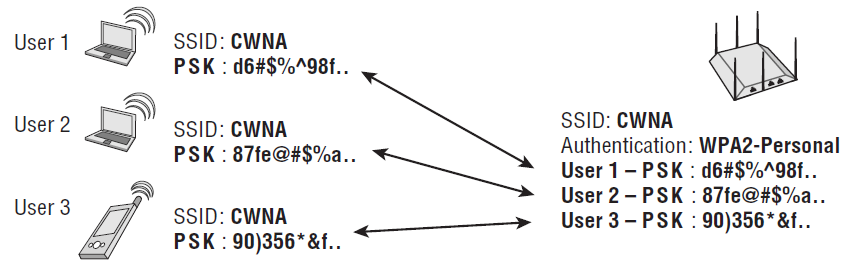
Figure 20: Proprietary PSK
12.3.5 802.1X/EAP framework
802.11X标准是一种基于端口访问控制的标准。在执行认证过程时，需要 一套协议，EAP就是用于用户认证的协议，它是Layer-2层的认证协议。
802.1X/EAP solution requires that both the supplicant and the authentication server support the same type of EAP. The authenticator must be configured for 802.1X/EAP authentication but does not care which EAP type passes through. The authenticator and the supplicant must support the same type of encryption.
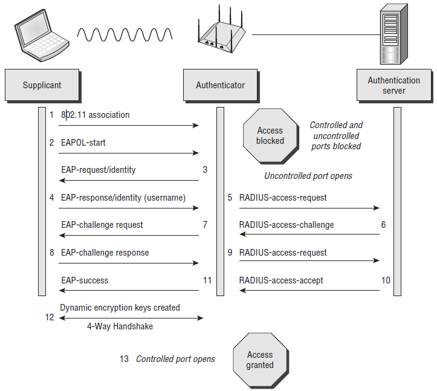
Figure 21: 802.1X/EAP authentication
12.3.6 Dynamic encryption-key generation
尽管802.1X/EAP框架没有要求加密，但是建议进行加密。802.1X/EAP的目 的是认证和授权，它的一个副产物就是动态加密密钥的产生和分发。
12.3.7 4-Way Handshake
对于两个RSN设备，相互之间在建立认证和关联过程的同时，也需要通过 一个4-Way握手过程来产生一个动态加密密钥。
RSNA使用了一个动态密钥管理方法，用来创建5个单独的密钥。 其中，包 含GMK(Group Master Key)和PMK(Pairwise Master Key)密钥的创建。PMK 是从802.1X/EAP认证过程中产生的，也可以在PSK认证过程中产生。这些 Master key做为最终密钥产生时所需要的Seeding Material。 最终的加 密密钥称为PTK（Pairwise Transient Key）和GTK（Group Temporal Key）。PTK用来加密和解密单播数据，GTK用来加密和解密广播和多播数 据。
不管使用PSK或是802.1X/EAP，4-Way握手过程一定会发生，并且，当STA 从一个BSS漫游到另一个BSS时，新的4-Way握手过程会产生，以生成新的 加密和解密密钥。
12.3.8 WPA/WPA2-Personal
当使用PSK认证时，有一个公式用来将passphase(用户输入的密码或AP设 置的密码)转换成PMK， 用于在4-Way握手过程中产生动态加密解密密钥。
12.3.9 TKIP encryption
对WEP加密方法的一个改良，仍然使用RC4算法，
802.11n设备不允许使用WEP加密方法，当启用HT或VHT时，也允许使用 TKIP加密方法。
12.3.10 CCMP encryption
最新的加密方法，802.11n之后的设备默认使用该加密方法。
12.4 Traffic segmentation
12.4.1 VLANs
Virtual local area networks (VLANs) are used to create separate broadcast domains in a layer 2 network and are often used to restrict access to network resources without regard to physical topology of the network.
a WLAN environment, individual SSIDs can be mapped to individual VLANs, and users can be segmented by the SSID/VLAN pair, all while communicating through a single access point.
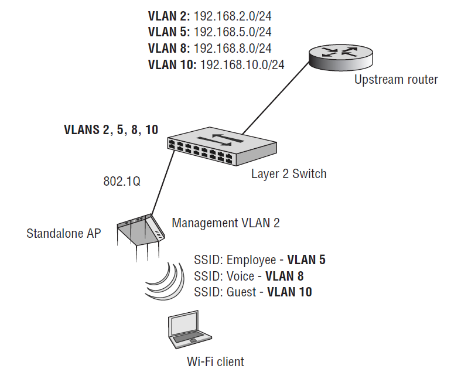
Figure 22: Wireless VLANs
12.4.2 RBAC
Role-based access control (RBAC) is another approach to restricting system access to authorized users.
12.5 Infrastructure security
protect hardware and interface.
12.5.1 Physical security
防止偷盗
12.5.2 Interface security
通过一个安全的SSID，连接上AP，然后使用命令行界面对AP进行紧急处 理。
12.6 VPN wireless security
Use of VPN technology is mandatory for remote access.
12.6.1 Layer 3 VPNs
The most commonly used layer 3 VPN technology is Internet Protocol Security (IPsec).
12.6.2 SSL VPN
SSL VPN is another VPN technology that operate at other layer such as SSL tunneling.
12.6.3 VPN deployment
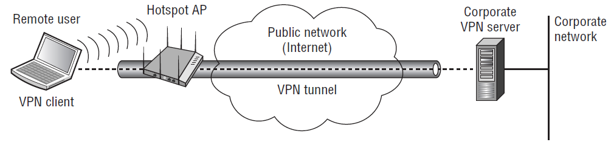
Figure 23: VPN established from a public hotspot
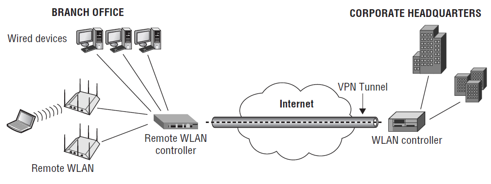
Figure 24: Site-to-site VPN
12.6.4 Guest WLAN security
提供访客通过WLAN访问网络的安全。
12.6.5 Captive portal
Most hotspots and guest networks are secured by a captive portal. A captive portal is essentially the integration of a fi rewall with an authentication web page.
12.7 Review Questions
- Which WLAN security mechanism requires that each WLAN user have
unique authentication credentials?
A. WPA-Personal
B. 802.1X/EAP
C. Open System
D. WPA2-Personal
E. WPA-PSK
答案解析
B. As required by an 802.1X security solution, the supplicant is a WLAN client requesting authentication and access to network resources. Each supplicant has unique authentication credentials that are verified by the authentication server.
- Which wireless security standards and certifications call for
the use of CCMP/AES encryption? (Choose all that apply.)
A. WPA
B. 802.11-2012
C. 802.1X
D. WPA2
E. 802.11 legacy
答案解析
B and D. The 802.11-2012 standard defines CCMP/AES encryption as the default encryption method, and TKIP/RC4 is the optional encryption method. This was originally defined by the 802.11i amendment, which is now part of the 802.11-2012 standard. The Wi-Fi Alliance created the WPA2 security certification, which mirrors the robust security defined by the IEEE. WPA2 supports both CCMP/AES and TKIP/RC4 dynamic encryption-key management.
- 128-bit WEP encryption uses a user-provided static key of what
size?
A. 104 bytes
B. 64 bits
C. 124 bits
D. 128 bits
E. 104 bits
答案解析
E. 128-bit WEP encryption uses a secret 104-bit static key that is provided by the user (26 hex characters) and combined with a 24-bit initialization vector (IV) for an effective key strength of 128 bits.
- What three main components constitute an 802.1X/EAP framework?
(Choose all that apply.)
A. Supplicant
B. Authorizer
C. Authentication server
D. Intentional radiator
E. Authenticator
答案解析
A, C and E. The supplicant, authenticator, and authentication server work together to provide the framework for an 802.1X/EAP solution. The supplicant requests access to network resources. The authentication server authenticates the identity of the supplicant, and the authenticator allows or denies access to network resources via virtual ports.
- The 802.11 legacy standard defines which wireless security
solution?
A. Dynamic WEP
B. 802.1X/EAP
C. 64-bit static WEP
D. Temporal Key Integrity Protocol
E. CCMP/AES
答案解析
C. The original 802.11 standard ratified in 1997 defined the use of a 64-bit or 128-bit static encryption solution called Wired Equivalent Privacy (WEP). Dynamic WEP was never defined under any wireless security standard. The use of 802.1X/EAP, TKIP/RC4, and CCMP/AES are all defined under the current 802.11-2012 standard.
- Paul has been hired as a consultant to secure the Levasseur
Corporation’s WLAN infrastructure. He has been asked to choose
a solution that will both protect the company’s equipment from
theft and hopefully protect the access point’s configuration
interfaces from outside attackers. What recommendations would
be appropriate? (Choose all that apply.)
A. Mounting all access points in lockable enclosure units
B. Using an IPsec VPN
C. Configuring all access points via Telnet
D. Configuring access points from the wired side using HTTPS or SSH
E. Implementing 802.1X/EAP
答案解析
A, D and E. Access points may be mounted in lockable enclosure units to provide theft protection. All access points should be configured from the wired side and never wirelessly. Encrypted management interfaces such as HTTPS and SSH should be used instead of HTTP or Telnet. An 802.1X/EAP solution guarantees that only authorized users will receive an IP address. Attackers can get an IP address prior to setting up an IPsec VPN tunnel and potentially attack the access points.
- Which security solutions may be used to segment a wireless LAN?
(Choose all that apply.)
A. VLAN
B. WEP
C. RBAC
D. CCMP/AES
E. TKIP/RC4
答案解析
A and C. Virtual LANs are used to segment wireless users at layer 3. The most common wireless segmentation strategy often used in 802.11 enterprise WLANs is segmentation using VLANS combined with role-based access control (RBAC) mechanisms. CCMP/AES, TKIP/RC4, and WEP are encryption solutions.
- What wireless security solutions are defined by Wi-Fi Protected
Access? (Choose all that apply.)
A. Passphrase authentication
B. LEAP
C. TKIP/RC4
D. Dynamic WEP
E. CCMP/AES
答案解析
A and C. The Wi-Fi Protected Access (WPA) certification was a snapshot of the not-yetreleased 802.11i amendment, supporting only the TKIP/RC4 dynamic encryption-key generation. 802.1X/EAP authentication was required in the enterprise, and passphrase authentication was required in a SOHO or home environment. LEAP is Cisco proprietary and is not specifically defined by WPA. Neither dynamic WEP nor CCMP/AES was defined for encryption. CCMP/AES dynamic encryption is mandatory under the WPA2 certification.
- Name the three main components of a role-based access control
solution.
A. EAP
B. Roles
C. Encryption
D. Permissions
E. Users
答案解析
B, D and E. Role-based access control (RBAC) is an approach to restricting system access to authorized users. The three main components of an RBAC approach are users, roles, and permissions.
- What does 802.1X/EAP provide when implemented for WLAN
security? (Choose all that apply.)
A. Access to network resources
B. Verification of access point credentials
C. Dynamic authentication
D. Dynamic encryption-key generation
E. Verification of user credentials
答案解析
A, D and E. The purpose of 802.1X/EAP is authentication of user credentials and authorization to network resources. Although the 802.1X/EAP framework does not require encryption, it highly suggests the use of encryption. A by-product of 802.1X/EAP is the generation and distribution of dynamic encryption keys.
- Which technologies use the RC4 cipher? (Choose all that
apply.)
A. Static WEP
B. Dynamic WEP
C. CCMP
D. TKIP
E. MPPE
答案解析
A, B, D and E. All forms of WEP encryption use the Rivest Cipher 4 (RC4) algorithm. TKIP is WEP that has been enhanced and also uses the RC4 cipher. PPTP uses 128-bit Microsoft Point-to-Point Encryption (MPPE), which uses the RC4 algorithm. CCMP uses the AES cipher.
- What must occur to generate dynamic TKIP/RC4 or CCMP/AES
encryption keys? (Choose all that apply.)
A. Shared Key authentication and 4-Way Handshake
B. 802.1X/EAP authentication and 4-Way Handshake
C. Static WEP and 4-Way Handshake
D. PSK authentication and 4-Way Handshake
答案解析
B and D. Shared Key authentication is a legacy authentication method that does not provide seeding material to generate dynamic encryption keys. Static WEP uses static keys. A robust security network association requires a four-frame EAP exchange known as the 4-Way Handshake that is used to generate dynamic TKIP or CCMP keys. The handshake may occur either after an 802.1X/EAP exchange or as a result of PSK authentication.
- For an 802.1X/EAP solution to work properly, which two
components must both support the same type of EAP? (Choose all
that apply.)
A. Supplicant
B. Authorizer
C. Authenticator
D. Authentication server
答案解析
A and D. An 802.1X/EAP solution requires that both the supplicant and the authentication server support the same type of EAP. The authenticator must be configured for 802.1X/EAP authentication but does not care which EAP type passes through. The authenticator and the supplicant must support the same type of encryption.
- When you’re using an 802.11 wireless controller solution,
which device would be usually function as the authenticator?
A. Access point
B. LDAP server
C. WLAN controller
D. RADIUS server
答案解析
C. WLAN controllers use lightweight access points, which are dumb terminals with radio cards and antennas. The WLAN controller is the authenticator. When an 802.1X/EAP solution is deployed in a wireless controller environment, the virtual controlled and uncontrolled ports exist on the WLAN controller.
- Identify some aspects of the Temporal Key Integrity
Protocol. (Choose all that apply.)
A. 128-bit temporal key
B. 24-bit initialization vector
C. Message integrity check
D. 48-bit IV
E. Diffie-Hellman Exchange
答案解析
A, C and D. TKIP starts with a 128-bit temporal key that is combined with a 48-bit initialization vector (IV) and source and destination MAC addresses in a process known as per-packet key mixing. TKIP uses an additional data integrity check known as the message integrity check (MIC).
- In a point-to-point bridge environment where 802.1X/EAP is
used for bridge authentication, what device in the network
acts as the 802.1X supplicant?
A. Nonroot bridge
B. Controller
C. Root bridge
D. RADIUS server
E. Layer 3 core switch
答案解析
A. The root bridge would be the authenticator, and the nonroot bridge would be the supplicant if 802.1X/EAP security is used in a WLAN bridged network.
- CCMP encryption uses which AES key size?
A. 192 bits
B. 64 bits
C. 256 bits
D. 128 bits
答案解析
D. The AES algorithm encrypts data in fixed data blocks with choices in encryptionkey strength of 128, 192, or 256 bits. CCMP/AES uses a 128-bit encryption-key size and encrypts in 128-bit fixed-length blocks.
- Identify the security solutions that are defined by
WPA2. (Choose all that apply.)
A. 802.1X/EAP authentication
B. Dynamic WEP encryption
C. Optional CCMP/AES encryption
D. Passphrase authentication
E. DES encryption
答案解析
A and D. The WPA2 certification requires the use of an 802.1X/EAP authentication method in the enterprise and the use of a preshared key or a passphrase in a SOHO environment. The WPA2 certification also requires the use of stronger dynamic encryption-key generation methods. CCMP/AES encryption is the mandatory encryption method, and TKIP/RC4 is the optional encryption method.
- What encryption method does the IEEE 802.11-2012 standard
mandate for robust security network associations and what
method is optional?
A. WEP, AES
B. IPsec, AES
C. MPPE, TKIP
D. TKIP, WEP
E. CCMP, TKIP
答案解析
E. The 802.11-2012 standard defines what is known as a robust security network (RSN) and robust security network associations (RSNAs). CCMP/AES encryption is the mandated encryption method, and TKIP/RC4 is an optional encryption method.
- Which layer 2 protocol is used for authentication in an 802.1X
framework?
A. Extensible Authorization Protocol
B. Extended Authentication Protocol
C. Extensible Authentication Protocol
D. CHAP/PPP
E. Open System
答案解析
C. The supplicant, authenticator, and authentication server work together to provide the framework for 802.1X port-based access control, and an authentication protocol is needed to assist in the authentication process. The Extensible Authentication Protocol (EAP) is used to provide user authentication.
13 第十六章 Site Survey Systems and Devices
13.1 Site survey defined
the site survey must encompass so much more than just determining coverage, including looking for potential sources of interference as well as the proper placement, installation, and confi guration of 802.11 hardware and related components.
13.1.1 Protocol and spectrum analysis
分析收包包的信息，SSID，BSSID以及相关的安全信息，同时检测信号 强度的变化。
Wi-Fi-oriented spectrum and protocol analyzers fall into two categories: standalone and Integrated
13.1.2 Standalone
Wi-Fi接收器和频谱分析仪分别独立工作获取不同的信息，相互之间是 独立的。
13.1.3 Integrated
将Wi-Fi网卡与频谱分析仪获取的信息进行综合，可以通过软件提供更专 业的信息。
13.1.4 Spectrum analysis
在进行覆盖分析测试之间，必须先定位干扰源。
如果背景噪声信号强度超过了-85dBm，则无线网络的性能半会受到极大 影响。
这种环境下，也会导致Layer 2重传率升高，当超过10%的重传率时，网 络吞吐量将会受到极大影响。
2.4G下的常见干扰源：
- Microwave ovens
- 2.4 GHz cordless phones, DSSS and FHSS
- Fluorescent bulbs(荧光灯）
- 2.4 GHz video cameras
- Elevator motors
- Cauterizing devices(电烙铁设备)
- Plasma cutters（等离子切割机）
- Bluetooth radios
- Nearby 802.11, 802.11b, 802.11g, or 802.11n (2.4 GHz) WLANs
5G下潜在的干扰源：
- 5 GHz cordless phones
- Radar
- Perimeter sensors(外线传感器)
- Digital satellite
- Nearby 5 GHz WLANs
- Outdoor wireless 5 GHz bridges
13.1.5 Coverage analysis
| Data rate | Minimum received signal | Minimum signal-to-noise ratio |
|---|---|---|
| 54 Mbps | –71 dBm | 25 dB |
| 36 Mbps | –73 dBm | 18 dB |
| 24 Mbps | –77 dBm | 12 dB |
| 12/11 Mbps | –82 dBm | 10 dB |
| 6/5.5 Mbps | –89 dBm | 8 dB |
| 2 Mbps | –91 dBm | 6 dB |
| 1 Mbps | –94 dBm | 4 dB |
13.1.6 AP placement and configuration
13.1.7 Application analysis
13.2 Site survey tools
13.2.1 Indoor site survey tools
13.2.2 Outdoor site survey tools
13.3 Coverage analysis
13.3.1 Manual
13.3.2 Predictive
13.3.3 Dynamic RF
13.3.4 Wireless network validation
14 第十八章 802.11n
14.1 802.11n-2009 amendment
802.11n-2009定义了HT， 无线通信可以结合MIMO技术和OFDM技术。 MIMO 技术提高了吞吐量和通信范围。802.11n向后与802.11a/b/g保持兼容。 802.11n可使用在2.4G和5G。
14.2 Wi-Fi Alliance certification
Wi-Fi联盟针对802.11n有一个厂商认证项目称为WiFi CERTIFIED n。 802.11n的产品必须通过一些强制测试项和可选项。所有认证过的802.11n 设备必须支持Wi-Fi多媒体的QoS机制和WPA/WPA2的安全机制。
14.3 MIMO
MIMO是支持802.11n物理层的核心和灵魂。对于传统的802.11设备，多径是 一个会导致信号衰减或数据破坏的问题，但是，对于802.11n设备，多径效 应却是一个可利用的现象，802.11n就是充分利用多径效应来提高网络吞吐 量的。
MIMO信号发射端发射的信息会通过多条路径到达MIMO信号接收端，MIMO信 号接收端会使用高级的DSP技术挑选出原始的传输信号。
通过使用SM（spatial multiplexing）方法传输多个数据流，可以利用多 径提供更好的吞吐量。MIMO系统也可以同时使用多条天线来提供更好的传 输和接收差异， 这可以增大传输范围和可靠性。
有许多传输和接收差异的技术：
- Space-time block coding (STBC) and cyclic shift diversity (CSD) are transmit diversity techniques where the same transmit data is sent out of multiple antennas. STBC技术只能用于802.11n设备之间，而CSD技术可以用于802.11n设备 和其他类型的设备。
- Transmit beamforming (TxBF) is a technique where the same signal is transmitted over multiple antennas and the antennas act like a phased array.
- Maximal ratio combining (MRC) is a type of receive diversity technique where multiple received signals are combined, thus improving sensitivity.
空间利用和差异化技术是利用多径的重要技术。
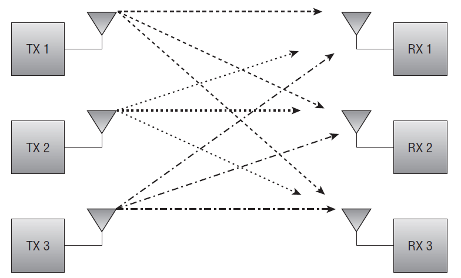
Figure 25: MIMO operation and multipath
14.3.1 Radio chains
A radio chain is defined as a single radio and all of its supporting architecture, including mixers, amplifiers, and analog/digital converters.
一个MIMO系统包含多个Radio Chain，每个Radio Chain都有自己的天线。 一个MIMO系统是以发送端和接收端使用的Radio Chain为特征的。一个 2X3MIMO系统代表有三个Radio Chain由2个发送端和3个接收端使用。
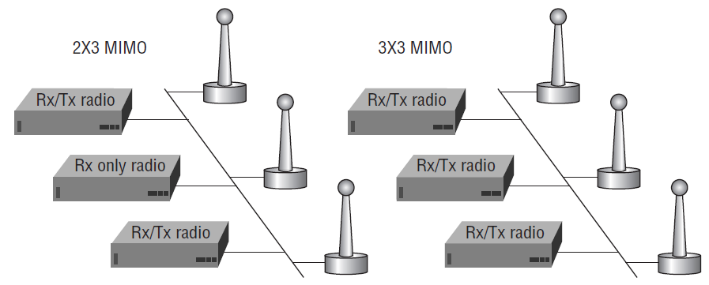
Figure 26: 2×3 and 3×3 MIMO
14.3.2 Spatial multiplexing (SM)
A MIMO radio also has the ability to send independent unique
data streams. Each independent data stream is known as a
spatial stream. 每个单独的Spatial Stream包含的数据可以跟其他的
Radio Chain传送的数据不一样。
Each stream will also travel a different path, because there is at least a half-wavelength of space between the multiple transmitting antennas. The fact that the multiple streams follow different paths to the receiver because of the space between the transmitting antennas is known as spatial diversity.
Sending multiple independent streams of unique data using spatial diversity is often also referred to as spatial multiplexing (SM) or spatial diversity multiplexing (SDM).
描述MIMO能力的格式： 3×3:2 第一个数字代表TX数量，第二个数字代表RX数量，第三个代表发送或 接收唯一的数据流数量。
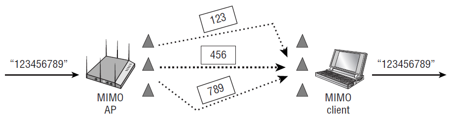
Figure 27: Multiple spatial streams
当一个STA加入一个BSS时，STA会将MIMO能力信息告知给AP。
14.3.3 MIMO diversity
Antenna diversity (both receive and transmit) is a method of using multiple antennas to survive the negative effects of multipath.
接收端从收到的信号中，提取信号最强的。使用多根天线增加了信号被接 收到的概率，从而降低数据破坏的概率，实际效果是信号传输距离变长了。
14.3.4 Space-time block coding (STBC)
Space-time block coding (STBC) is a method where the same information is transmitted on two or more antennas. It is a type of transmit diversity.
当天线数量超过spatial streams数量时，可以使用STBC。STBC并不能增 加数据传输速率，但是可以增强接收端在SNR较小的时候可以检测到信号。 无线信号系统的接收灵敏度增强了。STBC主要用于802.11n设备之间的数 据传输。
14.3.5 Cyclic shift diversity (CSD)
另一种比较重要的Transmit Diversity技术，可以用于802.11n设备与传 统802.11设备之间的数据传输。
14.3.6 Transmit beamforming (TxBF)
802.11n标准中定义的一种可选的物理层能力。Transmit beamforming can be used when there are more transmitting antennas than there are spatial data streams.
接收端通过调整信号的相位，得到一个较高振幅的信号，提高了SNR，增 大了数据传输距离。
14.4 HT channels
14.4.1 20 MHz non-HT and HT channels
802.11n (HT) radios also use the same OFDM technology and have the capability of using either 20 MHz channels or 40 MHz channels. The 20 MHz channels used by HT radios have four extra subcarriers and can carry a little more data than a non-HT OFDM channel.
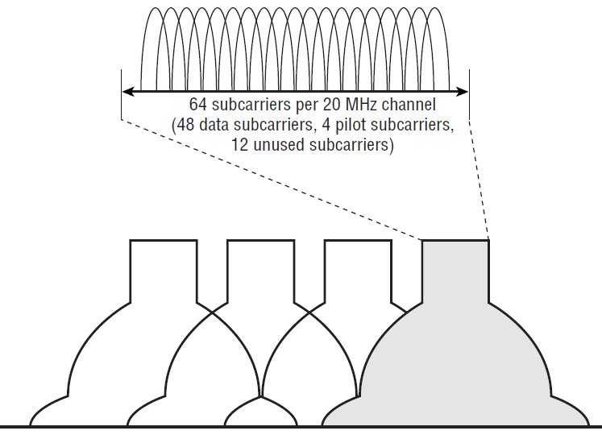
Figure 28: 20 MHz non-HT (802.11a/g) channel
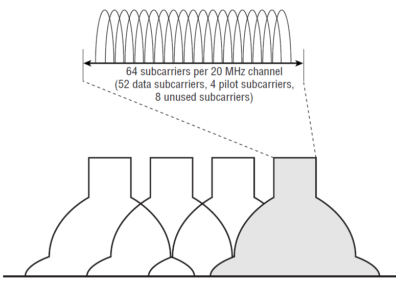
Figure 29: 20 MHz HT (802.11n) channel
14.4.2 40 MHz channels
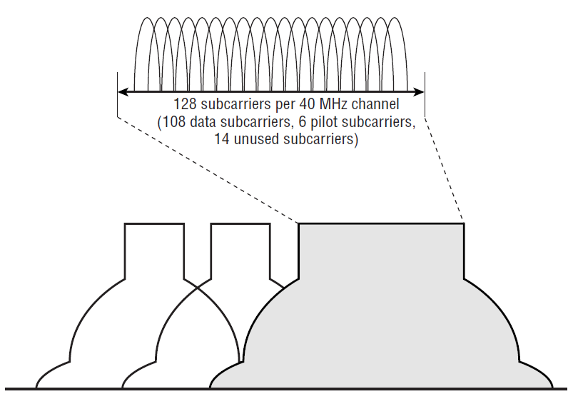
Figure 30: 40 MHz HT (802.11n) channel
40MHz的信道是由两个相邻的20MHz信道合并的，其中一个为主信道，另 一个为辅信道。
14.4.3 40 MHz Intolerant
2.4G频段，只有一个不重叠的40 MHz的信道。 一个在2.4G使用40 MHz信道宽 度的AP会影响周围其他的AP，如果该AP运行在2.4G，并使用20 MHz信道 宽度， 如1， 6 ， 11信道。默认情况下，802.11 STA和AP在2.4G频段 传输数据时会使用20 MHz的信道宽度。 它们也可以通过802.11n管理帧 告知周围其他设备它们是 Forty MHz Intolerant 。 当2.4G下使用 40 MHz信道宽度的AP收到这样的管理帧后，会自动切回到20 MHz的信道 宽度。对于运行于5G下的AP，则没有这样的要求。
14.4.4 Guard interval (GI)
For digital signals, data is modulated onto the carrier signal in bits or collections of bits called symbols.
802.11a/g radios use an 800-nanosecond guard interval (GI)
between OFDM symbols. The guard interval is a period of time
between symbols that accommodates the late arrival of symbols
over long paths.
In a multipath environment, symbols travel different paths, and therefore some symbols arrive later. A “new” symbol may arrive at a receiver before a “late” symbol has been completely received. This is known as intersymbol interference (ISI) and often results in data corruption.
delay spread is the time differential between multiple paths
of the same signal. 通过delay spread的大小为50 ns ~ 100 ns, 最
多不超过200 ns. Guard interval通常是2到4倍delay spread的大小。
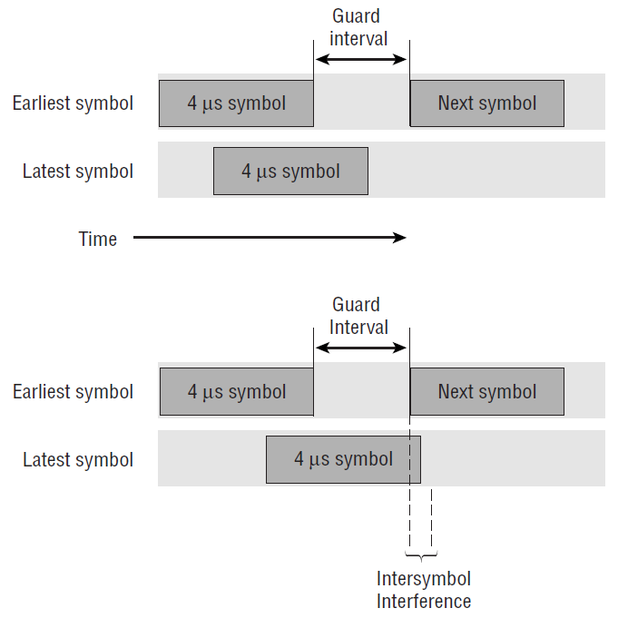
Figure 31: Guard interval
GI的主要作用是防止 Inter symbol inerference.
14.4.5 Modulation and coding scheme (MCS)
802.11n data rates are defined with a modulation and coding scheme (MCS) matrix.
14.4.6 HT PHY
MSDU是Layer3~7层的负载。 MPDU是整个802.11帧的技术名称。当MPDU转 到物理层后，前导码和PHY头部信息加入到MPDU，产生了 Physical Layer Convergence Procedure Protocol Data Unit (PPDU). 前导码的作用是使用一些比特位同步两个802.11无线信号传输。PHY头部 的主要目的是使用一个Signal域显示要花多长时间去传输802.11帧 （MPDU），并通知接收方当前传输MPDU使用的MCS（速率）。
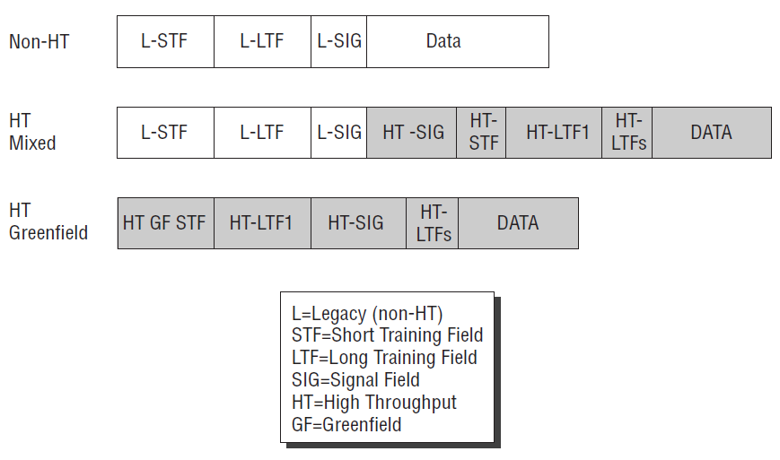
Figure 32: 802.11n PPDU formats
14.4.7 Non-HT legacy
Support for the non-HT legacy format is mandatory for 802.11n radios, and transmissions can occur in only 20 MHz channels.
14.4.8 HT Mixed
The HT Mixed format is also considered mandatory, and transmissions can occur in both 20 MHz and 40 MHz channels.
When a 40 MHz channel is used, all broadcast traffic must be sent on a legacy 20 MHz channel so as to maintain interoperability with the 802.11a/g non-HT clients.
14.4.9 HT Greenfield
Greenfield format is optional, and the HT radios can transmit by using both 20 MHz and 40 MHz channels..
这种模式不能兼容802.11a/b/g设备，也没有要求使用保护机制。
14.5 HT MAC
针对MAC逻辑链路子层， 也提供了一些机制来增强吞吐量，改进电源管理 功能： 使用帧聚合。
14.5.1 A-MSDU
802.11设备传输帧时，使用竞争机制来获取媒介使用权，这样会产生一 些通信开锁，且是无法避免的。 为了降低通信开销，802.11n引入了两 个新的帧聚合方法来帮助降低开销。
第一种方法是： Aggregate MAC Service Data Unit(A-MSDU) 。
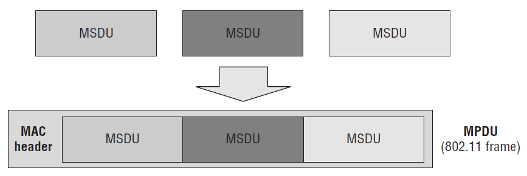
Figure 33: A-MSDU
14.5.2 A-MPDU
The second method of frame aggregation is known as Aggregate MAC Protocol Data Unit (A-MPDU).
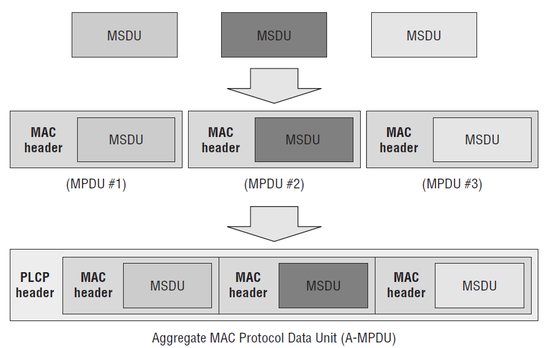
Figure 34: A-MPDU
14.5.3 Block Acknowledgment
A-MSDU只需要 一个ACK，但是，A-MPDU需要对其中的每个MPDU进行确认， 这是通过 multiple traffic ID block acknowledgment (MTBA) frame 来完成的，它实际上是一个A-MPDU的Block ACK帧。
14.5.4 RIFS
802.11n引入了一个更短的帧间间隔 reduced interframe space (RIFS) 。
14.5.5 HT power management
802.11e QoS修订版引入了unscheduled automatic power save delivery (U-APSD), 这个是WMM-PS使用的机制。11n引入了另外两个新 的省电机制。
- spatial multiplexing power save(SM power save)
这个机制允许一个使用MIMO技术的11n设备保留一个radio活跃的情况下， 关闭所有其他的radio。 使用SM power save action帧来告知AP当前STA的ratio活跃状况。
- Power Save Multi Poll (PSMP)
基于S-APSD之上的一种Power Management方法，主要应用于使用HCCA 信道访问控制机制的网络 。
14.6 HT operation
14.6.1 20/40 channel operation
Several rules apply for the operation of 20 MHz and 40 MHz stations within the same HT 20/40 basic service set:
- The 802.11n access point must declare 20-only or 20/40 support in the beacon management frame.
- 802.11n client stations must declare 20-only or 20/40 in the association or reassociation frames.
- Client stations must reassociate when switching between 20-only and 20/40 modes.
- If 20/40-capable stations transmit by using a single 20 MHz channel, they must transmit on the primary channel and not the secondary channel.
14.6.2 HT protection modes (0–3)
在Beacon帧中，有一个HT Protection的域，它有4个可能的值0~3. 保护 模式会动态变化，取决于周围的设备或者关联的HT AP。使用的保护机制 主要有：RTS/CTS, CTS-to-Self, Dual-CTS或者其他的保护方法。
4种保护模式：
- Mode 0—Greenfield (No Protection) Mode This mode is referred to as Greenfield because only HT radios are in use.
- Mode 1—HT Nonmember Protection Mode 在该模式下，BSS中所有的STA都必须是HT STA.
- Mode 2—HT 20 MHz Protection Mode the 20/40-capable HT stations must use protection when transmitting on a 40 MHz channel in order to prevent the 20 MHz–only HT stations from transmitting at the same time.
- Mode 3—Non-HT Mixed Mode This protection mode is used when one or more non-HT stations are associated to the HT access point.
14.6.3 RTS/CTS and CTS-to-self
主要用于保护HT STA数据传输。
14.7 Review Questions
- Thirty 2×2:2 access points have been deployed at a school
where all the client devices are 1×1:1 802.11n tablets. The
access points are transmitting on 20 MHz channels with the
standard guard interval of 800 ns. What is the highest 802.11n
data rate that can be used for communications between the APs
and tablets?
A. 54 Mbps
B. 65 Mbps
C. 72 Mbps
D. 150 Mbps
E. 300 Mbps
答案解析
B. The majority of enterprise 802.1n access points are either 2×2:2 or 3×3:3. However, most 802.11n mobile devices, such as smartphones and tablets, only have a 1×1:1 MIMO radio because the addition of more radio chains would drain the battery life of the mobile device too quickly. In the described scenario, the highest available data rate for 1×1:1 communications is 65 Mbps.
- How can a MIMO system increase throughput at the Physical
layer? (Choose all that apply.)
A. Spatial multiplexing
B. A-MPDU
C. Transmit beamforming
D. 40 MHz channels
E. Dual-CTS protection
答案解析
A, C and D. Spatial multiplexing transmits multiple streams of unique data at the same time. If a MIMO access point sends two unique data streams to a MIMO client who receives both streams, the throughput is effectively doubled. If a MIMO access point sends three unique data streams to a MIMO client who receives all three streams, the throughput is effectively tripled. Because transmit beamforming results in constructive multipath communication, the result is a higher signal-to-noise ratio and greater received amplitude. Transmit beamforming will result in higher throughput because of the higher SNR that allows for the use of more complex modulation methods that can encode more data bits. 40 MHz HT channels effectively double the frequency bandwidth，which results in greater throughput. A-MPDU and Dual-CTS protection are MAC layer mechanisms.
- Which new power-management method defined by the 802.11n
amendment conserves power by powering down all but one radio?
A. A-MPDU
B. Power Save protection
C. PSMP
D. SM power save
E. PS mode
答案解析
D. Spatial multiplexing power save (SM power save) allows a MIMO 802.11n device to power down all but one of its radios. For example, a 4×4 MIMO device with four radio chains would power down three of the four radios, thus conserving power. SM power save defines two methods of operation: static and dynamic.
- The guard interval is used as a buffer to compensate for what
type of interference?
A. Co-channel interference
B. Adjacent cell interference
C. RF interference
D. HT interference
E. Intersymbol interference
答案解析
E. The guard interval acts as a buffer for the delay spread, and the normal guard interval is an 800-nanosecond buffer between symbol transmissions. The guard interval will compensate for the delay spread and help prevent intersymbol interference. If the guard interval is too short, intersymbol interference will still occur. HT radios also have the capability of using a shorter 400-nanosecond GI.
- Name some of the factors that a modulation and coding scheme
(MCS) uses to define data rates for an HT radio. (Choose all
that apply.)
A. Modulation method
B. Equal/unequal modulation
C. Number of spatial streams
D. GI
E. Channel size
答案解析
A, B, C, D and E. HT radios use modulation and coding schemes to define data rates based on numerous factors, including modulation type, the number of spatial streams, channel size, guard interval, equal/unequal modulation, and other factors. Each modulation and coding scheme (MCS) is a variation of these multiple factors. A total of 77 modulation and coding schemes exist for both 20 MHz HT channels and 40 MHz HT channels.
- How can an HT radio increase throughput at the MAC sublayer of
the Data-Link layer? (Choose all that apply.)
A. A-MSDU
B. RIFS
C. A-MPDU
D. Guard interval
E. MTBA
答案解析
A, B, C and E. The 802.11n amendment introduces two new methods of frame aggregation to help reduce overhead and increase throughput. Frame aggregation is a method of combining multiple frames into a single frame transmission. The two types of frame aggregation are A-MSDU and A-MPDU. Multiple traffic ID block acknowledgment (MTBA) frames are used to acknowledge A-MPDUs. Block ACKs result in less overhead. RIFS is a 2-microsecond interframe space that can be used in an HT Greenfield network during frame bursts. The 2-microsecond interframe space is less overhead than the more commonly used SIFS. Guard intervals are used at the Physical layer.
- Transmit beamforming uses what type of frames to analyze the
MIMO channel before transmitting directed paths of data?
A. Trigger frames
B. Beaming frames
C. Sounding frames
D. SM power save action frames
答案解析
C. An 802.11n transmitter that uses beamforming will try to adjust the phase of the signals based on feedback from the receiver using sounding frames. The transmitter is considered the beamformer, and the receiver is considered the beamformee. The beamformer and the beamformee work together to educate each other about the characteristics of the MIMO channel.
- A 3×3:2 MIMO radio can transmit and receive how many unique
streams of data?
A. Two.
B. Three.
C. Four.
D. Three equal and four unequal streams.
E. None—the streams are not unique data.
答案解析
A. MIMO radios transmit multiple radio signals at the same time and take advantage of multipath. Each individual radio signal is transmitted by a unique radio and antenna of the MIMO system. Each independent signal is known as a spatial stream, and each stream can contain different data than the other streams transmitted by one or more of the other radios. A 3×3:2 MIMO system can transmit two unique data streams. A 3×3:2 MIMO system would use three transmitters and three receivers; however, only two unique data streams are utilized.
- Name a capability not defined for A-MPDU.
A. Multiple QoS access categories
B. Independent data payload encryption
C. Individual MPDUs having the same receiver address
D. MPDU aggregation
答案解析
A. Multiple MPDUs can be aggregated into one frame. The individual MPDUs within an A-MPDU must all have the same receiver address. However, individual MPDUs must all be of the same 802.11e quality-of-service access category.
- Which HT protection modes allow only for the association of HT
stations in the HT basic service set? (Choose all that apply.)
A. Mode 0—Greenfield mode
B. Mode 1—HT nonmember protection mode
C. Mode 2—HT 20 MHz protection mode
D. Mode 3—HT Mixed mode
答案解析
A, B and C. Modes 0, 1, and 2 all define protection to be used in various situations where only HT stations are allowed to associate to an HT access point. Mode 3—HT Mixed mode—defines the use of protection when both HT and non-HT radios are associated to an HT access point.
- Which of these capabilities are considered mandatory for an
802.11n access point as defined by the Wi-Fi Alliance’s
vendor certification program called Wi-Fi CERTIFIED n? (Choose
all that apply.)
A. Three spatial streams in receive mode
B. WPA/WPA2
C. WMM
D. Two spatial streams in transmit mode
E. 2.4 GHz–40 MHz channels
答案解析
B, C and D. Some of the mandatory baseline requirements of Wi-Fi CERTIFIED n include WPA/WPA2 certification, WMM certification, and support for 40 MHz channels in the 5 GHz U-NII bands. 40 MHz channels in 2.4 GHz are not required. 802.11n access points must support at least two spatial streams in both transmit and receive mode. Client stations must support one spatial stream or better.
- MIMO radios use which mechanisms for transmit diversity?
(Choose all that apply.)
A. Maximum ratio combining (MRC)
B. Spatial multiplexing (SM)
C. Space-time block coding (STBC)
D. Cyclic shift diversity (CSD)
E. Multiple traffic ID block acknowledgment (MTBA)
答案解析
C and D. Cyclic shift diversity (CSD) is a method of transmit diversity technique specified in the 802.11n standard. Unlike STBC, a signal from a transmitter that uses CSD can be received by legacy 802.11g and 802.11a devices. Maximum ratio combining (MRC) is a method of receive diversity.
- 802.11n (HT) radios are backward compatible with which of the
following types of 802.11 radios? (Choose all that apply.)
A. 802.11b radios (HR-DSSS)
B. 802.11a radios (OFDM)
C. 802.11 legacy radios (FHSS)
D. 802.11g radios (ERP)
答案解析
A, B and D. 802.11n (HT) radios are backward compatible with older 802.11b radios (HR-DSSS), 802.11a radios (OFDM), and 802.11g radios (ERP). HT radios are not backward compatible with legacy frequency hopping radios.
- How does transmit beamforming (TxBF) use multiple MIMO
antennas to increase range?
A. Beamsteering
B. Phase shifting
C. Dynamic beamforming
D. Spatial multiplexing
答案解析
B. Transmit beamforming is a method that allows a MIMO transmitter using multiple antennas to adjust the phase of the outgoing transmissions in a coordinated method. If the transmitter (TX) knows about the receiver’s location, the phase of the multiple signals sent by a MIMO transmitter can be adjusted. When the multiple signals arrive at the receiver, they are in phase, resulting in constructive multipath instead of the destructive multipath caused by out-of-phase signals. Beamsteering and dynamic beamforming use smart antenna technology to create directional beams.
- Which HT PPDU formats support both 20 MHz and 40 MHz channels?
(Choose all that apply.)
A. Non-HT legacy format
B. PCO mode
C. HT Mixed format
D. HT Greenfield format
答案解析
C and D. The HT Mixed format is considered mandatory, and transmissions can occur in both 20 MHz and 40 MHz channels. Support for the HT Greenfield format is optional, and the HT radios can transmit by using both 20 MHz and 40 MHz channels。 Support for the non-HT legacy format is mandatory for 802.11n radios, and transmissions can occur in only 20 MHz channels. PCO is not a PPDU format.
- A WLAN consultant has recommend that a new 802.11n HT network
be deployed by using channels in the 5 GHz U-NII bands. Why
would he recommend 5 GHz over 2.4 GHz?
A. HT radios do not require DFS and TPC in the 5 GHz bands.
B. HT radios get better range using TxBF in the 5 GHz bands.
C. 40 MHz channels do not scale in the 2.4 GHz ISM band.
D. 5 GHz HT radios are less expensive than 2.4 GHz HT radios.
答案解析
C. Deploying 40 MHz HT channels at 2.4 GHz does not scale properly in multiple channel architecture. Although 14 channels are available at 2.4 GHz, there are only 3 nonoverlapping 20 MHz channels available in the 2.4 GHz ISM band. When the smaller channels are bonded together to form 40 MHz channels in the 2.4 GHz ISM band, any two 40 MHz channels will overlap. Channel reuse patterns are not possible with 40 MHz channels in the 2.4 GHz ISM band.
- What 802.11n mode of operation sends the same data on two
adjacent 20 MHz channels?
A. Greenfield mode
B. HT Mixed mode
C. Non-HT duplicate mode
D. LDPC mode
答案解析
C. Non-HT duplicate transmissions will be sent using 802.11a data rates in the 5 GHz band or 802.11g data rates in the 2.4 GHz band. Non-HT duplicate transmissions are just sending the same data on two adjacent 20 MHz (52 subcarriers) OFDM channels at the same time. This will cause STAs operating in either the primary or secondary channel to update their NAVs and defer their transmissions. Non-HT duplicate mode improves error rate performance but is not widely implemented by WLAN vendors.
- What frequencies are defined for 802.11n (HT) radio
transmissions? (Choose all that apply.)
A. 902–928 MHz
B. 2.4–2.4835 GHz
C. 5.15–5.25 GHz
D. 5.25–5.35 MHz
答案解析
B and C. Other 802.11 technologies are frequency dependent on a single RF band. For example, 802.11b/g radios can transmit in only the 2.4 GHz ISM band. 802.11a are restricted to the 5 GHz U-NII bands. 802.11n radios are not locked to a single frequency band and can transmit on both the 2.4 GHz ISM band and the 5 GHz U-NII bands.
- What PHY layer mechanism might be used to increase throughput
for an HT radio in a clean RF environment with minimal
reflections and low multipath?
A. Maximum ratio combining
B. 400-nanosecond guard interval
C. Switched diversity
D. Spatial multiplexing
E. Spatial diversity
答案解析
B. 802.11n also uses an 800-nanosecond guard interval; however, a shorter 400-nanosecond guard interval is optional. A shorter guard interval results in a shorter symbol time, which has the effect of increasing data rates by about 10 percent. If the optional shorter 400-nanosecond guard interval is used with an 802.11n radio, throughput should increase. However, if intersymbol interference occurs because of multipath, the result is data corruption. If data corruption occurs, layer 2 retransmissions will increase and the throughput will be adversely affected. Therefore, a 400-nanosecond guard interval should be used in only good RF environments. If throughput goes down because of a shorter GI setting, the default guard interval setting of 800 nanoseconds should be used instead.
- What PHY layer mechanisms might be used to increase the range
for an 802.11n radio using a MIMO system? (Choose all that
apply.)
A. Maximum ratio combining
B. Guard interval
C. Transmit beamforming
D. Spatial multiplexing
答案解析
A and C. As the distance between a transmitter and receiver increases, the received signal amplitude decreases to levels closer to the noise floor. Maximum ratio combining (MRC) algorithms are used to combine multiple received signals by looking at each unique signal and optimally combining the signals in a method that is additive as opposed to destructive. MIMO systems using both switched diversity and MRC together will effectively raise the SNR level of the received signal. Because transmit beamforming results in constructive multipath communication, the result is a higher signal-to-noise ratio and greater received amplitude. Therefore, transmit beamforming will result in greater range for individual clients communicating with an access point.
15 第十九章 VHT & 802.11ac
15.1 802.11ac 2003修订版
802.11ac是分阶段实现的，第一阶段目标是传输速率达到1.3Gbps， 第二阶 段目标是传输速率达到3.5Gbps。
与802.11n对比情况如下：
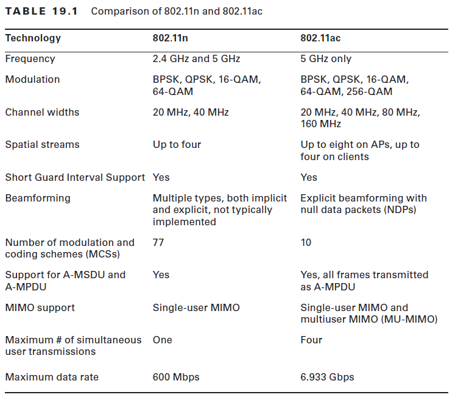
15.2 5 GHz only
802.11ac由于支持更高的带宽，所以只能工作在5G频段上。
15.3 20,40,80,160 MHz信道
11ac在11n的基础上，引入了80MHz，160MHz的带宽。其中，40MHz带宽信道是 由两个相邻的20MHz信道组合而成，80MHz带宽信道是由两个相邻的40MHz信 道组合而成，160MHz是由两个相邻或独立的两个80MHz信道构成。
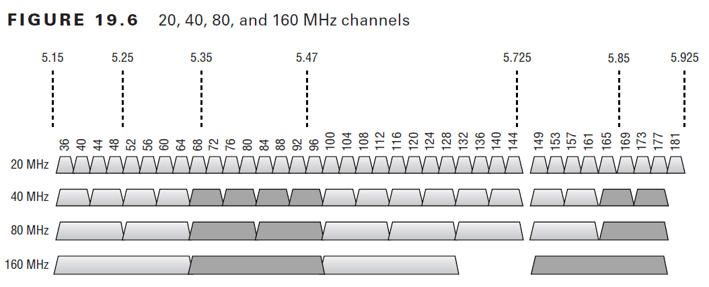
对于11n设备，当他们使用40MHz带宽传输数据时，必须等待Primary Channel 和Secondary Channel都空闲的情况下，才能进行数据传输。显然会影响11n 设备的性能。
11ac设备引入了新的功能，允许AP以每帧为单位选择不同的带宽进行传输。 这种特性称为 dynamic bandwidth operation 。 这样，11ac的AP，如果 工作在信36，40，44，48上以80MHz带宽进行数据传输，在进行数据传输之前， 会检查这4个信道是否空闲，如果发现其中36信息被其他AP占用，则会在信道 44，48上以40Mhz带宽进行数据传输。
15.4 256 QAM modulation
新的调整信号方法， 256 QAM is more sensitive to noise and interference.
15.5 Modulation and coding schemes
11ac只定义了10个MCS选项，前8个是必须实现的。
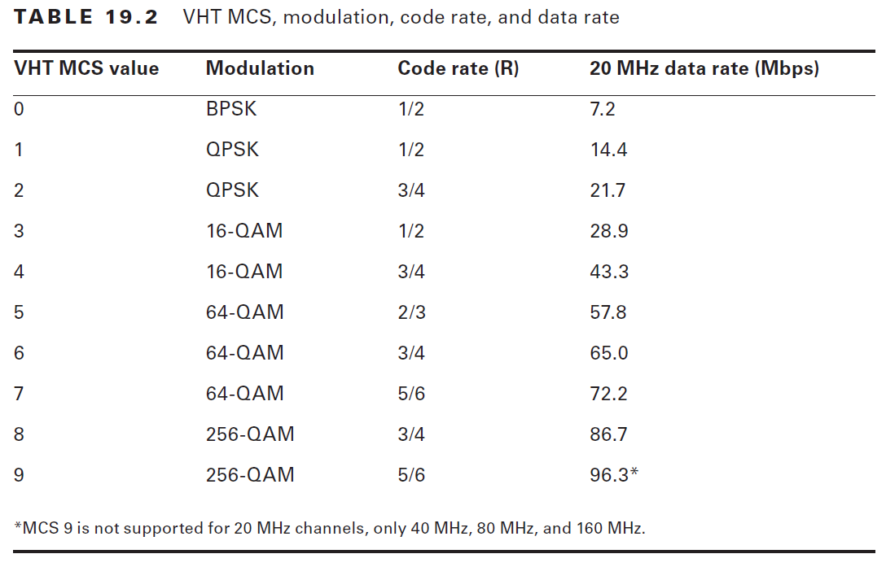
The last column represents the maximum achievable data rate for each MCS. The data rate is based on a 20 MHz wide channel, a single spatial stream, and a short guard interval (400 ns).
11ac不能单独禁用某一个速率，但是支持三个选择： MCS 0-7,MCS 0-8, or MCS 0-9.
15.6 Single User MIMO
15.7 802.11ac date Rates
相对于11n，11ac主要在如下几个方面进行了增强，以提升数据传输速率。
- 采用
256-QAM调制方法
15.8 VHT MAC
11ac只需要考虑11a, 11n(5G)设备的共存问题。 由于物理层都使用OFDM前导 码，可以容易计算出等待的时间。
15.8.1 A-MPDU
所有11ac数据帧都是使用 A-MPDU 帧格式进行传输，即使是只有一个数据
帧传输。 A-MPDU 降低了每帧的开销，只要求一个Block ACK。11n中的
RIFS不需要了，所以11ac是不支持RIFS的。
15.8.2 RTS/CTS
一个AP如果有准备在4个相邻信道上进行80MHz的数据传输，需要在4个信道 上发送RTS，然后监听CTS，如果信道不忙，则会收到4个CTS。
但是，如果4个信道中，有一个或2个信道忙，则AP可能只收到两个CTS，这 样AP就只能进行40MHz的数据传输。
15.9 Beamforming
Instead of equally radiating the RF signal, beamforming allows an 802.11 transmitter to focus or direct the RF energy toward a specific client.
To perform beamforming, the multiple radio chains in the AP transmit the same information through different antennas. The APs time their transmissions so that the waves of all of the antennas arrive at the receiving radio at the same time and in phase with each other. This should result in a signal increase of approximately 3 decibels.
15.9.1 Explicit Beamforming
11n定义了多种beamforming方法，但是11ac只使用explicit beamforming， 并且要求发送方和接收方都要支持。
Explicit Beamforming的过程如下：
- Beamformer传输一个空数据包（NDP）， 告知beamformee准备进行 beamformed传输的意图。
- The beamformee processes each OFDM subcarrier and creates feedback information.
- The beamformer uses the feedback matrix to calculate a steering matrix that is used to direct the data transmission to the beamformee.
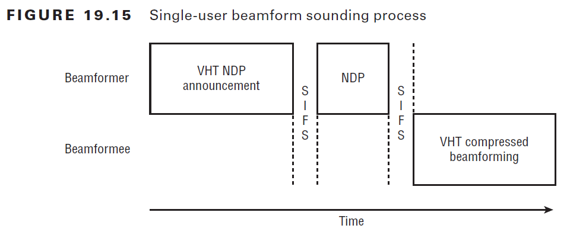
15.9.2 Multiuser MIMO
The goal of MU-MIMO is to use as many spatial streams as possible, whether the transmission is with one client using four spatial streams or with four clients using one spatial stream each.
MU-MIMO is only supported for downstream transmission from an AP to multiple clients.
15.9.3 Multiuser Beamforming
15.9.4 Quality of Service
15.10 Infrastructure requirements
15.11 802.11ac in a SOHO or home
15.12 WFA certification
| Feature | Mandatory | Optional |
|---|---|---|
| Channel width | 20, 40, 80 MHz | 80+80, 160 MHz |
| Modulation and coding | MCS 0–7 | MCS 8,9 |
| Spatial streams | One for clients, two for APs | Two to eight |
| Guard Interval | Long (800 nanoseconds) | Short (400 nanoseconds) |
| Beamforming feedback | Respond to beamforming sounding | |
| Space-time block coding(STBC) | Transmit and receive STBC | |
| Low-density parity check(LDPC) | Transmit and receive LDPC | |
| Multiuser MIMO | Up to four spatial streams per client, using the same MCS |
15.13 Review Questions
- Which of the following technologies was optional in 802.11n and
now mandatory in 802.11ac?
A. MIMO
B. RIFS
C. A-MPDU
D. A-MSDU
E. SU-MIMO
答案解析
C. 802.11ac requires that all frames are transmitted as A-MPDU. MIMO and SUMIMO are synonymous with each other and supported in both 802.11n and 802.11ac. A-MSDU is optional with both technologies. RIFS is no longer supported and is obsolete.
- With the first phase of 802.11ac supporting three spatial
streams, what is the maximum transmission speed?
A. 600 Mbps
B. 1.3 Gbps
C. 3.5 Gbps
D. 6.933 Gbps
E. 7.0 Gbps
答案解析
B. The first phase of 802.11ac supporting three spatials streams introduced transmission speeds up to 1.3 Gbps. 600 Mbps is the maximum transmission speed for the 802.11n amendment. 3.5 Gbps is the expected maximum transmission speed of the second phase of 802.11ac, which is expected to support four spatial streams. 6.933 Gbps is the maximum transmission speed for the 802.11ac amendment.
- Which of the following modulation methods are supported with
802.11ac? (Choose all that apply.)
A. BPSK
B. BASK
C. 32-QAM
D. 64-QAM
E. 256-QAM
答案解析
A, D and E. The 802.11ac amendment supports BPSK, QPSK, 16-QAM, 64-QAM, and 256-QAM. BASK and 32-QAM do not exist.
- Which of the following channel widths are supported in
802.11ac? (Choose all that apply.)
A. 20 MHz
B. 40 MHz
C. 80 MHz
D. 80+80 MHz
E. 160 MHz
答案解析
A, B, C, D and E. All of these are supported channel widths. The 160 MHz channel is actually made up of two 80 MHz channels that can be side by side or separated.
- When a 160 MHz wide channel is used, how many primary channels
are defined?
A. 1
B. 2
C. 3
D. 4
E. None
答案解析
C. When a 160 MHz wide channel is used, an 80 MHz, 40 MHz, and 20 MHz primary channel are defined.
- Using 256-QAM, how many bits are represented by each
subcarrier?
A. 1
B. 2
C. 4
D. 6
E. 8
答案解析
E. With 256-QAM, 256 distinct values can be represented, with each subcarrier is capable of representing 8 bits.
- How many modulation and coding schemes are defined in 802.11ac?
A. 8
B. 10
C. 64
D. 77
E. 256
答案解析
B. 802.11ac defines only 10 MCSs, unlike 802.11n, which defined 77. 802.11n defined MCSs based on modulation, coding method, the number of spatial streams, channel size, and guard interval. 802.11ac defines 10 MCSs based upon modulation and code rate.
- Which 802.11ac MCS range defines all of the MCSs that are
mandatory?
A. MCS 0–2
B. MCS 0–4
C. MCS 0–6
D. MCS 0–7
E. MCS 0–8
F. MCS 0–9
答案解析
D. MCS 0–7 are mandatory. MCS 8 and MCS 9 use 256-QAM, which is optional but will most likely be supported by most vendors.
- The 802.11ac amendment defines a maximum of how many spatial
streams for an AP, and how many maximum devices can an AP
communicate with at once?
A. One spatial stream, four devices
B. One spatial stream, eight devices
C. Four spatial streams, four devices
D. Eight spatial streams, four devices
E. Eight spatial streams, eight devices
答案解析
D. The amendment defines a maximum of eight spatial streams and only allows MU-MIMO communications with a maximum of four devices.
- Requiring all frames to be transmitted as A-MPDU frames
increases performance due to which of the following? (Choose
all that apply.)
A. Frame overhead is reduced.
B. Block ACK is required.
C. Frame information is shifted from the MPDU header to the PLCP header.
D. Reduced Interframe Space (RIFS) decreases the amount of time between frames.
E. A-MSDU is required; A-MPDU is optional.
答案解析
A and B. A-MPDU is mandatory for all frames in 802.11ac. It reduces the per-frame overhead and requires only a single block ACK. Frame information is shifted from the slow PLCP header to the faster MPDU header. RIFS is no longer supported.
- Which of the following technologies is part of explicit
beamforming? (Choose all that apply.)
A. Channel sounding
B. Feedback matrix
C. Sounding matrix
D. Steering matrix
E. Null data packet
F. Channel matrix
答案解析
B, D and E. The beamformer transmits an NDP announcement frame followed by an NDP frame. The beamformee processes this information and creates and transmits a feedback matrix. The AP uses the feedback matrices to calculate a steering matrix that is used to direct the transmission.
- What is the main reason that many smartphones do not support
multiple spatial streams?
A. It is difficult to install multiple antennas in the smart phone.
B. The size of the necessary technology would make the smartphone larger than desired.
C. Battery consumption would be too great.
D. Most smartphones actually do support four spatial streams.
答案解析
C. Due to technology costs and battery consumption, many smartphones only support a single stream of data.
- Which of the following are QoS categories? (Choose all that
apply.)
A.
AC_VO(access category voice)B.
AC_DA(access category data)C.
AC_VI(access category video)D.
AC_BE(access category best effort)E.
AC_BK(access category background)答案解析
A, C, D and E.
AC_DAis not a QoS category. - When transmitting a QoS frame using MU-MIMO, which of the
following statements is true? (Choose all that apply.)
A. Voice frames are always transmitted before lower-priority frames.
B. The category that is used to take control of the transmission is known as the primary access category.
C. If a lower category frame is transmitted, only higher category frames can be transmitted using the other spatial streams.
D. Lower category frames can be transmitted as long as they do not increase the transmission duration of the primary access category.
E. Multiple lower category frames can be transmitted along with the primary access category frame.
答案解析
B, D and E. The AP will initiate a transmission from whichever access category is next in line. This is known as the primary access category, and all others are known as secondary access categories. The AP can transmit additional frames (one or more) from primary or secondary access categories, providing that the frames are shorter than the primary frame.
- Name some of the factors that a modulation and coding scheme
(MCS) uses to define data rates for a VHT radio? (Choose all
that apply.)
A. Modulation method
B. Equal/unequal modulation
C. Number of spatial streams
D. GI
E. Channel size
F. Code rate
答案解析
A and F. VHT radios use modulation and coding schemes to define data rates based on modulation and code rate. This is different from HT radios that used modulation type, the number of spatial streams, channel size, guard interval, equal/unequal modulation, and other factors.
- Which of these capabilities are considered mandatory for a
phase one 802.11ac access point as defined by the Wi-Fi
Alliance’s vendor certification program called Wi-Fi
CERTIFIED ac? (Choose all that apply.)
A. 20, 40, 80, 160 MHz channel
B. MCS 0–7
C. MCS 0–8
D. Two spatial streams
E. Long guard interval
答案解析
B, D and E. Wi-Fi CERTIFIED ac access points require 20, 40, and 80 MHz channel widths, MCS 0-7, two spatial streams, and 800 nanosecond long guard interval.
- VHT radios are backward compatible with which of the following
type of 802.11 technology? (Choose all that apply.)
A. Clause 17 radios (HR-DSSS)
B. Clause 18 radios (OFDM)
C. Clause 14 radios (FHSS)
D. Clause 19 radios (ERP)
E. Clause 20 radios (HT)
答案解析
and E. VHT radios are backward compatible with all previous 5 GHz compliant radios. This include 802.11a (OFDM) radios and 5 GHz 802.11n (HT) radios.
- Which of the following statements is not true regarding the
number of subcarriers in the following channels? (Choose all
that apply.)
A. 40 MHz subcarriers = 2 times 20 MHz subcarriers
B. 40 MHz subcarriers > 2 times 20 MHz subcarriers
C. 80 MHz subcarriers = 2 times 40 MHz subcarriers
D. 80 MHz subcarriers > 2 times 40 MHz subcarriers
E. 160 MHz subcarriers = 2 times 80 MHz subcarriers
F. 160 MHz subcarriers > 2 times 80 MHz subcarriers
答案解析
B, D and F. A 20 MHz channel uses 64 subcarriers. A 40 MHz channel uses 128 subcarriers. An 80 MHz channel uses 256 subcarriers. A 160 MHz channel is made of two 80 MHz channels that can be either side by side or separated from each other. The number of subcarriers in a 160 MHz channel is exactly two times the number of 80 MHz subcarriers, 512 subcarriers.
- The 802.11ac amendment defines a maximum of how many spatial
streams for client?
A. One spatial stream
B. Two spatial streams
C. Four spatial streams
D. Eight spatial streams
答案解析
C. The amendment defines a maximum of four spatial streams for a client and eight for an AP.
- Which 802.11ac technology is the most revolutionary?
A. 80 MHz and 160 MHz channel widths
B. A-MPDU for all frames
C. 256-QAM modulation
D. 5 GHz only frequencies
E. MU-MIMO
F. Explicit beamforming
答案解析
E. MU-MIMO is the most revolutionary technology. 802.11 APs will now be able to transmit to multiple client stations at the same time. 80 MHz and 160 MHz channels are an expansion of the 40 MHz bonded channel introduced in 802.11n.